4.0 Introduzione
4.1 Strategia operativa
4.2 Schemi di assetto strategico
4.3 Strategie locali
4.4 Geografie della Trasformazione Strategica
4.5 Progetti Strategici
Scala
1:75.000
I quartieri e
la città pubblica
ST.SL
Strategie locali
4.3
PR050
Strategie Locali (SL)
I quartieri, la città pubblica e le Unità Territoriali nella VALSAT
La strategia a livello locale viene organizzata attraverso una sub-articolazione dei quartieri. Tale articolazione esprime
la volontà e la necessità di trasformare una suddivisione di carattere amministrativo in una di tipo sociale e quindi di
sviluppare strategie atte a rafforzare il carattere identitario delle comunità presenti nel territorio urbanizzato e agricolo.
La declinazione progettuale della Strategia a livello locale riflette sulle specificità emerse nel quadro conoscitivo e
diagnostico al fine di innalzare le qualità urbane, sociali, ecologiche e ambientali del comune di Parma.
1. Immagine pagina a fianco:
le suddivisioni ritagliano il territorio comunale
in partizioni specifiche sub-articolando la geo-
grafia dei quartieri.
Dal processo valutativo delle “Strategie Locali” la VALSAT definisce le “UNITA’ TERRITORIALI” (UT), che forniscono
un’interpretazione integrata dei sistemi funzionali alla base del Quadro Conoscitivo e Diagnostico, e fonde la valuta-
zione qualitativa sugli aspetti strutturali della scala territoriale ed altri di carattere specifico per parti di città connesse
alla strutturazione delle relazioni locali forti e caratterizzati.
Le UT si organizzano per tipologie, e si richiamano territorialmente alla geografia dei quartieri utilizzata dalla “Strategia
Locale” di cui sono sempre una sotto-articolazione.
La Strategia e la VALSAT articolano la suddivisione del territorio in modalità sensibilmente diverse ma quasi coinciden-
te. La Strategia recepisce la spazializzazione della diagnostica e ne utilizza i contenuti, su scala urbana e territoriale,
collocandoli nella geografia dei quartieri, sub-articolandoli in entità caratteristiche. La geografia derivante consente di
declinare startegie specifiche sia per il territorio urbanizzato, sia per il territorio agricolo.
Dalla Strategia a livello locale deriva quindi la partizione in ambiti urbani del territorio comunale. Essi sub-articolano i
quartieri e li inquadrano all’interno delle strategie generali, evidenziandone gli aspetti critici, gli obiettivi da raggiun-
gere, gli interventi previsti sia puntuali che generali sull’intera area (attraverso un differente sistema di progettualità),
l’assetto delle attrezzature e degli spazi collettivi, le prestazioni e le azioni da perseguire, per il raggiungimento degli
obiettivi previsti.
Le due articolazioni e geografie proposte (SQUEA e VALSAT) si appoggiano entrambe ai Quartieri e dialogano nel
rapporto necessario ed ineliminabile tra Diagnosi e Progetto.
Ne derivano 23 UT divise in 44 partizioni profondamente ancorati alla struttura del territorio, che richiamano nella de-
nominazione i quartieri e disegnano nella forma la geografia della Strategia Locale.
L’elaborazione cartografica nella pagina a fianco, corrisponde alla suddivisione del territorio comunale attuata dalla
strategia sub-articolando la geografia dei quartieri. Questa suddivisione si sovrappone allo schema di assetto strate-
gico delle correlazioni e dei servizi. Le aree cosi risultanti disegnano la geografia del sistema urbano e rurale, scompo-
nendo di fatto il territorio in unità con caratteristiche specifiche.
Definiti i 10 obiettivi che strutturano la “Vision”, il Piano PR050 affida il loro raggiungimento alla strategia per la qualità
urbana ed ecologica-ambientale (SQUEA) definita da 7 scenari (macro-strategie), dalle Strategie Locali e progetti
strategici di scale e dimensioni diversificate.
Le 7 macro-strategie espresse attraverso altrettanti scenari, vengono attivate da una serie di azioni tematizzate e
comprendono l’intero territorio comunale. Il simultaneo sguardo urbano e territoriale è necessario per consolidare le
differenti scale alle quali appartiene la città di Parma.
Il Piano PR050 elabora quindi le “Strategie locali” e ne esplicita gli obiettivi che gli interventi dovranno concorrere a
realizzare. Considerata l’impostazione del Piano PR050, le strategie locali alla scala del quartiere definiscono porzioni
di territorio e di città che trovano negli spazi e luoghi pubblici il loro comun denominatore.
Vicomero (Golese)
Viarolo (Golese)
Golese rurale
Cortile San Martino rurale
Baganzola - Cervara (Golese)
Area Expo (Golese)
Spip Eco-District (Cortile San Martino)
Eia (Golese)
Cortile San Martino urbano
Golese aeroporto Fognano
San Pancrazio urbano
San Leonardo
Crocetta (San Pancrazio)
San Lazzaro rurale
Pablo
Parma centro quadrante Nord-Est
Parma Oltretorrente
Parma centro storico
San Pancrazio rurale
San Lazzaro urbano
Distretto Sud-Ovest via Spezia (Molinetto)
Lubiana urbano
Comparto produttivo via Spezia (Molinetto)
Vicofertile (San Pancrazio)
Montanara
Montebello (Cittadella)
San Prospero (Lubiana)
Vigheffio (Molinetto)
Molinetto rurale
Mariano (Cittadella)
Mariano (Cittadella)
Lubiana rurale
Campus (Vigatto)
Gaione (Vigatto)
Porporano (Cittadella)
Alberi (Vigatto)
Botteghino (Cittadella)
Vigatto rurale
Pilastrello (Cittadella)
Cittadella rurale
Carignano (Vigatto)
Marano (Cittadella)
Corcagnano (Vigatto)
Vigatto (Vigatto)
Panocchia (Vigatto)
LEGENDA
1. Immagine pagina a fianco:
la geografia dei quartieri si sovrappone allo
schema di assetto strategico delle correlazioni,
dotazioni e servizi, costruendo i ritagli cartogra-
fici delle schede.
DOTAZIONI TERRITORIALI CORRELATE
DOTAZIONI AMBIENTALI PR050
4.5.1 Progetto strategico BOSCO ORBITALE -
Forestazione urbana e ambiti di potenziamento ecologico-ambientale
Parco Verde/Blu del Centro Storico
Parco del Naviglio
Parco Eco-District
Parco della Biodiversità
Parco della Memoria
Parco delle Rimembranze
Parco della Comunità
Parco lineare ex-pontremolese
Parco di mitigazione Campus-Corcagnano
Parco lineare "KM verde"
Aree verdi periurbane da valorizzare
4.5.2 Progetto strategico OASI DELLA BIODIVERSITÀ
4.5.4 Progetto strategico PARCO VERDE-BLU
4.5.8 Progetto strategico - VERDE TEMPORANEO - PARMA VIVAIO MOBILE
4.5.13 Progetto strategico - PARCO LINEARE EX PONTREMOLESE
Parchi principali esistenti da valorizzare
Struttura del verde esistente
Aree di forestazione urbana (Kyoto Forest) e verde di mitigazione
Corsi d'acqua principali
SPAZIO URBANO E MOBILITA' PR050
4.5.3 Progetto strategico PR050 GREEN RING
4.5.5 Progetto strategico CICLOVIA E PARCO TERRITORIALE DEL NAVIGLIO
4.5.6 Progetto strategico "URBAN LOOPS" - SemiRing
4.5.6 Progetto strategico "URBAN LOOPS" - Anello ciclabile
Aree impermeabili da desigillare
4.5.7 Progetto strategico - Aree stradali di potenziale pedonalizzazione
4.5.7 Progetto strategico - Aree stradali di possibile implementazione di viabilità "Zona 20"
4.5.7 Progetto strategico - Aree stradali di possibile implementazione di viabilità "Zona 30"
Rete ciclabile esistente
Rete ciclabile da realizzare
Stazione ferroviaria esistente
Stazioni ferroviarie in previsione
Nuovo tratto ferroviario
Linea ferroviaria TAV
Rete ferroviaria
Autostrada
Viabilità principale
Viabilità principale in previsione
Rete stradale
Parcheggi d'interscambio
Parcheggi in struttura
Piano di sviluppo aeroportuale
PROGETTI GENERALI E LOCALI
Parti del territorio senza fattori preclusivi alle trasformazioni e con opportunità
di sviluppo (art. 35 comma 6, LUR)
Linea elettrica da risanare
Incroci stradali da mettere in sicurezza
Interventi di messa in sicurezza su strada trafficata
Fronti urbani da potenziare
Aumento integrazione spaziale e funzionale
Assi viari da riqualificare
SERVIZI PR050
Aree urbane in cui potenziare il sistema dei servizi
Aree urbane in cui collocare nuovi servizi
Servizi e attrezzature di interesse comune
Salute e sanità
Istruzione, università e ricerca
Aree e attrezzature sportive, ricreative e culturali
Territorio Urbanizzato (TU)
Insediamenti sparsi
Comune di Parma (confine comunale)
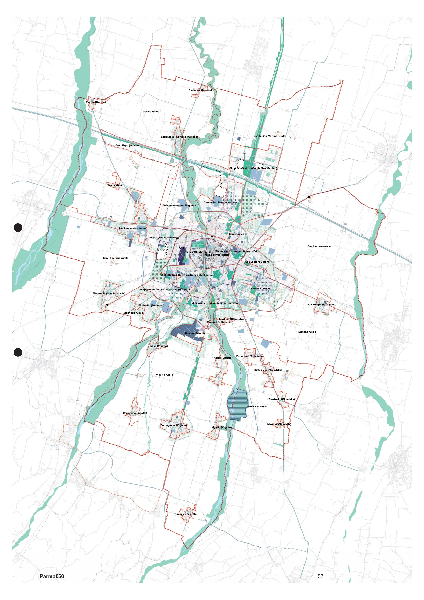
4.3.1
Scala
1:10.000
I quartieri e
la città pubblica
ST.SL
Strategie locali
PR050
Parma Centro Storico
Distretto centrale
Obiettivi:
Migliorare l’assetto e l’organizzazione delle attività e delle funzioni centrali;
Riuso dei contenitori storici disponibili a seguito della delocalizzazione di funzioni pubbliche e direzionali;
Incentivare sistemi di mobilità sostenibile dolce;
Incrementare le attività inerenti al commercio, favorendo la diversificazione dell’offerta
Ridurre la pressione degli utilizzatori urbani (city users) con il potenziamento dei parcheggi scambiatori esterni e delle
forme di modalità ciclabile e/o con i mezzi pubblici;
Delocalizzare le emittenze radio presenti.
PROGETTI STRATEGICI:
P1: Ridefinizione di tutte le carreggiate tali da
estendere le parti pedonali (tipo marciapiedi)
con la possibilità di piantumare alberi e arbusti
e/o incrementare il numero di aree verdi e/o
permeabili;
P2: Valorizzazione dell’alveo urbano del Torren-
te urbano quale corridoio ecologico;
P3: Definizione di una zona 20 nell’area interna
al “CASTRUM”, e zona 30 in tutto il CS (dentro
le mura);
P4: Definizione e trasformazione incrementale
dei Viali in “GREEN RING” con nuove sezioni
per mobilità pedonale e ciclabile e riduzione
della sezione carrabile.
Criticità:
Scarsa valorizzazione di numerosi edifici di valore storico - monumentale;
Concorrenza tra funzioni in edifici di pregio;
Incremento negozi sfitti e calo popolazione residente;
Modesta relazione fra i luoghi della cultura e i luoghi del commercio;
Scarsità di parcheggi;
Presenza di condizioni di saturazione del reticolo idrografico secondario;
Presenza di emittenze radio, che determinano un rilevante impatto elettromagnetico.
PROGETTI PILOTA:
P1: valorizzazione Piazzale della Pace quale
nuova interazione con il Parco Ducale;
P2: recupero del complesso di San Luca degli
Eremitani;
P3: riqualificare il percorso che passa a sud
del centro storico, che da via Adorni passa per
il ponte Caprazucca e arriva nell’Oltretorren-
te fino a piazzale Santa Croce, attraverso la
previsione di esercizi commerciali di vicinato e
medio-piccole strutture di vendita;
P4: assi viari da riqualificare con l’inserimento
di piccoli esercizi commerciali: via Bixio, via
Verdi, via Garibaldi;
P5: aumentare l’integrazione spaziale e fun-
zionale tra: la Cittadella e la Città storica; il
complesso di San Francesco ed il DUC/DUS;
la Stazione FS e la Città Storica;
- itinerario tematico storico culturale Parco
Ducale - Parco ex Eridania;
- itinerario commercio e funzioni pubbliche
Ospedale - Piazza Garibaldi - Parco Ex Eridania;
- itinerario commercio e funzioni pubbliche
Pilotta - Ghiaia - Conservatorio;
P6: trasformazione parziale di Viale Mentana in
spazio pubblico in modo progressivo e correla-
to alla definizione del Green Ring, favorendone
la pedonalizzazione, garantendo l’accessibilità
ai frontisti e mezzi di soccorso e di emergenza.
Strategia urbana generale:
Sostenere la qualificazione dei poli culturali e integrarli in logiche di contesto;
Per gli interventi di qualificazione edilizia intraprendere azioni di risparmio energetico e produzione di energia da fonti
rinnovabili, secondo quanto indicato dalle Direttive Europee e dai Piani Nazionali Energia e Clima;
Riorganizzazione infrastrutturale, per rivitalizzazione dei quartieri, attuando interventi diretti in alcune vie, o ambiti, che
possono essere rigenerati anche attraverso lo sviluppo e la diffusione di attività commerciali poste ai piani terra degli
edifici, che possano contribuire a rivitalizzare il quartiere e a diventarne nel contempo presidio di sicurezza e socialità;
Favorire gli usi temporanei attraverso intervento diretto del comune o la creazione di un albo degli immobili resi dispo-
nibili per la rigenerazione urbana.
Azioni:
Rafforzare le connessioni tra il nucleo storico riconosciuto come centro città (destra torrente) e la parte di nucleo
storico da valorizzare (sinistra torrente) attraverso il potenziamento dei percorsi ciclo-pedonali sui ponti cittadini e la
predisposizione di percorsi tematici
Abbattere l’inquinamento acustico e atmosferico incentivando sistemi di mobilità sostenibile
Limitare gli impatti paesaggistici dovuti alla cartellonistica pubblicitaria e alle antenne di ricezione televisiva;
Delocalizzare le emittenze radio in un’area rurale in coerenza con quanto previsto dal Piano Provinciale di Localizzazio-
ne delle Emittenti Radiotelevisive (PLERT).
LEGENDA
La legenda riferita al ritaglio cartografico della
pagina a fianco è consultabile alla pagina 56
dell’atlante, oppure nella tavola di “assetto
strategico delle correlazioni e dei servizi”.
Prestazioni di qualità urbana richieste:
Prevedere interventi di messa in sicurezza della rete stradale a favore della pedonalità, mediante interventi mirati a
ridurre i rischi di incidenti negli incroci critici.
Incrementare l’integrazione tra i servizi di Parma Centro e quelli dell’Oltretorrente e tra quelli del Centro storico con i
servizi del vicino ambito Ospedale.
Migliorare l’assetto vegetazionale dell’alveo del T. Parma, quale corridoio ecologico.
Trasformazione graduale di Viale Mentana in zona pedonale con la conseguente desigillazione e previsione di aree
verdi e piantumazione di alberature. Allo stesso tempo si richiede un più organico collegamento tra i sistemi edilizi.
Rimozione di funzioni incongre lungo viale Mentana lato interno (ex-carceri) con possibile installazione di giardino pub-
blico in connessione al viale pedonalizzato.
Desigillazione di parti di selciato Sanpietrini con riempimento non cementizio per le parti cittadine intervenendo su
parcheggi a raso e altri piazzali di grande dimensione.
Valorizzare, senza ostacolare la vista con possibili elementi fissi di Piazza Garibaldi vera e propria quinta scenografica
da preservare.
Possibile utilizzo di Piazza Garibaldi come “vivaio” (mobile) temporaneo di piante su vaso che periodicamente pos-
sono possono essere trapiantate in modo fisso in altre parti della città. Questo consentirebbe alla Piazza di avere
presenze vegetazionali senza però ostacolarne la vista in modo permanente.
Città pubblica e spazi collettivi (livello comunale e sovracomunale)
Interventi per favorire la messa in rete dei servizi locali esistenti attraverso la creazione di piste ciclabili che colleghino
tutto il centro cittadino favorendo l’asse della via Emilia, cercando di sostenere anche la pedonalità mediante interventi
volti alla messa in sicurezza della rete stradale e degli incroci critici (per esempio viale Toscanini e ponte di Mezzo) contri-
buendo a rafforzare le connessioni e la definizione di un entità unica;.
Integrare i servizi del centro storico con quelli esistenti nel vicino ambito Ospedale;.
Aumentare l’integrazione spazio-funzionale tra i servizi del centro storico con quelli dell’asse di via Trento.
Mettere in sicurezza alcune intersezioni lungo l’anello delle mura con interventi sui percorsi a forte traffico veicolare. (SC).
Individuare e valorizzare percorsi tematici che coinvolgono la rete dei servizi sovralocali (teatri, musei, spazi espositivi…).
Aumentare l’utilizzo delle aule universitarie e scuole superiori, per iniziative culturali, impiegando gli spazi a bassa flessibili-
tà. Favorire integrazione tra le strutture sanitarie presenti a sud-ovest attraverso collegamenti pedonali preferenziali.
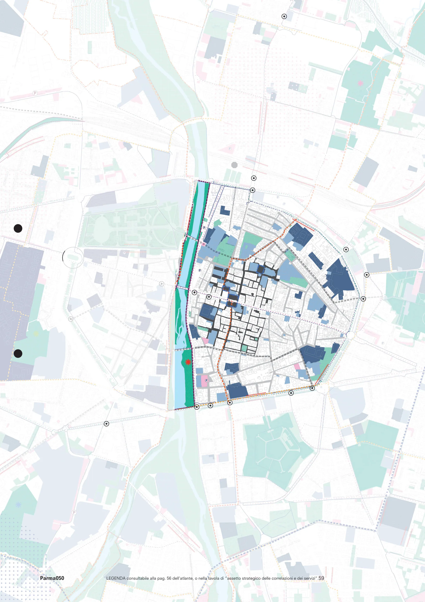
4.3.1a
Scala
1:10.000
I quartieri e
la città pubblica
ST.SL
Strategie locali
Parma Centro Storico
PR050
Distretto Centrale - Oltretorrente
Obiettivi:
Migliorare l’assetto e l’organizzazione delle attività e delle funzioni intorno al Parco Ducale;
Utilizzare il Palazzo Ducale per funzioni legate alla cultura;
Riuso dei contenitori storici disponibili a seguito della delocalizzazione di funzioni pubbliche e direzionali;
Incentivare sistemi di mobilità sostenibile e dolce;
Potenziare o creare nuove funzioni attrattive;
Incrementare le attività inerenti al commercio, favorendo la diversificazione dell’offerta;
Ridurre la pressione degli utilizzatori urbani (city users) con il potenziamento dei parcheggi scambiatori esterni e delle
forme di modalità ciclabile e/o con i mezzi pubblici;
PROGETTI STRATEGICI:
P1: Piazza sull’acqua versante ovest Pilotta. Il
Progetto rinforzerebbe il collegamento con il
Parco Ducale e costruirebbe un nuove fronte
verso l’acqua.
P2: Valorizzazione del limite nord-est del Parco
Ducale. Il bordo del Parco dovrebbe costruire
un perimetro con funzioni tali da attivarne le
relazioni con l’infrastruttura verde. Migliorare
gli accessi al Parco, collegandolo in rete con le
piste ciclabili.
P3: Valorizzazione dell’alveo urbano del Torren-
te urbano quale corridoio ecologico.
P4: Valorizzazione e ridefinizione del limite
nord-est del Parco Ducale. Il bordo del Parco
dovrebbe costruire un perimetro con funzioni
tali da costruirne una centralità. Migliorare gli
accessi al Parco, collegandolo in rete con le
piste ciclabili.
P5: Recupero del complesso dell’Ospedale
Vecchio.
Criticità:
Assenza di funzioni attrattive e carenza di luoghi di centralità riconosciuta;
Scarsa valorizzazione di numerosi edifici di valore storico e monumentale;
Concorrenza tra funzioni in edifici di pregio (Palazzo Ducale);
Incremento negozi sfitti e calo popolazione residente;
Modesta relazione fra i luoghi della cultura e i luoghi del commercio;
Scarsità di parcheggi;
Presenza di condizioni di saturazione del reticolo idrografico secondario;
Presenza di emittenze radio, che determinano un rilevante impatto elettromagnetico.
PROGETTI PILOTA:
P1: Riqualificare il percorso che passa a sud
del centro storico, che da via Adorni passa per
il ponte Caprazzucca e arriva nell’Oltretorren-
te fino a piazzale Santa Croce, attraverso la
previsione di esercizi commerciali di vicinato e
medio-piccole strutture di vendita.
P2: Assi viari da riqualificare con l’inserimento
di piccoli esercizi commerciali: via Bixio.
Strategia urbana generale:
Sostenere la qualificazione dei poli culturali e integrarli in logiche di contesto.
Per gli interventi di qualificazione edilizia intraprendere azioni di risparmio energetico e produzione di energia da fonti
rinnovabili, secondo quanto indicato dalle Direttive Europee e dai Piani Nazionali Energia e Clima;
Azioni:
Rafforzare le connessioni tra il nucleo storico riconosciuto come centro città (destra torrente) e la parte di nucleo
storico da valorizzare (sinistra torrente) attraverso il potenziamento dei percorsi ciclo-pedonali sui ponti cittadini e la
predisposizione di percorsi tematici.
Abbattere l’inquinamento acustico e atmosferico incentivando sistemi di mobilità sostenibile sia per il trasporto di
persone che merci.
Limitare gli impatti paesaggistici dovuti alla cartellonistica pubblicitaria.
PROGETTI SPECIFICI:
P1: Potenziare il network culturale del comples-
so dell’Ospedale Vecchio
P2: itinerario tematico storico culturale Parco
Ducale - Parco ex Eridania;
P3: itinerario commercio e funzioni pubbliche
Ospedale - Piazza Garibaldi - Parco Ex Eridania;
Itinerari oggetto di valorizzazione:
- itinerario tematico storico culturale Parco Ducale - Parco ex Eridania;
- itinerario commercio e funzioni pubbliche Ospedale - Piazza Garibaldi - Parco ex Eridania.
Valorizzare l’Oltretorrente attraverso:
- l’incremento delle funzioni commerciali e l’ampliamento dell’offerta di quest’ultime;
- la pedonalizzazione della zona intorno a strada Imbriani, con indicazioni di isole ambientali;
- Utilizzo dell’Ospedale Vecchio con attività culturali, e connesse al tempo libero;
- l’insediamento di attività commerciali, ricettive e servizi nei contenitori disponibili presenti tra le piazze Matteotti e
Picelli.
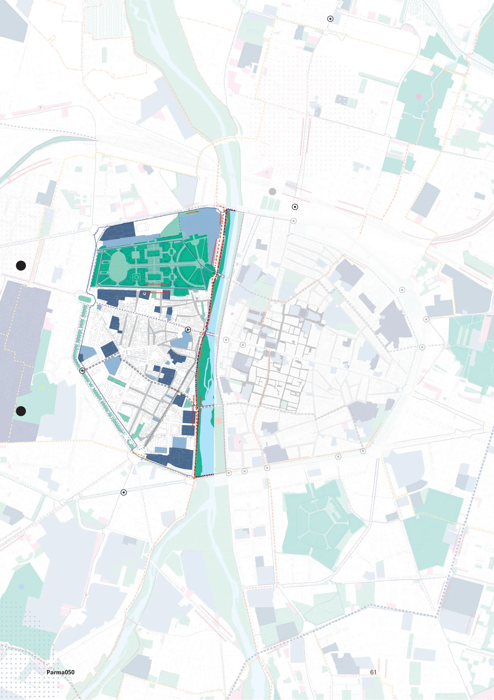
4.3.1b
Scala
1:7.500
I quartieri e
la città pubblica
ST.SL
Strategie locali
Parma centro quadrante Nord-Est
PR050
Distretto centrale
Obiettivi:
Consolidare il ruolo centrale del quartiere attraverso il recupero delle aree dismesse strategiche;
Realizzare isole ambientali di protezione della residenza;
Collegare a rete gli spazi per servizi pubblici;
Delocalizzare le attività produttive incongrue;
Potenziare il verde di mitigazione rispetto alle barriere infrastrutturali (ferrovia);
Limitare il rumore ambientale connesso agli assi principali infrastrutturali;
Potenziare e/o attivare connessioni funzionale qualificate con UT2;
Ridurre la pressione degli utilizzatori urbani (city users) con il potenziamento dei parcheggi scambiatori esterni e delle
forme di modalità ciclabile e/o con i mezzi pubblici.
PROGETTI STRATEGICI:
P1: riassetto complessivo del bordo del parco
della musica e rafforzamento del polo scola-
stico;
P2: valorizzazione dell’ingresso al Centro
Storico.
PROGETTI PILOTA:
P1: trasformazione in spazio pedonale di viale
Mentana con il riassetto del traffico lungo il
“green ring”;
P2: valorizzazione degli ingressi ail parco della
musica.
Criticità:
Assenza di funzioni attrattive e carenza di luoghi di centralità riconosciuta;
Scarsa valorizzazione di numerosi edifici di valore storico e monumentale;
Percezione di insicurezza connessa all’elevato mix culturale e sociale della popolazione insediata;
Modesta relazione fra i luoghi della cultura e i luoghi del commercio;
Scarsità di parcheggi;
Presenza di condizioni di saturazione del reticolo idrografico secondario;
Presenza di emittenze radio, che determinano un rilevante impatto elettromagnetico.
PROGETTI SPECIFICI:
P1: itinerario tematico storico culturale Parco
Ducale - Parco ex Eridania;
P2: itinerario commercio e funzioni pubbliche
Ospedale - Piazza Garibaldi - Parco Ex Eridania.
Strategia urbana generale:
Sostenere la qualificazione dei poli culturali e integrarli in logiche di contesto;
Per gli interventi di qualificazione edilizia intraprendere azioni di risparmio energetico e produzione di energia da fonti
rinnovabili, secondo quanto indicato dalle Direttive Europee e dai Piani Nazionali Energia e Clima.
Azioni:
Rafforzare le connessioni con il nucleo storico attraverso il potenziamento dei percorsi ciclo-pedonali e la predisposi-
zione di percorsi tematici.
Abbattere l’inquinamento acustico e atmosferico incentivando sistemi di mobilità sostenibile e dolce.
Limitare gli impatti paesaggistici dovuti alla cartellonistica pubblicitaria.
Itinerari oggetto di valorizzazione:
- itinerario tematico storico culturale Parco Ducale - Parco ex Eridania;
- itinerario commercio e funzioni pubbliche Ospedale - Piazza Garibaldi - Parco ex Eridania.
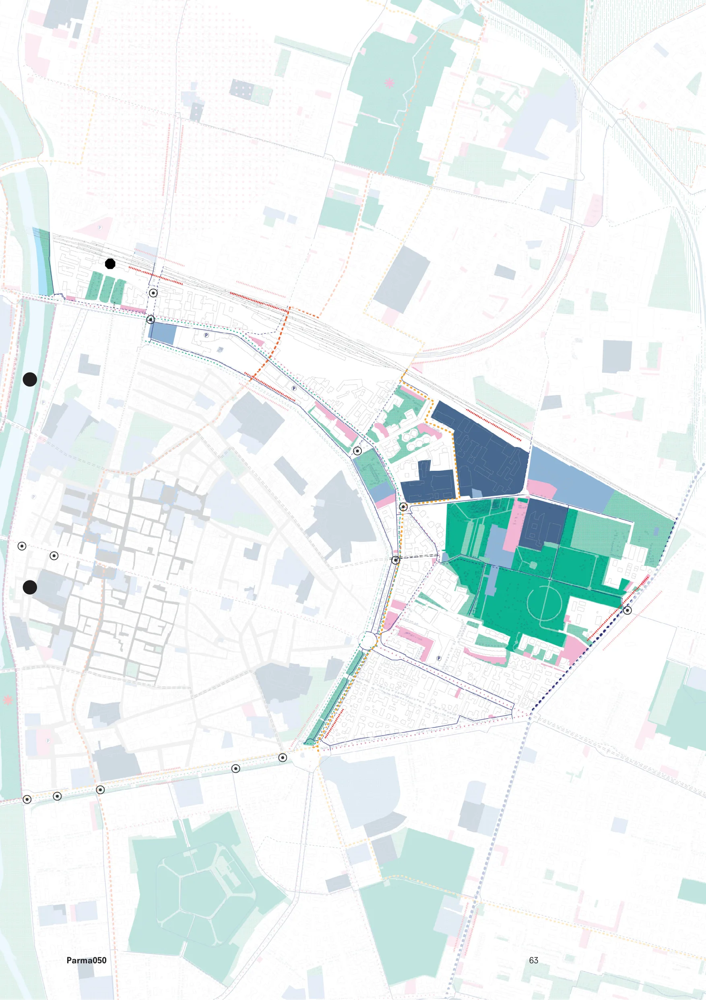
4.3.2
Scala
1:15.000
I quartieri e
la città pubblica
ST.SL
Strategie locali
Quartiere S. Leonardo
PR050
Quadrante nord
Obiettivi:
Ampliare il ruolo centrale del quartiere attraverso il recupero dei fabbricati e delle aree dismesse;
Realizzare isole ambientali di protezione della residenza;
Collegare a rete gli spazi per servizi pubblici;
Rafforzare la funzione centrale dei principali assi stradali;
Delocalizzare le attività produttive incongrue;
Potenziare il verde di mitigazione rispetto alle barriere infrastrutturali (ferrovia e tangenziale);
Rafforzare la funzione commerciale delle aree e degli assi viari in cui sono già presenti strutture di vendita;
Potenziare la dotazione dei parcheggi;
Limitare il rumore ambientale connesso alle principali attività produttive e ai principali assi infrastrutturali;
Garantire l’allaccio alla fognatura di tutti gli scarichi attualmente non collettati;
Risanamento e riqualificazione del reticolo idrografico secondario;
Aumento di presidi nel quartiere.
PROGETTI STRATEGICI:
P1: Collegamento dell’ex-scalo merci con la
parte nord (quartiere S. Leonardo) con attra-
versamento ciclo pedonale, valutando altresì,
la possibilità di un passaggio sotto il rilevato
ferroviario;
P2: Rigenerare via Palermo con attenzione al
bordo ferroviario;
P3: Favorire la rigenerazione urbana degli isolati
che affacciano su via Palermo attraverso i
principi della “Productive city.
PROGETTI PILOTA:
P1: Pasubio quale incubatore di imprese;
P2: Riqualificazione del Parco Naviglio con la
creazione di aree attrezzate per varie attività
all’aperto (pic nic, palestra, giochi bimbi,area
spettacoli, area cani), la realizzazione di un
nuovo ponte per l’attraversamento del canale
Naviglio;
P3: Progetti di “infill” nei tessuti degradati, con
demolizione e sostituzione di eventuali edifici
obsoleti e a fine ciclo vita.
Criticità:
Presenza di attività inserite in contesti non idonei e condizione critica della sicurezza;
Esistenza di edifici e aree sotto-utilizzate o dismesse;
Presenza di sistemi infrastrutturali ad alto impatto ambientale;
Presenza di elementi tecnologici ad alto impatto ambientale (elettrodotti);
Elementi infrastrutturali come barriere fisiche;
Margini dei parchi urbani irregolari e non riconoscibili;
Mancanza di parcheggi a servizio delle attività commerciali presenti sull’asse viario San Leonardo;
Condizioni di saturazione idraulica del reticolo idrografico secondario;
Presenza di aree di rispetto di pozzi idropotabili;
Presenza di scarichi non collettati a pubblica fognatura;
Qualità ambientale critica del Canale Naviglio Navigabile;
Carenza di adeguati collegamenti e reciproche permeabilità fra i principali interventi di riqualificazione urbana (Stazione,
Pasubio, ex Bormioli).
PROGETTI SPECIFICI:
P1: Potenziare i fronti commerciali nel tratto di
via san Leonardo;
P2: Proteggere dal traffico le funzioni residen-
ziali lungo via Europa – Moletolo attraverso la
creazione di barriere o interventi di mitigazione;
P3: Spostamento o interramento del tratto di
elettrodotto che attraversa l’ambito in direzione
estovest;
P4: Ultimazione della riqualificazione del parco
urbano del Naviglio e ridefinizione dei margini
del parco in modo da incrementarne l’accessi-
bilità;
P5: Mantenere gli spazi aperti lungo la Tan-
genziale Nord in continuità con il Parco del
Naviglio e aumento delle connessioni nord-sud;
P6: Migliorare la qualità degli spazi aperti di via
san Leonardo e di via Venezia, come asse di
connessione tra le principali strutture commer-
ciali esistenti;
P7: Risanamento del Canale Naviglio Naviga-
bile;
P8: Aumento delle connessioni e della permea-
bilità nord-sud dell’ambito: Via Bonomi, Piazzale
Salsi, Via Pasubio, Via Brescia valutando la
possibilità di una connessione con l’ambito Ex
Mura.
P9: Aumento delle connessione est-ovest da
Stazione, Pasubio, Via Palermo;
P10: Mettere in sicurezza la viabilità di via
Doberdò;
P11: Barriere antirumore lungo il tracciato ferro-
viario di attraversamento nell’ambito urbano;
P12: Ultimazione dei lavori di riqualificazione
dell’edificio denominato WOPA “Workout
Pasubio” e “ex padiglione Nervi” del comparto
Pasubio;
P13: Riqualificazione (con eventuale de-
impermeabilizzazione) del piazzale di via Milano
(Piazzale “Vittime della strage del Vajont);
P14: Ultimazione della riqualificazione di Piaz-
zale Salsi;
P15: Adeguamento sismico ed efficientamento
energetico della scuola “Micheli”;
P16: Ultimazione della riqualificazione del
“Parco dei Vetrai” ed eventuale estensione e
unificazione con il parco della scuola “Vicini-
Micheli”;
P17: Riqualificazione dell’ex Municipio di Corti-
le S. Martino.
Strategia urbana generale:
Favorire la rigenerazione urbana degli isolati che affacciano su Via Palermo attraverso i principi della strategia denomina-
ta “Productive city” incentivando e consentendo la riconversione a residenziale e altre funzioni miste al fine di favorire la
mixitè funzionale.
Attivazione di incentivi/premi volumetrici al fine di favorire la rigenerazione urbana tramite interventi diretti con nuovi stru-
menti introdotti dal PUG: Rooftop, Piano in Più, RIFO con riduzione dell’impronta a terra) con l’obiettivo di riqualificare gli
immobili dal punto di vista sismico ed energetico (rispondenza a requisiti prestazionali prestabiliti).
Strategia di ricucitura dei bordi dei parchi esistenti.
Strategia del Bosco Orbitale ai margini del territorio Urbanizzato.
Strategia di De sealing (desigillazione dei parcheggi esistenti con sostituzione della pavimentazione con materiali drenanti
e permeabili).
Sostenere la qualificazione dell’area lungo la ferrovia come “cluster” working and living e integrare l’ex scalo ferroviario
nella parte sud con collegamento ciclo-pedonale del Parco territoriale del Naviglio.
Strategie puntuali
Riqualificazione e ridefinizione dei margini del Parco Urbano del Naviglio aumentando l’accessibilità e le connessioni
nord-sud; collegamento con la parte nord con attraversamento ciclo pedonale o eventuale sottopasso ciclo pedonale di
viale Fratti (proposta progettuale).Rigenerare via Palermo con attenzione al bordo ferroviario.
Potenziamento e valorizzazione dei fronti commerciali nel tratto di Via S.Leonardo.
Risanamento del Canale Naviglio.
Miglioramento della connessione est-ovest trai comparti di riqualificazione della Stazione e del Pasubio.
Azioni:
Migliorare la qualità degli spazi aperti pubblici di connessione tra le principali strutture commerciali ed i servizi.
Incrementare la funzione centrale delle principali strade attraverso l’inserimento di nuovi servizi e attività commerciali.
Collegare al sistema fognario comunale gli edifici attualmente non collettati.
Spostamento o interramento degli elettrodotti presenti, con particolare riferimento a quelli che interessano aree edificate.
Mitigare gli impatti ambientali derivanti dalle principali attività produttive e dai principali assi infrastrutturali.
Salvaguardare le zone di rispetto dei pozzi idropotabili e potenziare la dotazione di parcheggi.
Attrezzature e spazi collettivi (livello comunale e sovracomunale - SC):
Incrementare la funzione centrale delle principali strade di quartiere attraverso l’inserimento di nuovi servizi e il potenzia-
mento della pedonalità di via Pasubio, via Firenze, via Verona, Strada Naviglio Alto, via Savona, via Palermo e via Ferrara;
Potenziare il sistema delle piste ciclabili urbane mediante il completamento della direttrice dell’ex sedime ferroviario a ser-
vizio dello stabilimento Bormioli Rocco e di via Treves, il completamento su via Venezia e su via San Leonardo; Realizzare
verde pubblico attrezzato attorno al confine dell’ambito a margine della tangenziale;
Integrare i servizi collocati sui fronti di via San Leonardo attraverso il miglioramento e la messa in sicurezza della sezione
stradale, cercando di favorire la pedonalità; Migliorare l’integrazione spazio-funzionale tra i servizi dell’ambito San Leo-
nardo con quelli del centro storico , in particolare nei nodi tra via Trento e via Trieste con la ferrovia;
Mettere in rete il sistema del verde pubblico attrezzato; Migliorare l’integrazione spazio-funzionale tra i servizi sui fronti
opposti di via Trento e di via San Leonardo, in particolare nel tratto prospiciente la scuola media Archimede;
Migliorare e mettere in sicurezza via San Leonardo, via Cagliari e via Venezia al fine di assicurare una migliore accessibili-
tà ai servizi che su queste strade si attestano; Potenziare la dotazione di parcheggi lungo Via Trento e Via San Leonardo;
Interrare o spostare il tratto di elettrodotto che passa nelle vicinanze della scuola di via Milano.
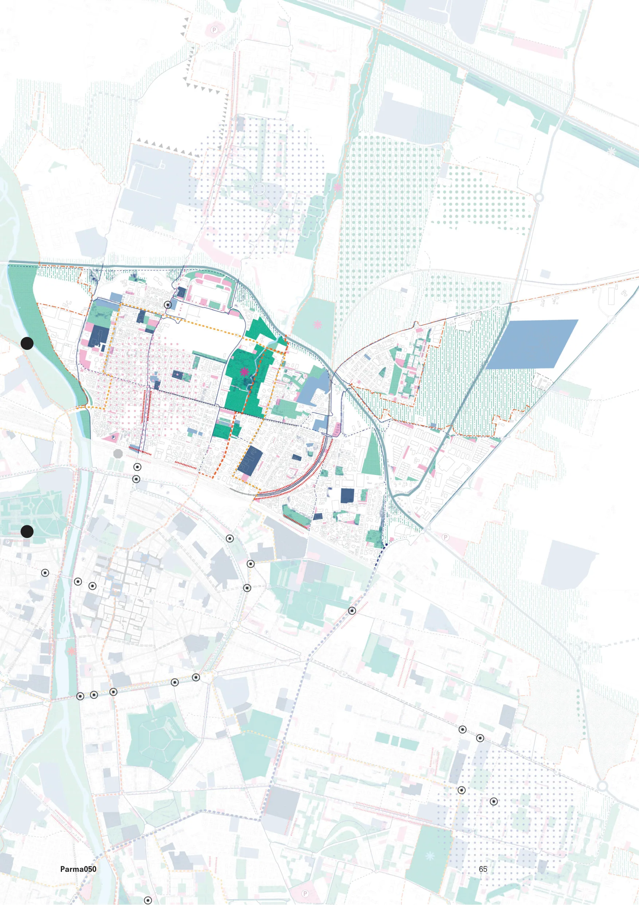
4.3.3
Scala
1:10.000
I quartieri e
la città pubblica
ST.SL
Strategie locali
Quartiere Cortile San Martino
PR050
Quadrante centrale
Obiettivi:
L’indirizzo principale degli interventi è rivolto ad una riqualificazione delle aree a ridosso del casello autostradale al fine
di migliorarne la qualità ambientale e l’immagine urbana in entrata e in uscita da Parma;
Data l’elevata accessibilità dell’area, sono previsti mix funzionali a servizio del quartiere, ed una serie di interventi atti al
potenziamento delle attuali attrezzature sportive e ricettive di interesse sovralocale.
Favorire il potenziamento del verde lungo l’autostrada a partire dal progetto di forestazione KM verde e a nord -sud e
fascia del Canale Naviglio sotto gli assi infrastrutturali
PROGETTI STRATEGICI:
P1: Casello autostradale, parcheggio scam-
biatore come “SMART MOBILITY HUB”,
accessi all’area urbana: risoluzione del nodo di
interscambio;
P2: Sviluppo urbano “Parma Gate North” e
possibile potenziamento del centro sportivo
“Moletolo”;
P3: Sviluppo “KM Verde” lungo l’autostrada
A1;
P4: Bosco orbitale;
P5: Trasformazione del tratto stradale dal
Casello alle Fiere (viale delle Esposizioni) in un
“boulevard verde” con piantumazione di alberi
e arbusti. Progetto di definizione identitaria
dell’ingresso a Parma.
Interventi di trasformazione:
Indirizzi insediativi
Localizzare le nuove edificazioni in continuità con quelle esistenti, evitando la formazione di aree intercluse inutilizzabili;
Espandere e potenziare l’area sportiva Moletolo, anche come separazione e mitigazione fra le funzioni residenziali e
quelle produttive esistenti. Le nuove strutture sportive potranno ospitare anche strutture di interesse sovra-locale;
Collegare a rete e potenziare gli spazi per servizi pubblici.
Indirizzi infrastrutturali
Declassare a strada urbana via Paradigna tramite interventi di “traffic calming” e mitigazione del traffico.
Indirizzi ambientali
Favorire il potenziamento del verde lungo l’autostrada a partire dal progetto di forestazione KM verde;
Garantire l’attraversamento della rete ecologica.
Criticità funzionali:
Carenza di spazi urbani centrali e riconoscibili;
Disomogeneità tipologica degli insediamenti come conseguenza del mix funzionale;
Presenza di aree agricole intercluse;
Esistenza di aree sotto utilizzate e dismesse.
Criticità ambientali:
Rumore: elevati livelli di rumore ambientale causati dalla vicinanza all’autostrada A1.
Risorse idriche: problematiche di natura idraulica correlate alla possibilità di drenaggio delle acque; forte saturazione
del reticolo idrografico secondario che caratterizzano la zona (Canale Naviglio Navigabile, Canale Burla); situazione di
criticità dal punto di vista idraulico del depuratore Parma Est.
Paesaggio ed ecosistemi: l’area di progetto potrebbe interessare alcune aree di interesse archeologico accertato.
Strategia urbana generale:
Potenziare attraverso incremento dell’infrastruttura verde spazi pubblici e favorirne la riqualificazione.
Potenziare il sistema delle piste ciclabili extra urbane e in relazione al Naviglio.
Incentivare l’impiego di fonti di energia alternativa per gli edifici esistenti e di nuovo insediamento.
Aumentare la vegetazione di mitigazione nelle strade principali di attraversamento.
Sviluppo del Bosco Orbitale in accordo ad eventuali completamenti insediativi.
Potenziamento dei servizi nell’area denominata “North Gate”.
Prestazioni di qualità urbana richieste:
Rumore
Dovrà essere garantito il rispetto dei limiti di classe acustica definita dalla ZAC.
Risorse idriche
Innanzitutto dovrà essere prevista la realizzazione di impianti separati tra la rete di canalizzazione delle acque meteori-
che (rete acque bianche) e la rete fognante (rete acque nere). Per quanto riguarda l’aumento delle superfici imperme-
abilizzate dovrà essere prevista l’applicazione di sistemi di laminazione delle acque meteoriche, quali il sovradimensio-
namento delle tubazioni e/o la realizzazione di vasche di laminazione.
Paesaggio ed ecosistemi
Per quanto possibile dovranno essere preservati i filari interpoderali e le formazioni arboree singole. Nel caso si inte-
ressino filari di gelsi, ne dovrà essere garantita la ricostruzione nel rispetto delle caratteristiche (lunghezza, interdistan-
za, orientamento, ecc.).
Mobilità
Il quartiere dovrà essere adeguatamente servito da percorsi ciclabili e pedonali, sia per garantire l’incentivazione degli
spostamenti casa-lavoro con sistemi di mobilità lenta, sia per garantire percorsi protetti verso l’area sportiva di Mole-
tolo.
Dovranno essere previsti l’interramento o lo spostamento delle eventuali linee elettriche AT e/o MT.
Azioni:
Lungo le direttrici infrastrutturali di attraversamento stadali e ferroviarie è possibile prevedere l’inserimento di barriere
antirumore con anche funzione di produzione energetica.
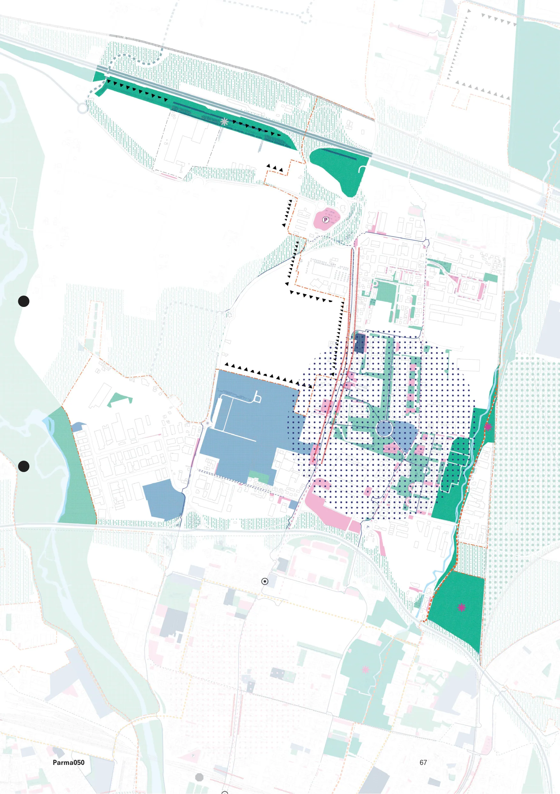
4.3.4
Scala
1:15.000
I quartieri e
la città pubblica
ST.SL
Strategie locali
Quartiere Cortile San Martino
PR050
SPIP - (Parma Eco District)
Obiettivi:
Trasformare il comparto in un Ecodistrict (capace di innescare cicli virtuosi riguardo gli aspetti energetici, di riciclo
delle acque, dei rifiuti, isola di calore...);
Diminuire l’impatto del grande rapporto di copertura dei fabbricati che insistono all’interno dell’aerale evidenziato e dei
futuri edifici;
Definizione di un nuovo parco lungo il Naviglio e comprendente il trapezio su cui insiste la cassa di espansione come
oasi naturale. il parco continua lungo la ferrovia per poi chiudersi a nord lungo la strada che definisce il bordo del
comparto;
Realizzare isole ambientali ecologicamente attive e collegare in rete gli spazi verdi interclusi;
Rafforzare la funzione centrale del naviglio come infrastruttura blu (come elemento di biodiversità attiva);
Utilizzo delle grandi superfici coperte dagli edifici industriali per la produzione di energia “pulita” con fotovoltaico, tetti
verdi e con modalità finalizzate alla diminuzione dell’assorbimento di calore;
Potenziare il verde di mitigazione rispetto alle barriere infrastrutturali (ferrovia e autostrada), lato nord KM Verde;
Rafforzare la funzione produttiva C2C (Cradle to Cradle), con l’insediamento di aziende capaci di operare con cicli
circolari;
Potenziare la dotazione di spazi naturali che caratterizzi specificatamente il comparto e congiuntamente potenzi forme
diversificate di attività.
PROGETTI STRATEGICI:
P1: Progetto del PARCO CENTRALE del Parma
Eco District in corrispondenza della cassa di
espansione appena sopra l’autostrada;
P2: Landmark del Parma Eco District come
elemento simbolico del Comparto;
P3: Fermata della linea TPL - SPIP-CAMPUS -
(intersezione Naviglio e via E. Forlanini);
P4: Fermata e stazione ferroviaria Parma-
Brescia;
P5: ciclovia territoriale Colorno-Parma-Sala
Baganza di attraversamento “PED” e relative
attrezzature;
P6: sviluppo del KM verde lungo l’autostrada
A1.
PROGETTI PILOTA:
P1: De-impermeabilizzazione di aree permeabili
sottoutilizzate a partire dai parcheggi e piazzali;
P2: Riqualificazione del Parco del Naviglio e
realizzazione delle attrezzature specifiche di
supporto alle attività ricreative.
Criticità:
Presenza di attività e sistemi infrastrutturali ad elevato impatto ambientale;
Presenza di elementi tecnologici ad alto impatto ambientale (elettrodotti);
Elementi infrastrutturali come barriere fisiche;
Margini del parco territoriale del canale Naviglio non riconoscibili e qualità non valorizzate;
Mancanza di attività complementari;
Condizioni di impermeabilità dei suoli e grande rapporto di copertura.
PROGETTUALITÁ SPECIFICHE:
P1: Sviluppo e installazione di impianti fotovol-
taici sui tetti dei capannoni industriali e conse-
guente sviluppo della comunità energetica.
Strategia urbana ecologica e ambientale generale:
Trasformazione dell’area industriale come evidenziata nelle tavole ST.SAS.4.2.1 (schema di assetto strategico struttu-
rale), in uno “smart productive neighbourhood”, ossia, Parma Eco District (PED).
Sostenere la trasformazione e riqualificazione dell’area a partire dall’utilizzo delle superfici di copertura come aree
dove predisporre infrastrutture per la produzione di energia attraverso pannelli fotovoltaici. La strategia propone che
tutti i capannoni presenti nell’area e in generale tutti gli edifici con una superficie superiore ai 250 mq. debbano predi-
sporre tale infrastruttura. Lo stesso vale anche per i nuovi insediamenti che in aggiunta dovranno anche predisporre
come supporto un tetto verde oltre all’istallazione di pannelli fotovoltaici. Gli edifici con superficie inferiore possono
scegliere se utilizzare altre soluzioni alternative come il tetto verde o semplicemente una colorazione riflettente (di soli-
to tendente al bianco) per evitare e mitigare gli effetti isola di calore.
Sfruttare in maniera produttiva i tetti delle industrie creando energia pulita in molti casi comporta anche un intervento
migliorativo delle strutture industriali. I tetti dei capannoni che presentano coperture in eternit o in amianto, (partico-
larmente inquinanti e pericolosi) attraverso la realizzazione di questo tipo di impianto (potranno essere previsti degli
incentivi specifici), aumentano per gli imprenditori la convenienza economica dell’investimento.
Prestazioni di qualità urbana richieste:
Collocazione di un landmark (in corrispondenza della nuova fermata della linea di TPL - Nord-Sud - strutturale) che
diventi un polo attrattore del comparto (edificio con funzioni come la ricerca, l’informazione, l’educazione, oppure un
elemento senza funzioni);
Realizzazione di aree verdi tra le aree costruite capaci di aumentare la presenza di natura, riqualificazione urbana favo-
rendo alternanza di spazi pubblici, privati e semipubblici ecologicamente attivi;
Realizzazione dei nuovi manufatti edilizi a basso impatto energetico con attenzione particolare alle coperture.
Risorse idriche e la messa in sicurezza del territorio dal punto di vista idraulico attraverso la realizzazione di idonei
bacini
Azioni:
Migliorare la qualità degli spazi verdi di connessione tra le principali strutture ambientali che attraversano il comparto.
Incentivi per incrementare le infrastrutture per la produzione energetica sulle coperture .
Collegare gli edifici del comparto a sistemi di riciclo delle acque piovane e provvedere allo stoccaggio in adeguati
sistemi sotterranei.
Mitigare gli impatti ambientali derivanti dalle principali attività produttive e dai principali assi infrastrutturali con riguar-
do alle piste ciclabili di attraversamento con presenze arboree e vegetazionali.
Attrezzature e spazi collettivi (livello comunale e sovracomunale):
Incrementare le funzioni ambientali connesse a spazi per l’educazione e l’apprendimento in modo che le trasformazioni
del comparto possano diventare motivo di studio e sensibilizzazione dei temi ambientali climatici della transizione.
Realizzare verde pubblico attrezzato attorno e all’interno del confine dell’ambito del canale Naviglio in collegamento
alle piste ciclabili.
Integrare il nodo/fermata della linea nord-sud (SPIP-CAMPUS), in corrispondenza dell’incrocio tra il canale Naviglio e
via Enrico Forlanini, attraverso l’inserimento di servizi e/o funzioni che identifichino e caratterizzino la fermata stessa;
diventando allo stesso tempo un elemento identitario del futuro Boulevard (via Forlanini) del PED.
Messa in sicurezza della sezione stradale.
Desigillare aree con elevata permeabilità (maggiore e uguale a 75%).
Interrare o spostare il tratto di elettrodotto che passa nelle vicinanze luoghi sensibili.
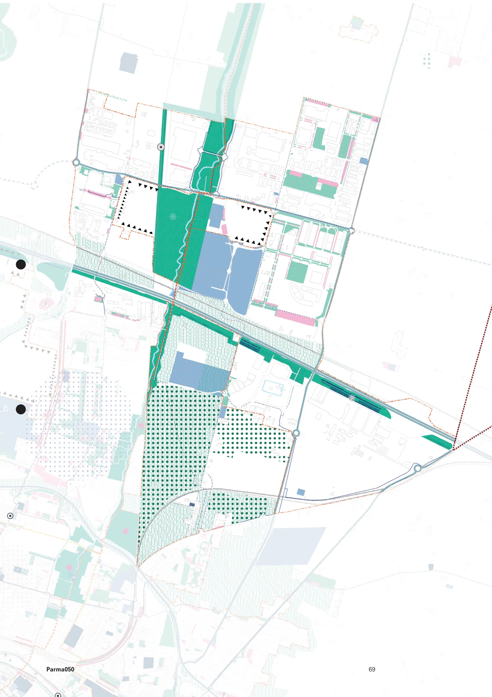
4.3.5
Scala
1:30.000
I quartieri e
la città pubblica
ST.SL
Strategie locali
Quartiere Cortile San Martino
PR050
Territorio Rurale (TR)
Obiettivi:
Incentivare il potenziamento delle fasce ripariali lungo il reticolo secondario delle acque;
Potenziare la dotazione diffusa di un reticolo ecologico minuto per la protezione della risorsa acqua e per rafforzare
la connettività ambientale e paesistica;
Contenere e qualificare l’insediamento rurale per potenziare la capacità di produzione di servizi ecosistemici e della
multifunzionalità degli usi agricoli;
Qualificare le aree di tutela agricola in prossimità delle aree di rinaturazione attraverso progetti integrati di paesaggio;
Conservare e potenziare il sistema delle stepping stone legate al verde del sistema insediativo diffuso in area agricola
Incentivare esperienze di agricolture sostenibili diversificate nella produzione agricola intensiva;
Definire gli spazi agricoli interclusi di frangia urbana e/o localizzati lungo le infrastrutture, rientranti nel Bosco orbitale
Prevedere interventi di mobilità sostenibile potenziando il sistema delle piste ciclabili;
Sviluppare la Green Infrastructure attraverso conservazione, implementazione e tutela nelle fasce di bordo degli ambiti
fluviali del Parco Territoriale del Parma;
Trasformare il tratto di competenza del Naviglio in Parco Territoriale in connessione alla ciclovia Colorno-Parma-Sala
Baganza;
Rafforzare il reticolo idrico minore anche attraverso la distribuzione di “water pound”.
PROGETTI STRATEGICI:
P1: Segmento del Parco Territoriale del Navi-
glio;
P2: Pista ciclabile Territoriale (Colorno-Parma-
Sala Baganza) e relative attrezzature;
P3: segmento del KM verde in relazione al
torrente Parma.
PROGETTI SPECIFICI:
P1: Piantumazione alberi di mitigazione lungo la
via Colorno;
P2: Rafforzamento del verde ecosistemico tra
il TR e il torrente Parma e i canali irrigui della
centuriazione.
Criticità:
Presenza di elettrodotti;
Forte presenza di infrastrutture di attraversamento: autostrada e ferrovia AV;
Poca diversità vegetazionale;
Percorsi ciclabili e pedonali da adeguare.
Strategia urbana generale:
Potenziare attraverso incremento dell’infrastruttura verde spazi pubblici e favorirne la riqualificazione.
Potenziare il sistema delle piste ciclabili extra urbane e in relazione al torrente sul lato est.
Incentivare l’impiego di fonti di energia alternativa per gli edifici esistenti.
Aumentare la vegetazione di mitigazione nelle strade principali di attraversamento.
Sviluppo della Green Infrastructure lungo la sponda destra del torrente Parma.
Trasformazione delle strade minori in viali alberati rinforzando i segni della centuriazione.
Prestazioni di qualità urbana richieste:
Opere di mitigazione da inquinanti dovute al traffico veicolare e all’attività agricola.
Valorizzare il percorso del Naviglio come parte integrante del territorio rurale sviluppandone le qualità ambientali.
Azioni:
Mitigare gli impatti ambientali derivanti dalle principali attività produttive e dai principali assi infrastrutturali con riguar-
do alle piste ciclabili di attraversamento con presenze arboree e vegetazionali.
Attrezzature e spazi collettivi (livello comunale e sovracomunale):
Incrementare le funzioni ambientali in corrispondenza del Naviglio e collegarlo al Parco Centrale del PED - Parma Eco
District come elemento ecosistemico attivo.
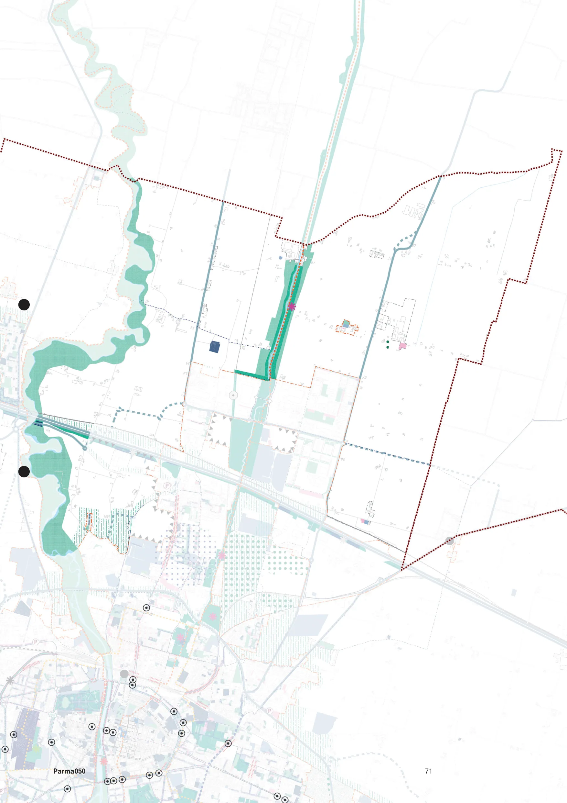
4.3.6
Scala
1:12.000
I quartieri e
la città pubblica
ST.SL
Strategie locali
Quartiere S. Lazzaro
PR050
Urbano
Obiettivi:
Nuova centralità polifunzionale e definizione dell’ingresso orientale della città;
Definire gli spazi di frangia interclusi e lungo le infrastrutture;
Regimentare la dotazione di strutture commerciali lungo l’asse della via Emilia;
Collegare a rete gli spazi per servizi pubblici;
Potenziare il verde di mitigazione a protezione degli insediamenti dal traffico veicolare e ferroviario;
Delocalizzare le attività produttive incongrue;
Prevedere interventi di mobilità sostenibile potenziando il sistema delle piste ciclabili;
Parco pubblico a fianco della tangenziale tale da connettersi all’area Ex-Salamini.
PROGETTI STRATEGICI:
P1:Area a parco (chiamato Parco Tangenziale
Est) tra la tangenziale e via Emilia e parte
dell’infrastruttura verde e del “Bosco Orbitale”;
P2:Progetto di qualificazione e rivalutazione del
perimetro del parco Falcone Borsellino.
PROGETTUALITÁ PILOTA:
P1: Mitigare gli impatti ambientali derivanti
dall’elevato traffico veicolare;
P2: Potenziare la presenza commerciale del
quartiere San Lazzaro attorno a piazzale
Lubiana;
P3: Realizzare un sistema coordinato di insegne
e recinzioni delle aree commerciali lungo la via
Emilia.
P4: Mitigazione della presenza degli elettrodotti
di attraversamento, con particolare riferimento
alle aree residenziali e sensibili;
P5: Qualificazione delle aree verdi di quartiere e
ridefinizione delle aree a parcheggio.
Criticità:
Forte impatto del traffico veicolare di attraversamento sugli insediamenti lungo la via Emilia;
Carenza di parcheggi a servizio delle attività commerciali presenti sull’asse viario principale;
Condizioni di saturazione del reticolo idrografico secondario.
Strategia urbana, ecologica e ambientale locale:
La Strategia urbana del parte urbana del quartiere S. Lazzaro prevede oltre alla valorizzazione del margine del parco
Martini, la ridefinizione delle strade carrabili con piantumazione di alberature per rafforzare il valore ecosistemico
dell’intero comparto e contestualmente riqualificare gli spazi pedonali e pubbli presenti.
Prestazioni di qualità urbana richieste:
Ai fini prestazionali di qualità urbana, i volumi dell’edificato nelle aree di completamento previste dovranno essere in
grado di rapportarsi alla morfologia del quartiere. Inoltre nella progettazione degli spazi aperti sarà buona norma incre-
mentare la qualità di quest’ultimi a partire da una ridefinizione dei bordi o del perimetro delle aree verdi.
A questo si deve unire un l’attento studio dei materiali, il potenziamento del verde negli spazi di risulta e la completa
fruibilità dei percorsi ciclo-pedonali.
Azioni:
Migliorare la qualità degli spazi aperti pubblici di connessione tra le strutture commerciali.
Potenziare la funzione centrale della via Emilia, attraverso la sistemazione dei fronti commerciali.
e la messa in sicurezza delle principali intersezioni viarie.
Ridurre l’inquinamento elettromagnetico tramite lo spostamento o interramento degli elettrodotti.
Salvaguardare le zone di rispetto dei pozzi idropotabili.
Attrezzature e spazi collettivi (livello comunale e sovracomunale - SC):
Mettere in sicurezza alcune intersezioni viarie sulla via Emilia
Interventi tesi a favorire l’integrazione tra i servizi collocati nell’ambito San Lazzaro con quelli del Margine Est in parti-
colare su via Sidoli.
Potenziare la pedonalità lungo le strade di quartiere.
Creare un collegamento tra le parti divise dalla ferrovia
Inserire aree a verde pubblico attrezzato e di parcheggi sul confine est dell’edificato.
Creare zone di compensazione verde lungo i perimetri urbanizzati e la tangenziale tali da poter definire nuove aree
boscate.
Spazi e attrezzature pubbliche di interesse sovracomunale:
Aumentare l’integrazione spazio-funzionale tra il Parco Falcone e Borsellino con il Parco Martini.
Prevedere un collegamento ciclabile con il quartiere Lubiana e a est verso l’Ex-salamini.
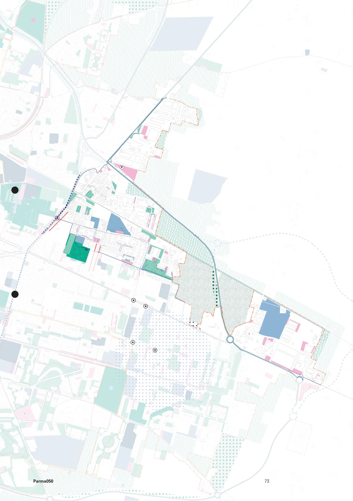
4.3.7
Scala
1:25.000
I quartieri e
la città pubblica
ST.SL
Strategie locali
Quartiere S. Lazzaro
PR050
Territorio Rurale - TR
Obiettivi:
Sviluppare la Green Infrastructure attraverso conservazione, implementazione e tutela nelle fasce di bordo degli ambiti
fluviali del Parco Territoriale dell’Enza;
Definizione dei principali corridoi di connessione ecologica e fruitiva est-ovest della GI tra zona dei Fontanili e fascia
del f. Enza;
Contenere e qualificare l’insediamento rurale per potenziare la capacità di produzione di servizi ecosistemici e della
multifunzionalità degli usi agricoli;
Qualificare le aree di tutela agricola in prossimità delle aree di rinaturazione attraverso progetti integrati di paesaggio;
Conservare e potenziare il sistema delle stepping stone legate al verde del sistema insediativo diffuso in area agricola;
Incentivare esperienze di agricolture sostenibili diversificate nella produzione agricola intensiva;
Nuovo parco pubblico in asse alla tangenziale operativamente connesso all’area Ex-Salamini;
Potenziare la dotazione diffusa di un reticolo ecologico minuto per la protezione della risorsa acqua e per rafforzare la
connettività ambientale e paesistica;
Potenziare il verde di mitigazione a protezione degli insediamenti dal traffico veicolare di attraversamento dell’area
rurale;
Definizione della Green Infrastructure di mitigazione per gli insediamenti per via Emilia, ferrovia, autostrada e per gli
interventi della nuova via Emilia bis;
Definire gli spazi agricoli interclusi di frangia urbana e localizzati lungo le infrastrutture, rientranti nel progetto del Bo-
sco orbitale;
Prevedere interventi di mobilità sostenibile potenziando il sistema delle piste ciclabili.
Criticità:
Forte impatto del traffico veicolare di attraversamento nelle aree limitrofe nel TR;
Carenza di alberature e biodiversità nel sistema rurale complessivo;
Condizioni di saturazione del reticolo idrografico secondario.
Strategia urbana, ecologica e ambientale locale:
La strategia prevede la piantumazione di alberature anche con funzione di mitigazione da inquinanti e la creazione di
un ambiente rurale estensivo avendo cura di valorizzare le parti centuriate.
Prestazioni di qualità urbana richieste:
Ai fini prestazionali di qualità urbana, la differenziazione del sistema veicolare di attraversamento potenzialmente defi-
nendo corsie preferenziali per la mobilità dolce. A questo si deve unire un attento studio dei materiali, il potenziamento
del verde negli spazi di risulta e la completa fruibilità dei percorsi ciclo-pedonali.
Azioni:
Migliorare la qualità degli spazi aperti di connessione tra le strutture agricole e le infrastrutture di attraversamento.
Ridurre l’inquinamento elettromagnetico tramite lo spostamento o interramento degli elettrodotti.
Salvaguardare le zone di rispetto dei pozzi idropotabili.
Attrezzature e spazi collettivi (livello comunale e sovracomunale - SC):
Inserire aree a verde pubblico attrezzato con alberature.
Creare zone di compensazione verde lungo i perimetri urbanizzati.
Definire nuove aree boscate.
Spazi e attrezzature pubbliche di interesse sovracomunale:
Aumentare l’integrazione spazio-funzionale tra i parchi presenti nel quartiere. e il bosco orbitale.
Prevedere un collegamento ciclabile con il quartiere Lubiana a nord est con il bosco orbitale e il territorio agricolo di
frangia.
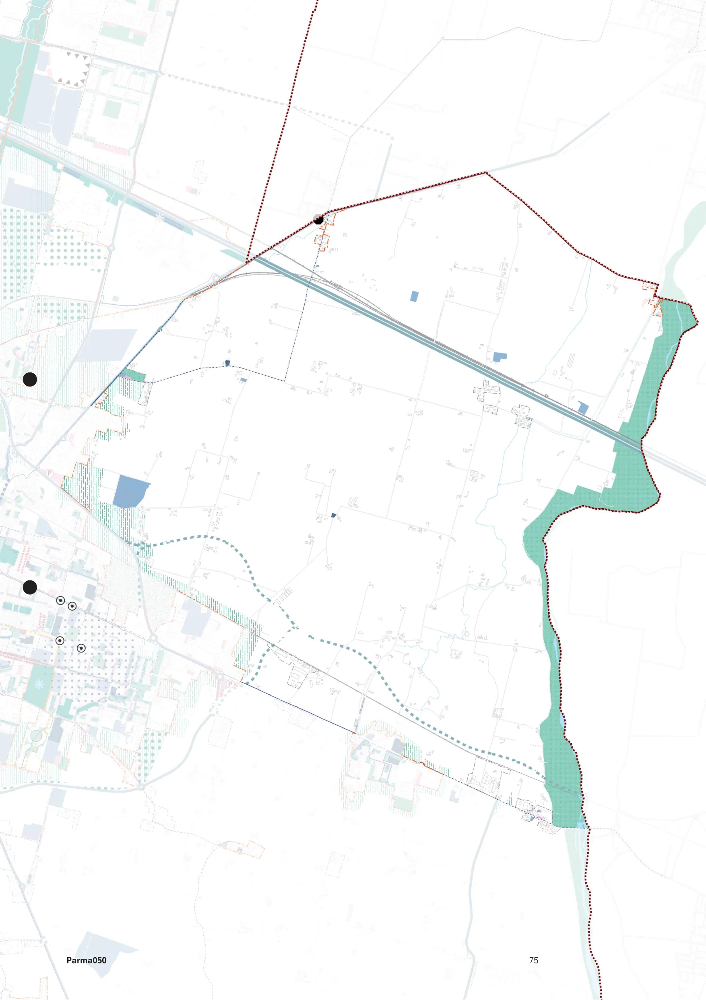
4.3.8
Scala
1:12.000
I quartieri e
la città pubblica
ST.SL
Strategie locali
Quartiere Lubiana
PR050
Territorio Urbano - TU
Obiettivi:
Rafforzare la funzione centrale della via Emilia;
Recuperare gli spazi di frangia interclusi nell’edificato;
Incentivare la dotazione di strutture commerciali lungo l’asse della via Emilia;
Collegare a rete gli spazi per servizi pubblici;
Potenziare il verde di mitigazione a protezione degli insediamenti dal traffico veicolare;
Delocalizzare le attività produttive incongrue;
Prevedere interventi di mobilità sostenibile potenziando il sistema delle piste ciclabili;
Ridurre l’inquinamento elettromagnetico da elettrodotti;
PROGETTI STRATEGICI:
P1:Progetto di un nuovo parco (chiamato
Parco della Biodiversità) tra via Sidoli e via
Budellungo;
P2:Progetto di un centro civico in forma aggre-
gata ad altre funzioni per aumentare l’offerta di
dotazioni pubbliche;
P3:Progetto di una scuola primaria zona est
P4: Area di densificazione lungo la via Emilia
con costruzione del parco lato nord racchiuso
dalla tangenziale;
P5: Progetto nuova scuola secondaria “scuola
nel parco”.
Criticità:
Forte impatto del traffico veicolare di attraversamento sugli insediamenti lungo la via Emilia, via Sidoli, via Zarotto e
conseguentemente dell’inquinamento da rumore;
Mancanza di parcheggi a servizio delle attività commerciali presenti sull’asse viario principale;
Condizioni di saturazione del reticolo idrografico secondario;
Presenza di zone di rispetto di pozzi idropotabili;
Elevato impatto dei campi elettromagnetici da elettrodotti;
Carenza di spazi urbani centrali.
PROGETTI PILOTA:
P1: qualificazione dei Parchi di quartiere;
P2: Progetto di verde di mitigazione lungo la
tangeziale sud.
PROGETTUALITÁ SPECIFICHE:
P1: Mitigare gli impatti ambientali derivanti
dall’elevato traffico veicolare;
P2: Potenziare la presenza commerciale del
quartiere san Lazzaro attorno a piazzale Lubia-
na;
P3: Realizzare un sistema coordinato di insegne
e recinzioni delle aree commerciali lungo la via
Emilia.
P4: Mitigazione della presenza degli elettrodotti
di attraversamento, con particolare riferimento
alle aree residenziali e sensibili;
P5: Completamento della riqualificazione
(Energetica e sismica) degli alloggi ERP di via
del Garda.
Strategia urbana, ecologica e ambientale locale:
La strategia prevede la formazione progressiva di zone 30 e la conseguente piantumazione di alberature anche con
funzione di mitigazione da inquinanti oltre che provvedere alla diminuzione dell’isola di calore. Contestualmente do-
vranno essere considerati possibili restringimenti della viabilità carrabile per fornire adeguati spazi per ciclisti e pedoni,
aumentando la qualità urbana complessiva. Viene prevista la possibilità di sviluppare nella porzione agricola indicata in
cartografia la formazione di un parco di nuova generazione; chiamato “Parco della Biodiversità”. Si dovrà considerare
l’allocamento di servizi (anche scuole) nell’area est del quartire come indicato. La strategia considera le progettualità
specifiche come parti integranti la strategia stessa.
Prestazioni di qualità urbana richieste:
Ai fini prestazionali di qualità urbana, i volumi dell’edificato nelle aree di completamento previste dovranno essere
in grado di rapportarsi alla morfologia del quartiere. Inoltre nella progettazione degli spazi aperti sarà buona norma
incrementare la qualità di quest’ultimi a partire da una ridefinizione dei bordi o del perimetro delle aree verdi. A questo
si deve unire un l’attento studio dei materiali, il potenziamento del verde negli spazi di risulta e la completa fruibilità dei
percorsi ciclo-pedonali.
Azioni:
Migliorare la qualità degli spazi aperti pubblici di connessione tra le strutture commerciali.
Potenziare la funzione centrale della via Emilia, attraverso la sistemazione dei fronti commerciali e la messa in sicurezza
delle principali intersezioni viarie.
Avvio di interventi di messa in sicurezza su strada trafficata tra cui via Budellungo e altre viabilità.
Ridurre l’inquinamento elettromagnetico tramite lo spostamento o interramento degli elettrodotti.
Salvaguardare le zone di rispetto dei pozzi idropotabili.
Potenziare nuclei di concentrazione attività commerciali e riqualificazione degli spazi pubblici per creare nuove centrali-
tà alla scala del quartiere.
Attrezzature e spazi collettivi (livello comunale e sovracomunale - SC):
Mettere in sicurezza alcune intersezioni viarie sulla via Emilia, su via Sidoli, via Mantova, via Zarotto e via Traversetolo.
Interventi tesi a favorire l’integrazione tra i servizi collocati nell’ambito San Lazzaro con quelli del Margine Est in parti-
colare su via Sidoli.
Potenziare la pedonalità lungo le strade di quartiere.
Creare un collegamento tra le polarità di piazzale Lubiana e i servizi di via Newton.
Inserire aree a verde pubblico attrezzato e di parcheggi sul confine est dell’edificato.
Creare zone di compensazione verde lungo i perimetri urbanizzati e la tangenziale tali da poter definire nuove aree
boscate.
Spazi e attrezzature pubbliche di interesse sovracomunale:
Aumentare l’integrazione spazio-funzionale con il Parco Ferrari.
Prevedere un collegamento ciclabile con il Parco Ferrari.
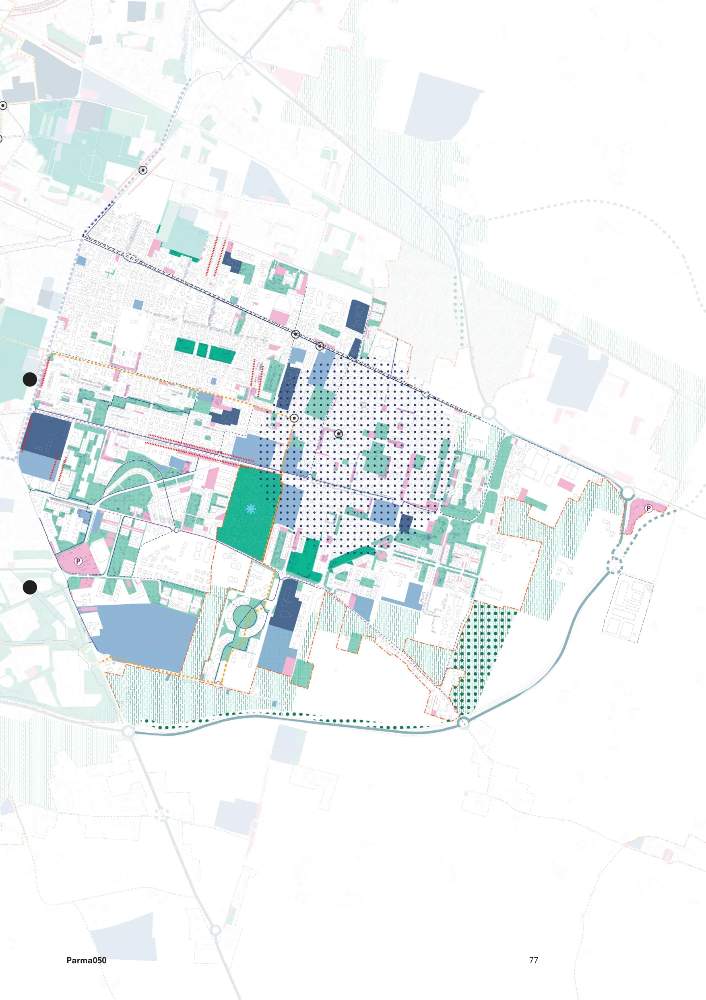
4.3.9
Scala
1:25.000
I quartieri e
la città pubblica
ST.SL
Strategie locali
Quartiere Lubiana
PR050
Territorio Rurale - TR
Obiettivi:
Sviluppare la Green Infrastructure attraverso conservazione, implementazione e tutela nelle fasce di bordo degli ambiti
fluviali del Parco dell’Enza;
Potenziare la dotazione diffusa di un reticolo ecologico minuto per la protezione della risorsa acqua e per rafforzare la
connettività ambientale e paesistica;
Contenere e qualificare l’insediamento rurale per potenziare la capacità di produzione di servizi ecosistemici e della
multifunzionalità degli usi agricoli;
Incentivare esperienze di agricolture sostenibili diversificate nella produzione agricola intensiva;
Conservare e potenziare il sistema delle stepping stone legate al verde del sistema insediativo diffuso in area agricola
Preservare e valorizzare il paesaggio agricolo e naturale, limitando il consumo di suolo;
Migliorare la connessione tra ambito rurale e città, attraverso mobilità sostenibile e infrastrutture ecologiche;
Favorire un’agricoltura multifunzionale e sostenibile, incentivando pratiche agroecologiche e la filiera corta;
Rafforzare la resilienza climatica e ambientale, con interventi per la gestione delle acque e il ripristino ecologico;
Incrementare la qualità dello spazio pubblico rurale, creando nuovi servizi, aree verdi e percorsi naturalistici;
Mitigare l’impatto delle infrastrutture viarie, attraverso soluzioni paesaggistiche e di riduzione delle emissioni.
PROGETTI STRATEGICI:
P1: Bosco Orbitale lungo il TU di S. Prospero
PROGETTI PILOTA:
P1: Sviluppo delle infrastrutture ciclabili di
completamento (lungo via Emilia)
PROGETTUALITÁ SPECIFICHE:
P1: Piantumazioni lungo vie di collegamento
principali e secondarie con contestuali inter-
venti ai fossati e reticoli idrografici
Criticità:
Forte impatto ambientale degli assi infrastrutturali;
Presenza di elementi tecnologici di impatto ambientale (elettrodotti);
Scarso coordinamento tra urbanizzazione e tutela del paesaggio rurale, con edificazioni disperse e infrastrutture che
interrompono la continuità agricola;
Bassa accessibilità del territorio rurale: carenza di percorsi ciclopedonali e trasporto pubblico limitato;
Diminuzione della biodiversità e degrado del suolo a causa della riduzione delle aree naturali e dell’intensificazione
agricola non sostenibile;
Rischio idrogeologico e scarsa gestione delle acque meteoriche, con aumento della vulnerabilità del territorio a feno-
meni di allagamento;
Carente dotazione di spazi pubblici e attrezzature collettive in ambito rurale, limitando le opportunità di aggregazione e
sviluppo sociale;
Impatto ambientale delle infrastrutture stradali: elevato traffico veicolare, inquinamento atmosferico e acustico lungo
le principali vie di collegamento.
Strategia urbana, ecologica e ambientale locale:
Creazione di un “Parco Rurale Interconnesso”, con percorsi ecologici, aree agricole multifunzionali e spazi di fruizione
pubblica.
Riqualificazione e riconversione delle aree agricole con modelli sostenibili (agroforestazione, colture resilienti, agricol-
tura biologica).
Recupero e valorizzazione delle cascine storiche, destinate a ospitalità rurale, didattica ambientale e turismo sostenibi-
le.
Implementazione di sistemi di gestione sostenibile dell’acqua, con canali di drenaggio naturale, bacini di raccolta e
fitodepurazione.
Sviluppo di una rete di mobilità dolce (piste ciclabili, sentieri pedonali, percorsi equestri) per favorire connessioni tra
frazioni rurali e centro città.
Creazione di “Corridoi Ecologici”, con boschi ripariali e fasce tampone per migliorare la biodiversità e mitigare il
rischio idrogeologico.
Prestazioni di qualità urbana richieste:
Rafforzamento delle fasce di mitigazione ecologica lungo le strade principali, con piantumazioni e barriere verdi per
ridurre l’inquinamento.
Infrastrutture di drenaggio sostenibile (SUDS) per la raccolta e il riutilizzo delle acque meteoriche.
Rete di percorsi verdi e ciclopedonali integrata con il sistema dei trasporti pubblici per una mobilità più sostenibile.
Potenziamento delle aree di sosta e connessione rurale, con punti di ristoro, bike-sharing e colonnine di ricarica per
e-bike.
Spazi di transizione tra urbano e rurale con orti comunitari, giardini condivisi e piccole aree ricreative.
Azioni:
Espansione della rete di mobilità dolce e del Parco Rurale.
Completamento delle fasce di mitigazione ecologica lungo le infrastrutture viarie.
Potenziamento del mercato agricolo locale e delle attività legate all’agriturismo.
Introduzione di soluzioni edilizie sostenibili per la riqualificazione degli insediamenti rurali.
Ampliamento degli spazi pubblici attrezzati e delle aree sportive all’aperto.
Mettere in relazione l’attuazione dei nuovi insediamenti alla risoluzione del problemi connessi al
traffico di attraversamento lungo la Via Emilia.
Attrezzature e spazi collettivi:
Luoghi di aggregazione rurale: spazi polifunzionali per attività culturali, associative e didattiche sulla sostenibilità.
Parco rurale multifunzionale: un sistema di aree verdi attrezzate con sentieri, zone picnic, punti di osservazione naturali-
stica.
Orti urbani e comunitari per incentivare la produzione locale e l’educazione ambientale.
Aree di sosta e percorsi benessere per attività all’aria aperta e turismo lento.
Mercati agricoli e spazi di vendita diretta per valorizzare i prodotti locali e rafforzare la filiera corta.
Hub di mobilità sostenibile con parcheggi di interscambio, noleggio biciclette e trasporto pubblico potenziato.
Trasformare alcune aree agricole perimetrali al fine di costituire un margine netto e ben riconoscibile con l’inserimento
di aree a verde pubblico attrezzato e a verde sportivo.
Favorire l’integrazione spazio-funzionale tra i servizi esistenti e le dotazioni territoriali (Bosco Orbitale).
4.3.9a
Scala
1:25.000
I quartieri e
la città pubblica
ST.SL
Strategie locali
Quartiere Lubiana
PR050
San Prospero
Obiettivi:
Limitare il traffico all’interno del centro abitato;
Garantire una maggior qualità dei servizi presenti;
Garantire il collegamento ciclabile con Parma;
Limitare l’inquinamento acustico generato dall’infrastruttura viaria di attraversamento;
Garantire l’attraversamento dell’ambito da parte degli elementi della rete ecologica;
Riduzione dell’esposizione della popolazione ai campi elettromagnetici.
PROGETTI STRATEGICI:
P1: Bosco Orbitale lungo il TU di S. Prospero
PROGETTI PILOTA:
P1: Sviluppo delle infrastrutture ciclabili di
completamento (lungo via Emilia)
PROGETTUALITÁ SPECIFICHE:
P1: Piantumazioni lungo vie di collegamento
principali e secondarie con contestuali inter-
venti ai fossati e reticoli idrografici
Criticità:
Forte impatto ambientale degli assi infrastrutturali sugli insediamenti;
Presenza di elementi tecnologici di impatto ambientale (elettrodotti);
Carenza nell’offerta di servizi;
Carenza di strutture commerciali;
Condizioni di criticità acustica nelle zone prospicienti aree produttive e principali infrastrutture viabilistiche e ferrovia-
rie.
Strategia urbana, ecologica e ambientale locale:
Definizione del”bosco orbitale” di tutela del paesaggio rurale;
La strategia prevede la piantumazione di alberature anche con funzione di mitigazione da inquinanti e la creazione di
un ambiente rurale estensivo avendo cura di valorizzare le parti centuriate.
Prestazioni di qualità urbana richieste:
Ai fini prestazionali di qualità urbana, i volumi dell’edificato nelle aree di completamento previste dovranno rispettare e
rapportarsi alla morfologia del quartiere.
Nella progettazione degli spazi aperti sarà buona norma incrementare la qualità di quest’ultimi attraverso l’attento stu-
dio dei materiali, il potenziamento del verde negli spazi di risulta e la completa fruibilità dei percorsi ciclo-pedonali.
Realizzare nuovi servizi al cittadino all’interno della frazione.
Azioni:
Potenziare la disponibilità di servizi pubblici nella parte sud del centro abitato in continuità con l’abitato esistente.
Potenziamento della rete ecologica in prossimità del reticolo idrico minore: canale Gambalone Vivo.
Localizzare le nuove edificazioni in continuità con quelle esistenti, evitando la formazioni di aree intercluse inutilizzabili.
Collegare in rete i principali servizi pubblici.
Mettere in relazione l’attuazione dei nuovi insediamenti alla risoluzione del problemi connessi al
traffico di attraversamento lungo la Via Emilia.
Attrezzature e spazi collettivi di carattere comunale:
Limitare il traffico all’interno del centro abitato intervenendo con la messa in sicurezza della Via Emilia nel tratto interno
all’abitato.
Collegare in rete i principali servizi pubblici.
Trasformare alcune aree agricole perimetrali al fine di costituire un margine netto e ben riconoscibile con l’inserimento
di aree a verde pubblico attrezzato e a verde sportivo.
Favorire l’integrazione spazio-funzionale tra i servizi esistenti e le dotazioni territoriali (Bosco Orbitale).
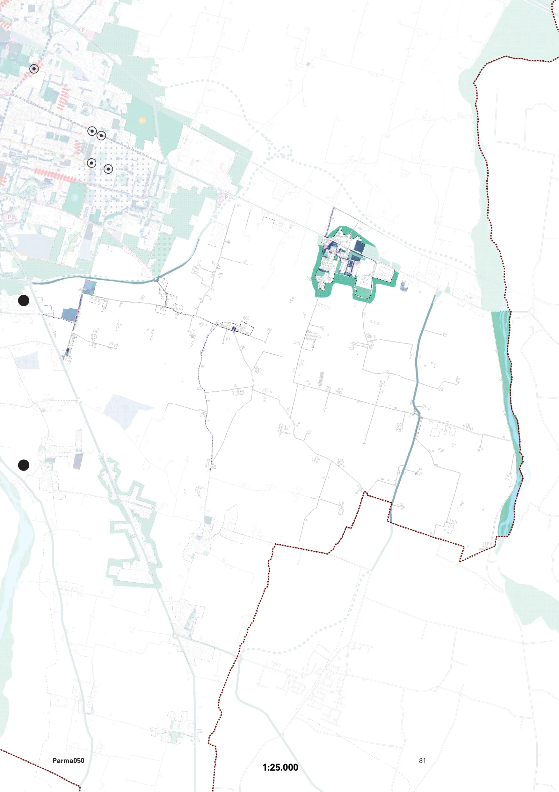
4.3.10
Scala
1:10.000
I quartieri e
la città pubblica
ST.SL
Strategie locali
Quartiere Cittadella
PR050
Area Montebello
Obiettivi:
Bilanciare la concentrazione di funzioni centrali nella parte nord del quartiere;
Garantire l’attraversamento del settore da parte della rete ecologica;
Ridurre l’impatto della mobilità veicolare, prevedendo la messa in rete della mobilità dolce;
Delocalizzare le attività produttive incongrue;
Potenziare il verde di mitigazione dalle infrastrutture stradali;
Potenziare la dotazione di parcheggi;
Garantire l’allaccio delle fognature agli scarichi esistenti non collettati;
Ridurre l’incidenza dei campi elettromagnetici;
Ridefinizione dei bordi del parco della cittadella.
PROGETTI STRATEGICI:
P1: Rigenerazione e implementazione del
“BORDO” del parco della Cittadella e qualifi-
cazione delle aree a verde e percorsi ciclabili e
pedonali.
PROGETTI PILOTA:
P1: Connessioni pedonali e ciclabili preferen-
ziali con il parco Ferrari e lo StadioTardini.
PROGETTUALITÁ SPECIFICHE:
P1: Prevedere collegamenti ciclopedonali diretti
tra l’area commerciale Eurosia e i quartieri
residenziali a nord;
P2: Incrementare la centralità di via Montebello
attraverso il potenziamento delle strutture com-
merciali di vicinato e la riqualificazione degli
spazi aperti pubblici di connessione;
P3: Completare l’interramento degli elettrodotti
che interessano l’ambito;
P4: Messa in sicurezza dei principali incroci di
Via Pastrengo;
P5: Rinnovamento dello stadio comunale
Tardini. La riqualificazione dello stadio dovrà
restituire uno stadio polivalente e uno spazio
polisociale innovativo a servizio della città;
P6: Riqualificazione “Parco Cittadella”.
P7: Nuovo asilo nido Eurosia (PNRR);
P8: Riqualificare l’area per attrezzature “Biz-
zozzero” attraverso un AO che gestisca la tra-
sformazione dell’area, approfondendo il tema
delle volumetrie, degli usi, dei vincoli modali,
al fine anche di favorire le finalità sottese alla
Fondazione Bizzozzero e Podere Stuard.
Criticità:
Presenza di campi elettromagnetici dovuti alla presenza di elettrodotti;
Carenza di spazi urbani centrali;
Zona di generazione dei sovraccarichi idraulici della rete idrografica minore;
Presenza di zone di tutela di pozzi idropotabili;
Presenza di una zona con scarichi non collettati a fognatura;
Strategia urbana generale:
Potenziare i nuclei di concentrazione delle attività commerciali permanenti e temporanee attorno alle piazze di quartie-
re attraverso l’incremento degli esercizi di vicinato e la riqualificazione degli spazi pubblici.
Localizzare le nuove edificazioni in continuità con quelle esistenti, evitando la formazioni di aree intercluse inutilizzabili.
Potenziare il sistema delle piste ciclabili urbane (completamento secondo anello attraverso la direttrice di via Monte-
bello, direttrice via Argini Parma e completamento della direttrice di via Traversetolo).
Collegare al sistema fognario comunale gli edifici attualmente non collettati.
Incentivare l’impiego di fonti di energia alternativa per gli edifici esistenti.
Prestazioni di qualità urbana richieste:
Realizzare corridoi ecologici di collegamento con il sistema dei parchi urbani, attraverso la definizione dei margini
dell’edificato e la progettazione del verde.
Collegare in rete i principali servizi pubblici.
Ai fini prestazionali di qualità urbana, i volumi dell’edificato nelle aree di completamento previste dovranno rispettare e
rapportarsi alla morfologia del quartiere. Inoltre nella progettazione degli spazi aperti sarà buona norma incrementare
la qualità di quest’ultimi attraverso l’attento studio dei materiali, il potenziamento del verde negli spazi di risulta e la
completa fruibilità dei percorsi ciclo-pedonali.
Azioni:
Migliorare la qualità degli spazi aperti pubblici di connessione tra le dotazioni ed i servizi.
Incrementare la funzionalità del verde pubblico e attrezzature.
Aumentare la dotazione di alberature lungo le strade di percorrenza veloce e lenta.
Attrezzature e spazi collettivi (livello comunale e sovracomunale - SC):
Potenziare il sistema delle piste ciclabili urbane mediante il completamento della direttrice di via Montebello e di via
Pastrengo.
Mettere in sicurezza delle intersezioni viarie di via Montebello con via Bizzozero e via Traversetolo.
Potenziare la centralità di via Montebello con interventi tesi a favorire l’integrazione tra i servizi collocati sui lati opposti
della via, in particolare in prossimità del complesso scolastico Don Milani, Don Cavalli, e del verde pubblico attrezzato.
Potenziare e integrare i servizi scolastici del complesso S. Rosa e le attrezzature religiose adiacenti, collocati su via
Brigate Julia e via Brigate Matteotti e via S. Eurosia, con quelli di piazzale Maestri.
Potenziare la pedonalità lungo le strade di quartiere (via Montebello, via Pastrengo, via Cenni, via S. Eurosia, via Casa-
buri, via Brigate Julia; via Brigate Matteotti e lungo la direttrice di via De Gasperi).
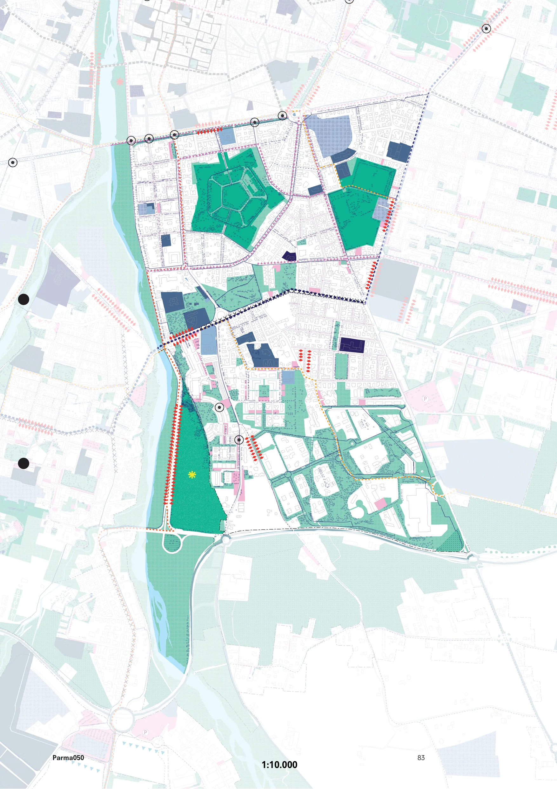
4.3.11
Scala
1:25.000
I quartieri e
la città pubblica
ST.SL
Strategie locali
Quartiere Cittadella
PR050
Territorio Rurale - TR
Obiettivi:
Sviluppare la Green Infrastructure: Bosco Orbitale come parco conservando anche attività agricole, tutela nelle fasce di
bordo degli ambiti fluviali del Parco Territoriale del Parma;
Potenziare la dotazione diffusa di un reticolo ecologico minuto per la protezione della risorsa acqua e per rafforzare la
connettività ambientale e paesistica;
Contenere e qualificare l’insediamento rurale per potenziare la capacità di produzione di servizi ecosistemici e della multi-
funzionalità degli usi agricoli;
Qualificare le aree di tutela agricola in prossimità delle aree di rinaturazione attraverso progetti integrati di paesaggio;
Conservare e potenziare il sistema delle stepping stone legate al verde del sistema insediativo diffuso in area agricola;
Miglioramento della connettività tra citta e campagna: realizzazione di percorsi ciclopedonali e infrastrutture per la mobili-
ta sostenibile;
Sviluppo dell’agricoltura multifunzionale e della filiera corta: incentivare la produzione locale con agriturismi, mercati con-
tadini e spazi di trasformazione alimentare;
Mitigazione degli effetti del cambiamento climatico: implementazione di sistemi di drenaggio sostenibile e riforestazione
di alcune aree agricole;
Promozione di nuovi spazi pubblici e di socialità: realizzazione di parchi agricoli, orti urbani e spazi per l’educazione am-
bientale.
PROGETTI PILOTA:
P1: Connessioni strategiche preferenziali con il
parco “verde e blu” lungo il Torrente Parma.
PROGETTUALITÁ SPECIFICHE:
P1: Prevedere collegamenti tra l’area agricola e
quella naturalistica.
Criticità:
Frammentazione del territorio rurale: le aree agricole sono interrotte da infrastrutture viarie e insediamenti urbani, ridu-
cendo la loro efficienza ecologica e produttiva;
Scarsa accessibilità e connessione con il contesto urbano: le aree agricole non sono adeguatamente collegate alla
città con percorsi ciclopedonali e trasporto pubblico;
Riduzione della biodiversità e perdita di qualità ambientale: l’intensificazione agricola e l’assenza di corridoi ecologici
compromettono l’equilibrio ambientale;
Inquinamento atmosferico e acustico dovuto alle infrastrutture viarie: la vicinanza a strade ad alto traffico genera im-
patti negativi su suolo, acqua e aria.
Strategia urbana generale:
Creazione di un Parco Agricolo Urbano: uno spazio multifunzionale che integri produzione agricola, spazi pubblici e servi-
zi ecosistemici.
Incentivazione di un’agricoltura rigenerativa e sostenibile: sostegno a coltivazioni biologiche, agroforestazione e progetti
di permacultura.
Recupero delle cascine storiche e conversione in hub agroalimentari: spazi per trasformazione, vendita diretta e attività
culturali.
Potenziamento della rete ecologica: connessione delle aree agricole con il torrente Parma e con i parchi urbani tramite
fasce verdi.
Sviluppo della mobilità dolce: realizzazione di percorsi pedonali e ciclabili per collegare il territorio agricolo al centro città.
Riduzione dell’impatto delle infrastrutture viarie: creazione di barriere verdi e fasce di mitigazione ambientale lungo le
strade principali.
Prestazioni di qualità urbana richieste:
Corridoi ecologici e aree filtro tra le zone agricole e le infrastrutture urbane per ridurre l’inquinamento.
Spazi di transizione multifunzionali con funzioni agricole, sociali e ambientali (orti urbani, boschetti periurbani, spazi per
attività didattiche).
Piste ciclabili e percorsi pedonali integrati nel paesaggio agricolo per favorire la mobilità sostenibile.
Aree attrezzate per la sosta e la socialità lungo i percorsi di mobilità dolce.
Sistemi di drenaggio sostenibile (SuDS) per migliorare la gestione idrica e prevenire il rischio idrogeologico.
Recupero di edifici rurali per servizi collettivi come centri culturali e di aggregazione.
Azioni:
Equilibrio tra sviluppo infrastrutturale e tutela del paesaggio agricolo.
Aumento della produzione agricola locale con tecniche sostenibili.
Massima integrazione tra infrastrutture verdi, mobilità dolce e spazi agricoli.
Miglioramento della qualità della vita con un quartiere più verde, accessibile e produttivo.
Potenziamento del trasporto pubblico per migliorare l’accessibilità all’area agricola.
Attrezzature e spazi collettivi:
Mercato agricolo di quartiere per la vendita diretta dei prodotti locali.
Polo didattico per l’agricoltura e la biodiversità per scuole e cittadini.
Orti urbani e giardini condivisi per l’autoproduzione e la socialità.
Aree verdi attrezzate per attività ricreative e sportive.
Spazi per coworking rurale e start-up agricole per favorire l’innovazione in ambito agricolo e ambientale.
Punti di sosta e aree picnic lungo i percorsi ciclopedonali.
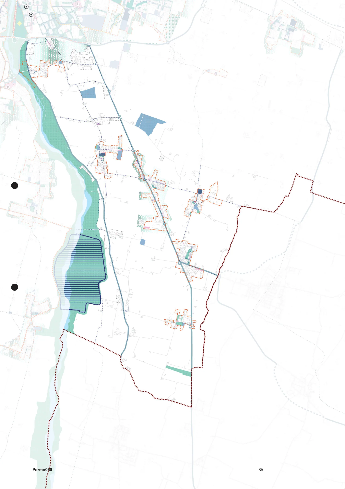
4.3.11a
Scala
1:25.000
I quartieri e
la città pubblica
ST.SL
Strategie locali
PR050
Quartiere Cittadella
Mariano
Obiettivi:
Sviluppare la Green Infrastructure: Bosco Orbitale come parco verde conservando anche attività agricole;
Ridurre l’impatto del traffico di attraversamento sugli insediamenti residenziali esistenti;
Creare filari e zone tampone tra l’edificato e il territorio agrario circostante;
Mantenere le viste esistenti sul paesaggio agrario e sull’Appennino;
Raccogliere e trattare tutti gli scarichi non diretti in pubblica fognatura;
Salvaguardare il sistema delle acque sotterranee;
Sviluppo di spazi pubblici identitari e qualità ambientale;
Caratterizzazione degli elementi pubblici esistenti e ampliarne la portata e le relazioni con il contesto.
PROGETTI STRATEGICI:
P1:Sviluppo del “Bosco Orbitale” a sud della
tangenziale
PROGETTUALITÁ SPECIFICHE:
P1: implementare percorsi “lenti” di attraver-
samento.
Criticità:
Mancanza di spazi urbani riconoscibili;
Bassa compatibilità fra insediamenti esistenti ed esigenze di mobilità territoriale;
Forte impatto dei flussi di traffico sull’edificato.
Strategia urbana generale:
Potenziare attraverso incremento dell’infrastruttura verde spazi pubblici e favorirne la riqualificazione.
Potenziare il sistema delle piste ciclabili extra urbane.
Incentivare l’impiego di fonti di energia alternativa per gli edifici esistenti.
Aumentare la vegetazione di mitigazione nelle strade principali di attraversamento delle frazioni e centri minori.
Prestazioni di qualità urbana richieste:
Il Bosco Orbitale trova particolare effetto in località Mariano. La mitigazione della tangenziale e altre vie ad alta
frequentazione possono avere ricadute molto positive sull’abitato. Lo stesso vale per la parte interclusa tra gli insedia-
menti. La valorizzazazione ambientale in questo caso definisce un carattere identitario dell’intera area.
Interventi di de-impermeabilizzazione dei parcheggi e raccolta delle acque piovane.
Azioni:
Spostare o interrare gli elettrodotti presenti, con particolare riferimento ai tratti che interessano le aree abitate.
Evitare edificazioni lungo l’asse viabilistico principale, mantenendo libere le finestre paesaggistiche esistenti.
Prevedere un adeguato trattamento degli scarichi per tutti gli edifici.
Salvaguardare il sistema delle acque superficiali e sotterranee.
Attrezzature e spazi collettivi
Carattere comunale:
Ridurre l’impatto del traffico di attraversamento sugli insediamenti residenziali esistenti.
Potenziare il sistema delle piste ciclabili locali e sovracomunali.
Interesse sovracomunale:
Spostare o interrare gli elettrodotti presenti.
4.3.11b
Scala
1:25.000
I quartieri e
la città pubblica
ST.SL
Strategie locali
PR050
Quartiere Cittadella
Porporano
Obiettivi:
Sviluppare la Green Infrastructure valorizzando e conservando anche attività agricole;
Ridurre l’impatto del traffico di attraversamento sugli insediamenti residenziali esistenti ;
Creare filari di alberature e zone tampone tra l’edificato e il territorio agrario circostante;
Mantenere le viste esistenti sul paesaggio agrario e sull’Appennino;
Raccogliere e trattare tutti gli scarichi non diretti in pubblica fognatura;
Salvaguardare il sistema delle acque sotterranee;
Sviluppo di spazi pubblici identitari e qualità ambientale;
Caratterizzazione degli elementi pubblici esistenti e ampliarne la portata e le relazioni con il contesto;
Aumentare le relazioni tra Porporano e il torrente Parma e a scendere con la cassa di espansione (futuro progetto stra-
tegico “Oasi della Biodiversità). Lo stesso vale per gli altri insediamenti che insistono nelle vicinanze.
PROGETTUALITÁ SPECIFICHE:
P1: implementare percorsi “lenti” di attraver-
samento;
P2: Piazza rurale multifunzionale come centro
della vita sociale di Porporano.
Criticità:
Mancanza di spazi urbani riconoscibili;
Bassa compatibilità fra insediamenti esistenti ed esigenze di mobilità territoriale;
Forte impatto dei flussi di traffico sull’edificato;
Presenza di zone vulnerabili alle esondazioni del torrente Parma e problemi di drenaggio delle acque meteoriche;
Mancanza di attrezzature collettive e luoghi di aggregazione per la comunità locale.
Strategia urbana generale:
Potenziare attraverso incremento dell’infrastruttura verde spazi pubblici e favorirne la riqualificazione
Potenziare il sistema delle piste ciclabili extra urbane
Incentivare l’impiego di fonti di energia alternativa per gli edifici esistenti.
Aumentare la vegetazione di mitigazione nelle strade principali di attraversamento delle frazioni e centri minori
Istituzione di una “Fascia di Transizione Rurale” tra il nucleo abitato e le aree agricole per integrare urbanità e campa-
gna senza comprometterne la vocazione produttiva.
Creazione di un “Parco Rurale di Porporano” con funzioni di protezione ambientale, ricreazione e agricoltura didattica.
Incentivi per l’agricoltura biologica e rigenerativa: sostegno a pratiche agricole a basso impatto ambientale e filiera
corta.
Riqualificazione delle cascine storiche per attività agrituristiche, sociali e culturali.
Potenziamento delle infrastrutture di drenaggio e gestione delle acque meteoriche per prevenire allagamenti e miglio-
rare la qualità del suolo.
Promozione di un modello di “Borgo Sostenibile” con efficienza energetica e mobilità dolce.
Prestazioni di qualità urbana richieste:
Costituzione di corridoi ecologici e fasce di mitigazione lungo le principali infrastrutture per ridurre inquinamento e
frammentazione del territorio.. Lo stesso vale per la parte interclusa tra gli insediamenti. La valorizzazazione ambientale
in questo caso definisce un carattere identitario dell’intera area.
Interventi di de-impermeabilizzazione e raccolta delle acque piovane.
Rete ciclopedonale e percorsi naturalistici che colleghino Porporano con il centro di Parma e le aree agricole circo-
stanti.
Zone di transizione tra abitato e campagna con orti urbani, giardini condivisi e spazi per l’agricoltura sociale.
Sistemi di drenaggio sostenibile (SuDS) per migliorare la gestione delle acque e prevenire il rischio idrogeologico.
Riqualificazione delle strade locali con marciapiedi, illuminazione efficiente e alberature per migliorare la sicurezza e la
qualità urbana.
Azioni:
Spostare o interrare gli elettrodotti presenti, con particolare riferimento ai tratti che interessano le aree abitate.
Evitare edificazioni lungo l’asse viabilistico principale, mantenendo libere le finestre paesaggistiche esistenti.
Prevedere un adeguato trattamento degli scarichi per tutti gli edifici.
Salvaguardare il sistema delle acque superficiali e sotterranee.
Attrezzature e spazi collettivi:
Piazza rurale multifunzionale come centro della vita sociale di Porporano, con spazi per eventi, mercato contadino e
attività culturali.
Parco agricolo e didattico per la promozione della biodiversità, la produzione locale e l’educazione ambientale.
Polo culturale e di aggregazione per attività sociali, ricreative e laboratori di economia circolare.
Spazi sportivi all’aperto e percorsi per il benessere integrati nel paesaggio agricolo.
Piste ciclabili e sentieri pedonali per migliorare l’accessibilità e la connessione con la città.
Hub di mobilità condivisa con parcheggi di scambio, noleggio biciclette e colonnine di ricarica elettrica.
4.3.11c
Scala
1:25.000
I quartieri e
la città pubblica
ST.SL
Strategie locali
PR050
Quartiere Cittadella
Botteghino
Obiettivi:
Tutela e valorizzazione dell’identità agricola e rurale di Botteghino;
Sviluppo della mobilità sostenibile e miglioramento della connessione con Parma;
Salvaguardia delle aree agricole con la promozione dell’agricoltura multifunzionale e della filiera corta;
Potenziamento della rete ecologica e mitigazione del rischio idrogeologico;
Creazione di spazi pubblici e servizi di prossimità per la comunità;
Riduzione dell’impatto ambientale delle infrastrutture e incremento delle fasce verdi di mitigazione;
Creare filari e zone tampone tra l’edificato e il territorio agrario circostante;
Mantenere le viste esistenti sul paesaggio agrario e sull’Appennino;
Raccogliere e trattare tutti gli scarichi non diretti in pubblica fognatura;
Salvaguardare il sistema delle acque sotterranee.
PROGETTI STRATEGICI:
P1:Sviluppo dell’infrastruttura verde.
PROGETTUALITÁ SPECIFICHE:
P1: implementare percorsi “lenti” di attraver-
samento;
P2: dotazione culturale e di aggregazione per
attività sociali.
Criticità:
Mancanza di spazi urbani riconoscibili;
Bassa compatibilità fra insediamenti esistenti ed esigenze di mobilità territoriale;
Impatto negativo delle infrastrutture viarie: inquinamento atmosferico e acustico dovuto alla viabilità;
Presenza di aree a rischio allagamenti e problematiche legate al drenaggio delle acque meteoriche;
Trasporto pubblico limitato e carenza di percorsi ciclopedonali per collegare Botteghino a Parma.
Strategia urbana generale:
Creazione di una rete di mobilità dolce per connettere Botteghino con il centro di Parma e con le frazioni limitrofe.
Promozione dell’agricoltura sostenibile e della biodiversità attraverso incentivi per le coltivazioni biologiche e la tutela
degli ecosistemi agricoli.
Riqualificazione delle cascine storiche con funzioni di agriturismo, spazi culturali e attività di educazione ambientale.
Potenziamento delle infrastrutture di drenaggio e gestione delle acque meteoriche per ridurre il rischio idrogeologico.
Sviluppo di un modello di “Borgo Sostenibile” con edifici a basso impatto ambientale e sistemi di energia rinnovabile.
Prestazioni di qualità urbana richieste:
Corridoi ecologici e fasce di mitigazione lungo le principali infrastrutture per ridurre l’inquinamento e migliorare la qua-
lità ambientale.
Rete ciclopedonale e percorsi naturalistici che colleghino Botteghino a Parma e alle aree agricole circostanti.
Zone di transizione tra abitato e campagna con orti urbani, giardini condivisi e spazi per l’agricoltura sociale.
Sistemi di drenaggio sostenibile (SuDS) per migliorare la gestione delle acque meteoriche e prevenire allagamenti.
Riqualificazione delle strade locali con marciapiedi, illuminazione efficiente e alberature per migliorare la sicurezza e la
qualità urbana.
Sviluppo del Bosco Orbitale in località Botteghino come parco territoriale della Val d’Enza. Tale infrastruttura è parte
integrante della “Green Infrastructure”.
Valorizzazione delle ciclovie di attraversamenteo e deimpermeabilizzazione della aree a parcheggio.
Azioni:
Spostare o interrare gli elettrodotti presenti, con particolare riferimento ai tratti che interessano le aree abitate.
Evitare edificazioni lungo l’asse viabilistico principale, mantenendo libere le finestre paesaggistiche esistenti.
Prevedere un adeguato trattamento degli scarichi per tutti gli edifici.
Salvaguardare il sistema delle acque superficiali e sotterranee.
Attrezzature e spazi collettivi:
Piazza “rurbana” multifunzionale come centro della vita sociale di Botteghino, con spazi per eventi, mercato contadino
e attività culturali.
Parco agricolo e didattico per la promozione della biodiversità, la produzione locale e l’educazione ambientale.
Edificio culturale e di aggregazione per attività sociali, ricreative e laboratori di economia circolare.
Spazi sportivi all’aperto e percorsi per il benessere integrati nel paesaggio agricolo.
Piste ciclabili e sentieri pedonali per migliorare l’accessibilità e la connessione con Parma.
Hub di mobilità condivisa con parcheggi di scambio, noleggio biciclette e colonnine di ricarica elettrica.
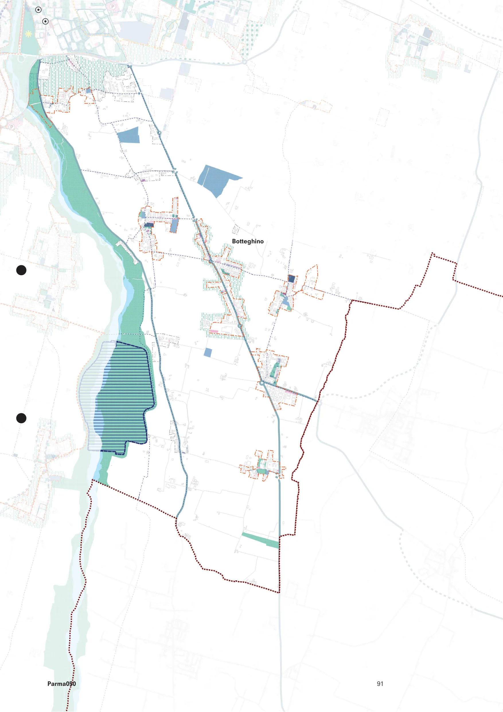
4.3.11d
Scala
1:25.000
I quartieri e
la città pubblica
ST.SL
Strategie locali
Quartiere Cittadella
PR050
Pilastrello
Obiettivi:
Selezionare le attività compatibili e ridurre la dispersione insediativa;
Ridurre l’impatto del traffico di attraversamento sugli insediamenti residenziali esistenti;
Creare zone tampone tra l’edificato e il territorio agrario circostante;
Mantenere le viste esistenti sul paesaggio agrario e sull’Appennino;
Raccogliere e trattare tutti gli scarichi non diretti in pubblica fognatura;
Ridurre la necessità di mobilità interna all’ambito e prevedere interventi a favore della mobilità sostenibile;
Salvaguardare il sistema delle acque sotterranee.
PROGETTI STRATEGICI:
P1: Sviluppo Green Infrastructure.
PROGETTUALITÁ SPECIFICHE:
P1: Piantumazioni lungo vie di collegamento
principali e secondarie con contestuali inter-
venti di messa in sicurezza dei fossati e del
reticolo idrografico.
Criticità:
Mancanza di spazi urbani riconoscibili;
Bassa compatibilità fra insediamenti esistenti ed esigenze di mobilità territoriale
Forte impatto dei flussi di traffico sull’edificato;
Forte pressione degli insediamenti produttivi sul territorio agricolo circostante;
Vulnerabilità elevata degli acquiferi all’inquinamento;
Condizioni ambientali critiche nelle zone prospicienti la zona produttiva di Pilastrello e lungo la SP Val D’Enza a causa
del traffico veicolare.
Strategia urbana generale:
Potenziare attraverso incremento dell’infrastruttura verde spazi pubblici e favorirne la riqualificazione.
Potenziare il sistema delle piste ciclabili extra urbane.
Incentivare l’impiego di fonti di energia alternativa per gli edifici esistenti.
Fasce di mitigazione ambientale lungo le infrastrutture viarie con barriere verdi per ridurre inquinamento acustico e
atmosferico.
Rete ciclopedonale integrata con connessioni verso Parma e le frazioni limitrofe.
Zone di transizione tra abitato e campagna con orti urbani, giardini condivisi e aree per l’agricoltura sociale.
Sistemi di drenaggio sostenibile (SuDS) per migliorare la gestione delle acque meteoriche.
Riqualificazione delle strade locali con spazi pedonali adeguati.
Illuminazione efficiente e alberature per migliorare la sicurezza e la qualità urbana.
Prestazioni di qualità urbana richieste:
Istituzione di un bordo urbano e agricolo verde per preservare la vocazione agricola del territorio e garantire la biodi-
versità.
Creazione di un Parco Rurale Multifunzionale con aree agricole produttive, percorsi naturalistici e spazi per la socialità.
Riqualificazione delle cascine storiche per attività di agriturismo, formazione agricola e laboratori culturali.
Implementazione di sistemi di agricoltura sostenibile con incentivi per la filiera corta e l’agricoltura biologica.
Potenziamento delle infrastrutture di drenaggio e gestione delle acque meteoriche per ridurre il rischio idrogeologico.
Sviluppo di un modello di “Borgo Sostenibile” con edifici a basso impatto ambientale e tecnologie per l’efficienza
energetica.
Azioni:
Spostare o interrare gli elettrodotti presenti, con particolare riferimento ai tratti che interessano le zone abitate.
Evitare edificazioni lungo l’asse viabilistico principale, mantenendo libere le finestre paesaggistiche esistenti.
Prevedere un adeguato trattamento degli scarichi per tutti gli edifici.
Localizzare le nuove edificazioni in continuità con quelle esistenti, evitando la formazioni di aree intercluse inutilizzabili.
Salvaguardare il sistema delle acque superficiali e sotterranee.
Attrezzature e spazi collettivi di carattere comunale:
Ridurre l’impatto del traffico di attraversamento sugli insediamenti residenziali esistenti.
Potenziare il sistema delle piste ciclabili locali in località Pilastrello (direttrice di strada Montechiarugolo e verso l’abita-
to di Malandriano) e in località Marano.
Spazi sportivi all’aperto e percorsi benessere integrati nel paesaggio agricolo.
4.3.11e
Scala
1:25.000
I quartieri e
la città pubblica
ST.SL
Strategie locali
PR050
Quartiere Cittadella
Marano
Obiettivi:
Mantenere le viste esistenti sul paesaggio agrario e sull’Appennino;
Raccogliere e trattare tutti gli scarichi non diretti in pubblica fognatura;
Ridurre la necessità di mobilità interna all’ambito e prevedere interventi a favore della mobilità sostenibile;
Salvaguardare il sistema delle acque sotterranee;
Incrementare la qualità urbana con nuovi spazi pubblici e servizi collettivi per migliorare la qualità della vita;
Ridurre l’impatto ambientale e aumentare la resilienza climatica attraverso strategie di mitigazione e adattamento;
Migliorare l’accessibilità e la mobilità dolce con infrastrutture pedonali e ciclabili efficienti;
Rafforzare la rete ecologica attraverso corridoi verdi e interventi di riforestazione urbana.
Criticità:
Vulnerabilità elevata degli acquiferi all’inquinamento;
Forte pressione degli insediamenti produttivi sul territorio agricolo circostante;
Presenza di una linea elettrica AT che interessa l’abitato di Marano;
Presenza di due attività produttive a potenziale rischio di incidente collocate in prossimità dell’ambito;
Limitata accessibilità e connessione con il centro di Parma: scarsa copertura del trasporto pubblico e assenza di per-
corsi ciclopedonali adeguati;
Frammentazione ecologica e perdita di biodiversità: assenza di corridoi ecologici e progressiva riduzione delle aree
naturali;
Rischio idrogeologico: presenza di zone vulnerabili agli allagamenti e insufficienza dei sistemi di drenaggio.
Carenza di spazi pubblici attrezzati per la comunità: limitata disponibilità di aree verdi, spazi aggregativi e servizi di
prossimità;
Impatto ambientale delle infrastrutture viarie: traffico veicolare e inquinamento acustico lungo le principali arterie stra-
dali.
Strategia urbana generale:
Potenziare attraverso incremento dell’infrastruttura verde spazi pubblici e favorirne la riqualificazione.
Incentivare l’impiego di fonti di energia alternativa per gli edifici esistenti.
Aumentare la vegetazione di mitigazione nelle strade principali di attraversamento delle frazioni e centri minori.
Creazione di un Parco Agro-Naturale con aree agricole multifunzionali, zone umide e percorsi naturalistici.
Tutela delle aree agricole e promozione dell’agricoltura biologica e della filiera corta per sostenere la produzione locale.
Riqualificazione delle cascine storiche con funzioni anche cultrali, didattica ambientale e ospitalità rurale.
Potenziamento della rete di mobilità sostenibile con piste ciclabili e percorsi pedonali per collegare Marano a Parma.
Adozione di soluzioni basate sulla natura (Nature-based Solutions - Nbs) per migliorare la gestione delle acque e la biodi-
versità.
Incentivare l’uso di energie rinnovabili per la riqualificazione energetica degli edifici rurali.
Prestazioni di qualità urbana richieste:
La strategia riguarda principalmente la qualificazione e la caratterizzazione degli spazi pubblici.
Anche i parcheggi pubblici dovranno essere caratterizzati da permeabilità unitamente alla raccolta delle acque piovane
in appositi “water pound”.
Possibili piantumazioni lungo le strade di attraversamento principali e secondarie come mitigazione all’impatto veicola-
re e lungo le ciclovie di possibile attraversamento.
Reti verdi di connessione tra campagna e aree residenziali per migliorare la continuità ecologica.
Potenziamento delle fasce di mitigazione ambientale lungo le infrastrutture stradali per ridurre l’inquinamento acustico
e atmosferico.
Introduzione di sistemi di drenaggio sostenibile (SuDS) per gestire le acque meteoriche e ridurre il rischio idraulico.
Rafforzamento delle infrastrutture ciclopedonali per favorire la mobilità attiva e l’integrazione con i servizi di trasporto
pubblico.
Riqualificazione dello spazio pubblico con arredo urbano sostenibile, illuminazione efficiente e verde diffuso
Azioni:
Spostare o interrare gli elettrodotti presenti, con particolare riferimento ai tratti che interessano zone abitate.
Evitare edificazioni lungo l’asse viabilistico principale, mantenendo libere le finestre paesaggistiche esistenti.
Prevedere un adeguato trattamento degli scarichi per tutti gli edifici.
Salvaguardare il sistema delle acque superficiali e sotterranee.
Attrezzature e spazi collettivi:
Potenziare il sistema delle piste ciclabili locali
Spostare o interrare gli elettrodotti presenti, con particolare riferimento ai tratti che interessano zone abitate (località
Marano).
Piazza rurale multifunzionale per eventi comunitari, mercati locali e attività culturali.
Parco agricolo e didattico con orti urbani, giardini condivisi e spazi per la biodiversità.
Luogo polifunzionale per la comunità con spazi per attività culturali, associative e laboratori di economia circolare.
Percorsi ciclopedonali e sentieri naturalistici per favorire la mobilità dolce e il benessere all’aria aperta.
Spazi sportivi e aree per il tempo libero attrezzate con strutture leggere integrate nel paesaggio rurale.
Hub di mobilità sostenibile con parcheggi di interscambio, colonnine di ricarica per veicoli elettrici e servizi di bike-
sharing.
4.3.12
Scala
1:10.000
I quartieri e
la città pubblica
ST.SL
Strategie locali
Quartiere Montanara
PR050
Obiettivi:
Incrementare l’accessibilità dell’intero quartiere;
Aumentare e migliorare i punti di relazione con gli ambiti fluviali;
Attuare e completare le previsioni vigenti, riducendo al minimo gli impatti ambientali indotti;
Ridurre il traffico interno all’ambito, prevedendo interventi a favore della mobilità sostenibile;
Eliminare le attività produttive incongrue;
Integrare le strutture commerciali esistenti con nuovi esercizi di vicinato;
Riqualificare l’assetto delle strade principali di quartiere;
Potenziare il verde di mitigazione rispetto alle maggiori infrastrutture stradali;
Potenziare la dotazione di parcheggi;
Promuovere interventi di riduzione del rischio idraulico.
PROGETTI STRATEGICI:
P1:Nuova connessione tra sponda ovest del
quartiere con l’adiacente Molinetto con delo-
calizzazione delle attività produttive incongrue
presenti nell’area;
P2: Progetto del “cuneo” alla confluenza dei
torrenti Parma e Baganza per attività sportive e
legate al tempo libero.
PROGETTI PILOTA:
P1: Qualificazione del parco sud e incremento
di alberature.
PROGETTUALITÁ SPECIFICHE:
P1: Incrementare la dotazione commerciale con
esercizi di vicinato e la qualità degli spazi aperti
in prossimità dell’area pubblica utilizzata per il
mercato settimanale;
P2: Riqualificare l’asse viario di via Langhirano
nel tratto urbano del quartiere Montanara,
attraverso il risezionamento stradale e l’inseri-
mento di esercizi commerciali di vicinato lungo
i fronti edificati;
P3: Potenziare la centralità di via Montanara,
attraverso il potenziamento delle strutture com-
merciali e la riqualificazione degli spazi aperti
pubblici di connessione;
P4: Ridurre l’inquinamento elettromagnetico
interrando o spostando gli elettrodotti che
interessano le aree edificate.
Criticità:
Aree di frangia da recuperare sia funzionalmente che spazialmente;
Vicinanza della tangenziale sud alle residenze;
Impatti ambientali da traffico veicolare lungo le principali direttrici viabilistiche;
Presenza di pozzi idropotabili;
Presenza di elettrodotti nella parte sud dell’ambito;
Area incongrua e di pericolosità ambientale evidenziata come area strategica di trasformazione;
Presenza di attività incongrue lungo il torrente Baganza.
Strategia urbana generale:
Mantenimento dei tessuti unitari attraverso interventi di qualificazione.
Interventi diffusi di rigenerazione.
Aumentare la qualità dei parchi e sistemi verdi presenti.
Aumentare l’accessibilità e attraversabilità del quartiere e sistemi verdi di mitigazione lungo la tangenziale, da collegare
al “bosco orbitale”.
Prestazioni di qualità urbana richieste:
Estendere i punti di contatto del quartiere con gli ambiti fluviali, realizzando percorsi e corridoi verdi di accesso ai par-
chi urbani di progetto.
Migliorare la qualità urbana degli spazi aperti.
Ai fini prestazionali di qualità urbana, i volumi dell’edificato nelle aree di completamento previste dovranno rispettare e
rapportarsi alla morfologia del quartiere. Inoltre nella progettazione degli spazi aperti sarà buona norma incrementare
la qualità di quest’ultimi attraverso l’attento studio dei materiali, il potenziamento del verde negli spazi di risulta e la
completa fruibilità dei percorsi ciclo-pedonali.
Azioni:
Collegamento sul Torrente Baganza dei quartieri Montanare e Molinetto.
Collegare in rete i principali servizi pubblici.
Localizzare le nuove edificazioni in continuità con quelle esistenti, evitando la formazione di aree intercluse inutilizzate.
Salvaguardare le zone di rispetto dei pozzi idropotabili.
Mitigare gli impatti ambientali derivanti dalla presenza della tangenziale e di altre infrastrutture viabilistiche ad elevato
traffico.
Potenziare il sistema dei percorsi ciclabili.
Favorire l’interramento degli elettrodotti esistenti all’interno delle aree residenziali.
Delocalizzazione delle attività incongrue lungo il torrente Baganza.
Attrezzature e spazi collettivi (livello comunale):
Realizzazione di percorsi ciclabili di connessione territoriale lungo le direttrici di via Po, via Langhirano e via Montanara
in direzione Langhirano e Felino.
Messa in rete dei servizi a scala locale attraverso il potenziamento della pedonalità e la messa in sicurezza delle strade
interne al quartiere in particolare via Montanara oltre a strada Navetta, via Manzoni, via Ognibene, via Carmignani, via
Bramante, via Zanguidi e via Aleotti.
Necessità di inserimento di nuovi servizi a scala locale nel quartiere residenziale situato a sud-est dell’ambito.
Potenziare la centralità di via Montanara attraverso la riqualificazione degli spazi aperti pubblici di connessione.
Miglioramento dell’integrazione spazio-funzionale dei servizi collocati sui fronti opposti di via Po.
Completamento di aree a verde pubblico attrezzato.
Spazi e attrezzature pubbliche di interesse sovracomunale:
Interramento o spostamento degli elettrodotti che interessano le aree edificate.
Recuperare le aree destinate a Parco urbano collocate in corrispondenza dei torrenti Parma e Baganza.
Favorire i collegamenti ciclabili con il Campus.
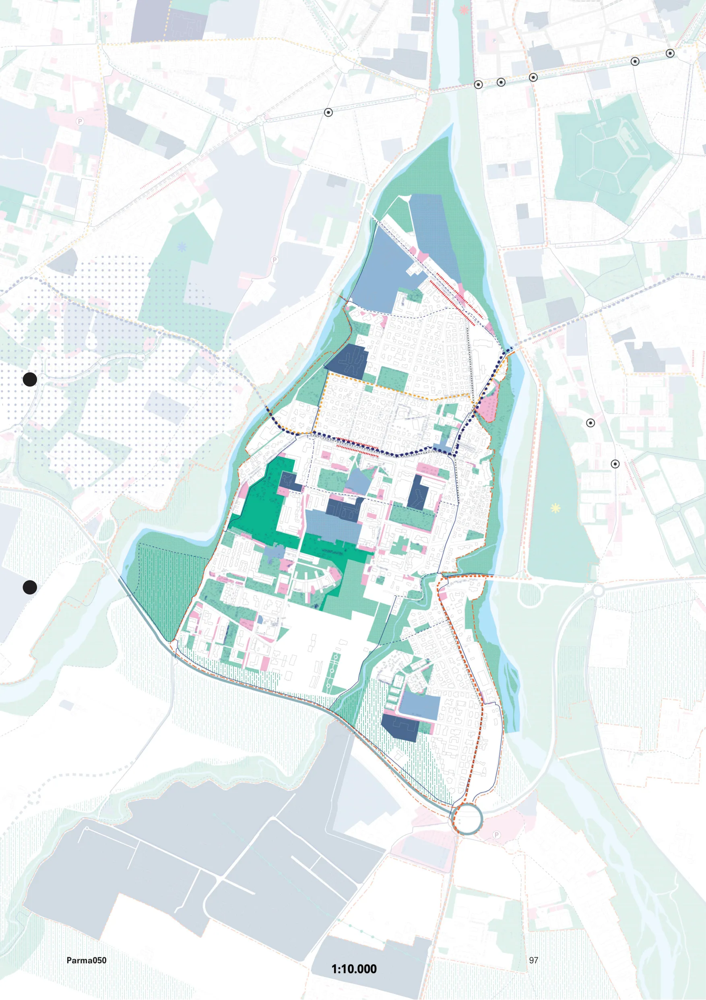
4.3.13
Scala
1:10.000
I quartieri e
la città pubblica
ST.SL
Strategie locali
Quartiere Vigatto
PR050
Campus
PROGETTI STRATEGICI:
P1: Progetto di uno spazio pubblico con servizi
caratterizzante l’area avente funzione di “Porta
Sud” lungo la Massese;
P2: Progetto di espansione del Campus (Area
sud);
P3: Area strategica per collocazione Parco
attrezzato per servizi alla collettività nelle vici-
nanze del “parcheggio scambiatore sud”.
Obiettivi:
Incrementare l’integrazione spaziale e funzionale del polo funzionale con il territorio attorno, con attenzione allo svilup-
po di attività attrattive e di servizio;
Migliorare la qualità spaziale e funzionale degli spazi aperti di pertinenza e degli spazi pubblici di connessione con
l’inserimento di fasce verdi;
Integrare il complesso universitario con residenze e servizi per gli studenti e gli addetti;
Creare uno spazio di centralità per il Campus Universitario, attraverso il consolidamento e il prolungamento dell’asse
viabilistico principale nord-sud;
Incrementare l’offerta del trasporto pubblico dedicato;
Dotare l’area di percorsi ciclopedonali di connessione con il centro della città;
Rilocalizzazione del parcheggio scambiatore sud e realizzazione di un terminal bus;
Miglioramento delle vie di accesso all’area scientifica e Polo Scientifico-Tecnologico;
Potenziare i percorsi ciclopedonali;
Incentivare l’uso dei mezzi pubblici prevedendo una mobilità sostenibile;
Garantire la massima sicurezza per l’acquifero sotterranee e la tutela dei pozzi idropotabili;
Prevedere interventi di risparmio energetico, idrico, ecc.
Criticità
criticità funzionali:
Ambito isolato rispetto alle principali dinamiche funzionali della città.
criticità infrastrutturali:
Carenza di collegamenti pedonali e ciclabili;
Carenza di collegamenti con il trasporto pubblico.
criticità ambientali:
Risorse idriche: problematiche di natura idraulica correlate alla possibilità di drenaggio delle acque.
Strategia urbana generale:
Sostenere la qualificazione dell’area lungo la strada SSP 665 (Massese) e dotare il campus di una centralità collettiva
tale da implementare le funzionalità complessive dell’area. Potenziare nella parte sud il collegamento ciclo-pedonale
verso Vigatto. Gli ambiti strategici individuati nell’intorno del Campus rispondono ad esigenze funzionali alla definizio-
ne della porta sud e all’aggregazione tra programmi e attività di diversa natura.
Prestazioni di qualità urbana richieste
Migliorare la qualità urbana degli spazi aperti e dotare il campus di un landmark capace di veicolare l’immagine del
campus e renderlo riconoscibile.
Azioni:
Per interventi sull’edificato esistente incentrare azioni di risparmio energetico e di produzione di energia da fonti rinno-
vabili.
Prevedere il sistematico collettamento al sistema fognario e depurativo comunale di eventuali nuovi scarichi.
Attrezzature e spazi collettivi (livello comunale e sovracomunale - SC):
Le aree sportive dovranno essere collegate al sistema di piste cilabili urbane ed extraurbane tali da poter essere rag-
giunte facilmente da chi vive anche in città. (la ciclovia di attraversamento Colorno-Parma -Sala Baganza).
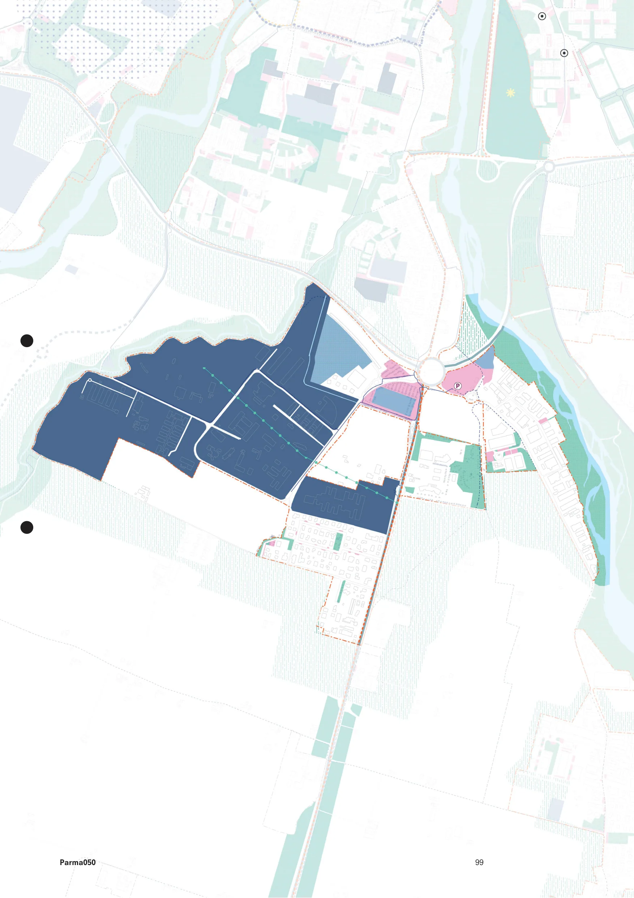
4.3.14
Scala
1:30.000
I quartieri e
la città pubblica
ST.SL
Strategie locali
Quartiere Vigatto
PR050
Territorio Rurale - TR
Obiettivi:
Sviluppare il Parco Agricolo nella porzione di territorio tra le frazioni a sud del Campus (Vigatto, Alberi, Gaione, Cari-
gnano);
Attuare interventi di completamento urbano al fine di migliorare le relazioni tra il bordo (TU) e (TR) con conseguente
desigillazione interna al TU e provvedendo a cessioni e definizione del Bosco Orbitale;
Creare zone tampone tra l’edificato e il territorio agrario circostante;
Raccogliere e trattare tutti gli scarichi non diretti in pubblica fognatura;
Ridurre l’impatto del traffico di attraversamento;
Potenziare le dotazioni di verde pubblico;
Limitare l’inquinamento acustico;
Prevedere un miglioramento della mobilità sostenibile, con il potenziamento della viabilità ciclabile;
Delocalizzare le attività produttive incongrue;
Incentivare il risparmio energetico;
Salvaguardia del sistema delle acque superficiali e sotterranee;
Miglioramento delle condizioni paesaggistiche nell’intorno di Villa Soragna in corrispondenza del Bosco Orbitale.
PROGETTI STRATEGICI:
P1: Piantumazione di alberature lungo strade
secondarie di attraversamento territoriale;
P2: Implementazione delle “Oasi della Bio-
diversità” in corrispondenza delle casse di
espansione già localizzate.
PROGETTUALITÁ SPECIFICHE:
P1: Rafforzamento e contestuale valorizzazione
del verde lungo i torrenti Parma e Baganza.
Criticità:
Scarsa dotazione di servizi pubblici di base;
Scarsa dotazione di spazi aperti attrezzati di socialità;
Strade principali di attraversamento con sezioni e dotazioni laterali insufficienti;
Condizioni di vulnerabilità a sensibilità elevata degli acquiferi;
Condizioni di criticità acustica nelle aree prospicienti aree produttive presenti nelle frazioni.
Strategia urbana generale:
Potenziare attraverso incremento dell’infrastruttura verde la biodiversità agricola.
Potenziare il sistema delle piste ciclabili extra urbane di attraversamento territoriale.
Aumentare la vegetazione di mitigazione nelle strade principali di attraversamento.
Sviluppo di un sistema di viali come valorizzazione del reticolo minore anche di attraversamento indrico.
Prestazioni di qualità urbana richieste:
Ai fini prestazionali di qualità urbana, i volumi dell’edificato nelle aree di completamento previste lungo il TU e in cor-
rispondenza del “Bosco Orbitale”dovranno rispettare e rapportarsi alla morfologia del tessuto esistente. Inoltre nella
progettazione degli spazi aperti sarà buona norma incrementare la qualità di quest’ultimi attraverso l’attento studio
dei materiali, il potenziamento del verde negli spazi di risulta e la completa fruibilità dei percorsi ciclo-pedonali. Ogni
cintura verde (Bosco Orbitale) delle frazioni dovrà identificare le qualità e peculiarità di ognuna di esse; ossia definire
dei sistemi verdi con alberature specifiche e diverse in ogni frazione.
Azioni:
Localizzare i nuovi edifici all’interno dell’abitato esistente, evitando la formazioni di aree intercluse inutilizzabili.
Riqualificare gli spazi aperti posti a contorno degli edifici di valore architettonico.
Salvaguardare il sistema delle acque superficiali e sotterranee.
Realizzare una nuova strada a ovest in variante all’abitato esistente.
Riqualificare gli spazi aperti centrali di uso pubblico.
Attrezzature e spazi collettivi di carattere comunale:
Realizzare un nuovo parco pubblico attrezzato per realizzare un corridoio verde con i torrenti Baganza e Parma come
parte della “Green Infrastructure” (GI).
Spazi e attrezzature pubbliche di interesse sovracomunale:
Favorire il collegamento con il parco fluviale del torrente Parma.
4.3.14a
Scala
1:30.000
I quartieri e
la città pubblica
ST.SL
Strategie locali
Quartiere Vigatto
PR050
Alberi
Obiettivi:
Integrare funzionalmente il centro urbano con l’area del Campus;
Favorire il recupero delle aree degradate e funzionalmente incongrue;
Creare zone tampone tra l’edificato e il territorio agrario circostante;
Raccogliere e trattare tutti gli scarichi non diretti in pubblica fognatura;
Ridurre il traffico automobilistico interno all’abitato;
Potenziare il verde di mitigazione verso le strade a forte traffico;
Limitare l’inquinamento acustico;
Delocalizzare le attività produttive incongrue;
Ridurre il rumore ambientale correlato all’attività produttiva nella porzione settentrionale del territorio in cui si colloca;
Salvaguardia del sistema delle acque superficiali e sotterranee.
PROGETTI STRATEGICI:
P1: Bosco Orbitale e continuità eco-sistemica
tra il Torrente Parma e la parte nord della
Frazione.
PROGETTUALITÁ SPECIFICHE:
P1: Segmento della strada Massese tra il Cam-
pus e Corcagnano con inserimento ciclovia e
dotazione verde;
P2: ciclovia di collegamento dalla Massese ve
rso il Torrente Parma.
Criticità:
Scarsa dotazione di servizi pubblici di base;
Presenza di attività produttive incongrue;
Mix di funzioni tra loro non compatibili;
Forte pressione degli insediamenti produttivi sul territorio agricolo circostante;
Condizioni di vulnerabilità a sensibilità elevata degli acquiferi all’inquinamento;
Condizioni di criticità acustica nelle zone prospicienti la zona produttiva.
Strategia urbana generale:
Potenziare attraverso incremento dell’infrastruttura verde, spazi pubblici e favorirne la riqualificazione.
Potenziare il sistema delle piste ciclabili extra urbane
Incentivare l’impiego di fonti di energia alternativa per gli edifici esistenti.
Aumentare la vegetazione di mitigazione nelle strade principali di attraversamento.
Prestazioni di qualità urbana richieste:
Ai fini prestazionali di qualità urbana, i volumi dell’edificato nelle aree di completamento previste dovranno rispettare
e rapportarsi alla morfologia del tessuto esistente. Inoltre nella progettazione degli spazi aperti sarà buona norma
incrementare la qualità di quest’ultimi attraverso l’attento studio dei materiali, il potenziamento del verde negli spazi di
risulta e la completa fruibilità dei percorsi ciclo-pedonali.
Azioni:
Localizzare i nuovi edifici all’interno del centro abitato esistente, evitando la formazioni di aree intercluse inutilizzabili.
Mitigare gli impatti da rumore dell’area produttiva presente nella porzione settentrionale del settore.
Mitigare gli impatti da rumore dell’area produttiva nei confronti delle zone residenziali.
Salvaguardare il sistema delle acque superficiali e sotterranee.
Riqualificare gli spazi aperti centrali di uso pubblico.
Mettere in sicurezza viabilità congiuntamente all’implementazione delle ciclovie.
Attrezzature e spazi collettivi di carattere comunale:
Aumentare le qualità identitarie degli spazi pubblici esistenti e di progetto.
Spazi e attrezzature pubbliche di interesse sovracomunale:
Favorire i collegamenti verso il parco fluviale del Torrente Parma.
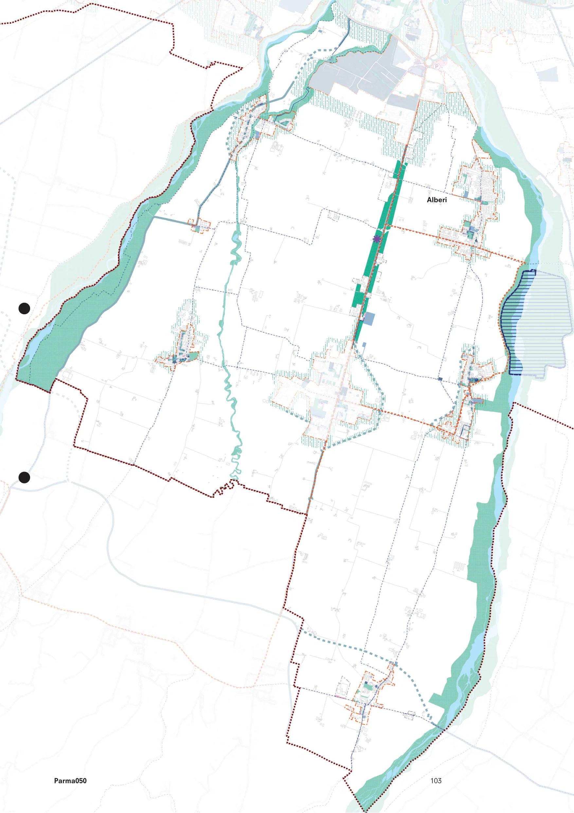
4.3.14b
Scala
1:30.000
I quartieri e
la città pubblica
ST.SL
Strategie locali
Quartiere Vigatto
PR050
Gaione
Obiettivi:
Integrare funzionalmente il centro urbano con l’area del Campus;
Incrementare le relazioni con il parco fluviale del Torrente Baganza;
Ridurre l’impatto del traffico di attraversamento sugli insediamenti residenziali esistenti;
Ridurre l’impatto del traffico veicolare e prevedere interventi di mobilità sostenibile;
Delocalizzare le attività produttive incongrue;
Garantire e riqualificare l’attraversamento dell’ambito da parte della rete ecologica;
Riduzione della commistione tra aree a destinazione produttiva ed aree residenziali;
Salvaguardare il sistema delle acque superficiali e sotterranee;
Realizzazione del “by-pass” lungo il lato ovest della frazione.
PROGETTI STRATEGICI:
P1:Bosco Orbitale;
P2: Rigenerazione del comparto denominato
“ex-Greci”;
P3: Valorizzazione strategica degli spazi verdi di
attraversamento lungo il torrente Cinghio;
P4: Collegamento con la Ciclovia territoriale
Sala Baganza Parma Colorno.
PROGETTUALITÁ SPECIFICHE:
P1: Valorizzazione e rafforzamento degli spazi
pubblici esistenti e di progetto;
P2: Implementazione del reticolo secondario di
collegamento ciclo-pedonale.
Criticità:
Scarsa dotazione di servizi pubblici di base;
Impatti ambientali derivanti dalla presenza flussi di traffico di attraversamento;
Limitata offerta di esercizi di vicinato;
Presenza di attività produttive incongrue;
Condizioni di vulnerabilità a sensibilità elevata degli acquiferi all’inquinamento
Strategia urbana generale:
Potenziare attraverso incremento dell’infrastruttura verde, spazi pubblici e favorirne la riqualificazione.
Potenziare il sistema delle piste ciclabili extra urbane e in relazione al torrente sul lato est.
Incentivare l’impiego di fonti di energia alternativa per gli edifici esistenti.
Aumentare la vegetazione di mitigazione nelle strade principali di attraversamento.
Sviluppo del Bosco Orbitale in accordo ad eventuali completamenti insediativi.
Prestazioni di qualità urbana richieste:
Ai fini prestazionali di qualità urbana, i volumi dell’edificato nelle aree di completamento previste dovranno rispettare e
rapportarsi alla morfologia del quartiere. Inoltre nella progettazione degli spazi aperti sarà buona norma incrementare
la qualità di quest’ultimi attraverso l’attento studio dei materiali, il potenziamento del verde negli spazi di risulta e la
completa fruibilità dei percorsi ciclo-pedonali.
Azioni:
Localizzare i nuovi edifici all’interno del TU, evitando la formazioni di aree intercluse inutilizzabili.
Recuperare l’area produttiva dismessa lungo Str. Fontanini.
Salvaguardare il sistema delle acque superficiali e sotterranee.
Realizzare un percorso ciclabilie di connessione territoriale, in direzione Felino – Langhirano lungo la direttrice di Str.
Fontanini - via Montanara.
Attrezzature e spazi collettivi di carattere comunale:
Riduzione dell’impatto del traffico di attraversamento sugli insediamenti residenziali esistenti con interventi di messa in
sicurezza della strada principale (strada Montanara).
Spazi e attrezzature pubbliche di interesse sovracomunale:
Integrare funzionalmente il centro urbano con l’area del Campus mediante un collegamento ciclabile.
Favorire i collegamenti con il parco fluviale del Torrente Baganza.
4.3.14c
Scala
1:30.000
I quartieri e
la città pubblica
ST.SL
Strategie locali
Quartiere Vigatto
PR050
Carignano
Obiettivi:
Elevata qualità ambientale del territorio rurale circostante;
Creare zone tampone tra l’edificato e il territorio agrario circostante;
Ridurre la necessità di mobilità veicolare all’interno dell’abitato, con il potenziamento della viabilità ciclabile;
Potenziare il verde;
Incentivare il risparmio energetico;
Salvaguardia del sistema delle acque superficiali e sotterranee.
PROGETTI STRATEGICI:
P1:Bosco Orbitale.
PROGETTUALITÁ SPECIFICHE:
P1: Valorizzazione e rafforzamento degli spazi
pubblici esistenti e di progetto;
P2: Implementazione del reticolo secondario di
collegamento ciclo-pedonale.
Criticità:
Condizioni di vulnerabilità a sensibilità elevata degli acquiferi;
Presenza di un pozzo idropotabile con relativa zona di rispetto all’interno del settore in cui si inserisce;
Scarsa dotazione di servizi pubblici di base;
Limitata offerta di esercizi di vicinato.
Strategia urbana generale:
Potenziare attraverso incremento dell’infrastruttura verde spazi pubblici e favorirne la riqualificazione.
Potenziare il sistema delle piste ciclabili extra urbane e in relazione al torrente sul lato est.
Incentivare l’impiego di fonti di energia alternativa per gli edifici esistenti.
Aumentare la vegetazione di mitigazione nelle strade principali di attraversamento.
Sviluppo del Bosco Orbitale in accordo ad eventuali completamenti insediativi.
Prestazioni di qualità urbana richieste:
Attuazione di verde pubblico attrezzato.
Attuazione di area a parcheggi.
Azioni:
Localizzare i nuovi edifici all’interno dell’abitato esistente, evitando la formazioni di aree intercluse inutilizzabili.
Salvaguardare le fasce di tutela dei pozzi idropotabili e il sistema delle acque superficiali e sotterranee in generale.
Incentivare l’impiego di fonti di energia alternativa e di risparmio energetico per gli edifici esistenti.
Incentivare l’utilizzo di materiali di recupero da demolizione per la realizzazione delle nuove edificazioni e delle nuove
infrastrutture stradali.
Valorizzare le aree agricole intorno all’abitato.
Valorizzare il borgo storico e le emergenze monumentali.
Attrezzature e spazi collettivi:
Limitare il traffico all’interno del centro abitato intervenendo con la messa in sicurezza della strada di attraversamen-
to in particolare nel tratto interessato dalla presenza di servizi locali (attrezzature scolastiche, di interesse comune e
attrezzature religiose).
Potenziamento del verde.
Spazi e attrezzature pubbliche di interesse sovracomunale:
Realizzazione di un percorso ciclabile di connessione territoriale, lungo la direttrice Gaione - Felino.
Miglioramento dei collegamenti ciclo-pedonali con il vicino centro abitato di Corcagnano.
4.3.14d
Scala
1:30.000
I quartieri e
la città pubblica
ST.SL
Strategie locali
Quartiere Vigatto
PR050
Vigatto
Obiettivi:
Attuare interventi di completamento urbano al fine di migliorare le relazioni tra il bordo (TU) e (TR) con conseguente
desigillazione interna al TU e provvedendo a cessioni e definizione del Bosco Orbitale;
Creare zone tampone tra l’edificato e il territorio agrario circostante;
Raccogliere e trattare tutti gli scarichi non diretti in pubblica fognatura;
Ridurre l’impatto del traffico di attraversamento;
Potenziare le dotazioni di verde pubblico;
Limitare l’inquinamento acustico;
Prevedere un miglioramento della mobilità sostenibile, con il potenziamento della viabilità ciclabile;
Delocalizzare le attività produttive incongrue;
Incentivare il risparmio energetico;
Salvaguardia del sistema delle acque superficiali e sotterranee;
Miglioramento delle condizioni paesaggistiche nell’intorno di Villa Soragna.
PROGETTI STRATEGICI:
P1: Bosco Orbitale e continuità eco-sistemica
tra il torrente Parma e la parte est della frazio-
ne;
P2: Rigenerazione dell’area denominata “ex-
Cartiera”.
PROGETTUALITÁ SPECIFICHE:
P1: Segmento di pista ciclabile di attraversa-
mento della frazione in collegamento con la
frazione Alberi a nord;
P2: ciclovia di collegamento tra via Massese e
torrente Parma come tratto della ciclovia terro-
toriale Colorno-Parma-Sala Baganza.
Criticità:
Scarsa dotazione di servizi pubblici di base, parcheggi;
Scarsa dotazione di spazi aperti pubblici di socialità;
Strada principale di attraversamento con sezione e dotazioni laterali insufficienti;
Condizioni di vulnerabilità a sensibilità elevata degli acquiferi;
Condizioni di criticità acustica nelle aree prospicienti la zona produttiva.
Strategia urbana generale:
Potenziare attraverso incremento dell’infrastruttura verde spazi pubblici e favorirne la riqualificazione.
Potenziare il sistema delle piste ciclabili extra urbane e in relazione al torrente sul lato est.
Incentivare l’impiego di fonti di energia alternativa per gli edifici esistenti.
Aumentare la vegetazione di mitigazione nelle strade principali di attraversamento.
Sviluppo del Bosco Orbitale in accordo ad eventuali completamenti insediativi.
Prestazioni di qualità urbane ed ecologiche-ambientali richieste:
Ai fini prestazionali di qualità urbana, i volumi dell’edificato nelle aree di completamento previste dovranno rispettare
e rapportarsi alla morfologia del tessuto esistente. Inoltre nella progettazione degli spazi aperti sarà buona norma
incrementare la qualità di quest’ultimi attraverso l’attento studio dei materiali, il potenziamento del verde negli spazi di
risulta e la completa fruibilità dei percorsi ciclo-pedonali. Il sistema di alberature lungo le stratde dovrebbe produrre
segmenti di biodiversità.
Azioni:
Localizzazione di nuovi edifici anche in aree di completamento, purchè contribuiscano alla formazione del Bosco Orbi-
tale e al contestuale sviluppo di dotazioni (parcheggi, spazi pubblici di qualità) e servizi interni al TU.
Riqualificare gli spazi aperti posti a contorno degli edifici di valore architettonico.
Salvaguardare il sistema delle acque superficiali e sotterranee.
Realizzare una nuova strada a ovest in variante all’abitato esistente.
Riqualificare gli spazi aperti centrali di uso pubblico.
Realizzare un nuovo parco pubblico in prossimità di Villa Soragna.
Realizzare il parco denominato “Bosco Orbitale” intorno alla parte urbanizzata, anche attraverso opere di completa-
mento.
Mettere in sicurezza viabilità congiuntamente all’implementazione delle ciclovie.
Attrezzature e spazi collettivi di carattere comunale:
Realizzare un nuovo parco pubblico attrezzato per realizzare un corridoio verde con il parco di Villa Soragna e con il
Parco fluviale.
Spazi e attrezzature pubbliche di interesse sovracomunale:
Favorire il collegamento con il parco fluviale del torrente Parma.
4.3.14e
Scala
1:30.000
I quartieri e
la città pubblica
ST.SL
Strategie locali
Quartiere Vigatto
PR050
Panocchia
Obiettivi:
Attuare e completare le previsioni vigenti, riducendo al minimo gli impatti ambientali indotti;
Creare zone tampone tra l’edificato e il territorio agrario circostante;
Raccogliere e trattare tutti gli scarichi non diretti in pubblica fognatura;
Ridurre la necessità di mobilità;
Potenziare il verde;
Limitare l’inquinamento acustico;
Prevedere una mobilità sostenibile, con il potenziamento dei percorsi ciclabili;
Eliminare le attività produttive incongrue;
Salvaguardia del sistema delle acque superficiali e sotterranee, attraverso la puntuale raccolta degli scarichi esistenti;
Riduzione del rumore ambientale generato dalla viabilità di attraversamento.
PROGETTI STRATEGICI:
P1: Realizzazione del tratto della “Pedemonta-
na” a nord della frazione.
PROGETTUALITÁ SPECIFICHE:
P1: Valorizzazione degli spazi verdi e spazi
pubblici esistenti e di progetto;
P2: Piantumazioni di alberature lungo le strade
ad alto traffico veicolare;
P3: Valorizzazione del complesso “Ex-Pagani”.
Criticità:
Scarsa dotazione di servizi pubblici di base;
Forte impatto dei flussi di traffico sull’edificato;
Presenza di attività produttive incongrue nel settore in cui si colloca;
Mix di funzioni tra loro non compatibili;
Forte pressione degli insediamenti produttivi sul territorio agricolo circostante;
Condizioni di vulnerabilità a sensibilità elevata degli acquiferi all’inquinamento (alimentazione degli acquiferi A e B);
Presenza di un pozzo idropotabile con relativa zona di rispetto all’interno del settore in cui si inserisce;
Condizioni di criticità acustica nelle zone prospicienti la zona produttiva;
Strategia urbana generale:
Potenziare attraverso incremento dell’infrastruttura verde spazi pubblici e favorirne la riqualificazione.
Potenziare il sistema delle piste ciclabili extra urbane e in relazione al torrente sul lato est.
Incentivare l’impiego di fonti di energia alternativa per gli edifici esistenti.
Aumentare la vegetazione di mitigazione nelle strade principali di attraversamento.
Sviluppo del Bosco Orbitale in accordo ad eventuali completamenti insediativi.
Prestazioni di qualità urbana richieste:
Ai fini prestazionali di qualità urbana, i volumi dell’edificato nelle aree di completamento previste dovranno rispettare
e rapportarsi alla morfologia esistente. Inoltre nella progettazione degli spazi aperti sarà buona norma incrementare
la qualità di quest’ultimi attraverso l’attento studio dei materiali, il potenziamento del verde negli spazi di risulta e la
completa fruibilità dei percorsi.
Azioni:
Collegare al sistema fognario comunale degli edifici attualmente non collettati, dismettendo il depuratore frazionale.
Localizzare le nuove edificazioni in continuità con quelle esistenti, evitando la formazioni di aree intercluse inutilizzabili.
Garantire la tutela dei pozzi idropotabili.
Riqualificare gli spazi aperti centrali quali luoghi di socialità.
Realizzare nuove dotazioni sportive.
Realizzare nuovi collegamenti con la Strada Pedemontana in corrispondenza degli interventi di trasformazione.
Attrezzature e spazi collettivi di carattere comunale:
Potenziamento del verde di mitigazione rispetto alla Strada Pedemontana.
Favorire l’integrazione spazio-funzionale tra i servizi esistenti su strada Quercioli e le attrezzature scolastiche e di inte-
resse comune.
4.3.15
Scala
1:10.000
I quartieri e
la città pubblica
ST.SL
Strategie locali
Quartiere Vigatto
PR050
Corcagnano
Obiettivi:
Limitare il traffico all’interno del centro abitato;
Migliorare l’accessibilità alle aree produttive;
Incrementare l’offerta commerciale;
Garantire una maggior qualità e quantità dei servizi presenti;
Limitare l’inquinamento acustico;
otenziare la dotazione di parcheggi;
Creare zone tampone tra l’edificato e il territorio agrario circostante;
Prevedere un corretto inserimento paesaggistico delle aree produttive rispetto al contesto rurale circostante;
Ridurre il fronte edificato lungo la strada provinciale;
Realizzare un sistema di viabilità ciclopedonale in connessione con la città e verso Langhirano, Vigatto e Carignan;
Prevedere interventi a favore della mobilità sostenibile;
Migliorare la qualità degli spazi pubblici urbani e potenziare le dotazioni di servizi socio-assistenziali.
PROGETTI STRATEGICI:
P1: Ciclovia territoriale (Colorno-Parma-Sala
Baganza);
P2: Ciclovia di collegamento verso Vigatto e
l’Oasi della Biodiversità (Cassa di espansione
del Parma);
P3: Bosco Orbitale;
P4: Rigenerazione del comparto “ex-Star”.
PROGETTUALITÁ SPECIFICHE:
P1: Valorizzazione delle aree verdi esistenti e
spazi pubblici nella parte centrale della frazione.
Criticità:
Forte impatto ambientale della viabilità principale sull’insediamento;
Passaggio di mezzi pesanti all’interno delle zone residenziali per raggiungere le aree produttive esistenti. / ;
Carenza di strutture commerciali;
Condizioni di elevata vulnerabilità degli acquiferi all’inquinamento;
Inquinamento delle acque sotterranee;
Presenza di zone di rispetto dei pozzi idropotabili;
Mancanza di uno spazio aperto pubblico di riferimento per gli abitanti di Corcagnano.
Strategia urbana generale:
Potenziare attraverso incremento dell’infrastruttura verde gli spazi pubblici esistenti e favorirne la riqualificazione;
Potenziare il sistema delle piste ciclabili extra urbane di collegamento con il campus parte della ciclovia Colorno Parma
Sala Baganza;
Incentivare l’impiego di fonti di energia alternativa per gli edifici esistenti;
Aumentare la vegetazione di mitigazione nelle strade principali di attraversamento delle frazioni e centri minori;
Prestazioni di qualità urbana richieste:
I nuovi edifici realizzabili nelle aree di completamento dovranno rispettare e rapportarsi alla morfologia del quartiere.
Nella progettazione degli spazi aperti sarà buona norma incrementare la qualità di quest’ultimi attraverso l’attento stu-
dio dei materiali, il potenziamento del verde negli spazi di risulta e la completa fruibilità dei percorsi ciclo-pedonali.
Azioni:
Localizzare le nuove attività commerciali lungo i fronti delle strade principali a consolidamento dell’esistente.
Realizzare una nuova strada a sud della frazione che faciliti l’accesso all’area di rigenerazione (ex STAR) collocata ad
ovest dello stesso, e che liberi il centro dal traffico di attraversamento.
Inserire barriere a verde di separazione con la nuova strada extraurbana in variante all’abitato di Corcagnano.
Collegare in rete i principali servizi pubblici.
Incentivare l’impiego di fonti di energia alternativa e di risparmio energetico per gli edifici esistenti.
Incentivare l’utilizzo di materiali di recupero da demolizione per la realizzazione delle nuove edificazioni e delle nuove
infrastrutture stradali.
Incentivare l’impiego di sistemi di gestione ambientale nelle aree produttive.
Mitigare dal punto di vista paesaggistico le edificazioni esistenti e le aree di ampliamento.
Salvaguardare le fasce di tutela dei pozzi idropotabili e in generale del sistema delle acque superficiali e sotterranee.
Garantire la continuità della rete ecologica all’interno dell’ambito.
Prevedere l’impermeabilizzazione di tutte le nuove aree produttive e la gestione delle acque con particolare attenzione
al sistema delle acque superficiali e sotterranee.
Potenziare le piste ciclabili verso Carignano e Vigatto.
Realizzare una circonvallazione ad est dell’abitato al fine di trasferire il traffico pesante al di fuori dalle aree urbanizzate,
mitigando gli impatti derivanti dall’elevato traffico di attraversamento.
Valorizzare le aree agricole di valore paesaggistico poste a sud dell’abitato di Corcagnano.
Recuperare lo stabilimento ex STAR quale nuovo cluster multifunzionale, (residenziale, servizi e funzioni produttive a
forte caratttere innovativo).
Riqualificare il parcheggio e spazio mercatale posto a margine della Strada Massese quale nuovo spazio aperto di uso
pubblico.
Attrezzature e spazi collettivi di carattere comunale:
Limitare il traffico all’interno del centro abitato declassando la via principale a strada urbana e realizzando una circon-
vallazione ad est dell’abitato con lo scopo di trasferire il traffico pesante al di fuori dalle aree urbanizzate, mitigando gli
impatti derivanti dall’elevato traffico di attraversamento.
Collegare in rete i principali servizi pubblici.
Spazi e attrezzature pubbliche di interesse sovracomunale:
Inserire nuove attrezzature sportive e ricreative a completamento del margine edificato a ovest della frazione come
parte integrante del bosco orbitale.
Inserire barriere a verde di separazione con la strada extraurbana di progetto.
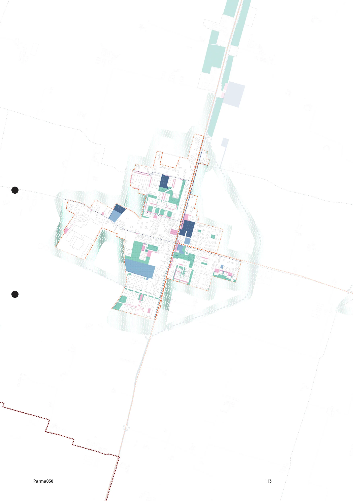
4.3.16a
Scala
1:12.000
I quartieri e
la città pubblica
ST.SL
Strategie locali
Quartiere Molinetto
PR050
Distretto sud ovest, via Spezia
Obiettivi:
Ampliare il ruolo centrale del cimitero monumentale attraverso redefinizione funzionale del bordo del comparto con
conseguente realizzazione del Parco della Rimembranza (oggi spazio agricolo intercluso);
Potenziare isole ambientali di protezione della residenza;
Collegare a rete gli spazi per servizi pubblici;
Rafforzare la funzione centrale e di relazione dei principali assi stradali;
Delocalizzare le attività produttive incongrue;
Potenziare il verde di mitigazione lungo gli elemeti infrastrutturali (radiali);
Rafforzare la funzione commerciale delle aree e degli assi viari in cui sono già presenti strutture di vendita;
Potenziare la dotazione dei parcheggi e deimpermeabilizzare quelli esistenti;
Garantire l’allaccio alla fognatura di tutti gli scarichi attualmente non collettati;
Potenziare il sistema dei percorsi ciclabili.
PROGETTI STRATEGICI:
P1: Riqualificazione area ex-Tep (viale Villetta);
P2: Strutture scolastiche a servizio dell’evolu-
zione del quartiere.
PROGETTI PILOTA:
P1: Recupero del parco di Villa Parma e sua
apertura alla cittadinanza;
P2: Riqualificazione dell’area del Palasport e
degli spazi aperti limitrofi.
PROGETTUALITÁ SPECIFICHE:
P1: Favorire l’integrazione tra i servizi collocati
su via Silvio Pellico, attraverso il miglioramento
e la messa in sicurezza delle strade a forte
traffico veicolare, cercando di sostenere la
pedonalità con interventi mirati (via Pellico, via
La Spezia, via Fratelli Bandiera, via Montevideo,
via Confalonieri, largo Beccaria);
P2: Completare il sistema delle piste ciclabili,
integrando quelle esistenti in via La Spezia;
P3: Collegare il nuovo ponte della Navetta con
la rete ciclabile;
P4: Realizzare un nuovo collegamento ciclabile
tra via La Spezia e la nuova pista ciclabile da
realizzare sul sedime della Pontremolese;
P5: Migliorare le relazioni e le permabilità fra
Centro Sportivo “Quadrifoglio” e le aree a
verde sport e verde pubblico attrezzato poste
attorno;
P6: Prevedere l’interramento degli elettrodotti
AT nella porzione su via Confalonieri poiché
interferisce negativamente sul complesso
sportivo limitrofo.
Criticità:
Scarsa identità degli assi viari principali e forte impatto dei flussi di traffico sulla residenza;
Mancanza di parcheggi a servizio delle attività commerciali presenti sugli assi viari principali;
Mancanza di collegamenti fisici e funzionali tra i servizi presenti nel settore urbano;
Presenza di attività produttive all’interno di contesti prevalentemente residenziali;
Esistenza di aree sotto-utilizzate o in disuso;
Presenza di elevate condizioni del rumore ambientale;
Presenza di scarichi non collettati a depurazione;
Presenza di numerose linee elettriche AT;
Margini dei parchi urbani irregolari e non riconoscibili;
Presenza di attività incongrue lungo il Torrente Baganza.
Strategia urbana generale:
Migliorare la qualità degli spazi aperti pubblici di connessione tra le principali strutture commerciali esistenti.
Localizzare le nuove edificazioni in continuità con quelle esistenti, evitando la formazioni di aree intercluse inutilizzabili.
Collegare in rete i principali servizi pubblici. Mantenere e attrezzare gli spazi aperti esistenti interstiziali all’edificato.
Incentivare l’uso dei mezzi pubblici prevedendo una mobilità sostenibile.
Collegare al sistema fognario comunale gli edifici attualmente non collettati.
Prestazioni di qualità urbana richieste:
Migliorare la qualità urbana degli spazi aperti, attraverso la caratterizzazione degli elementi vegetativi e attrezzature
(anche temporanee). Sviluppo del Parco della Rimembranza come luogo centrale del quartiere e allargamento sensibile
delle dotazioni a verde con il duplice compito di mitigazione e relazione con la ”Green Infrastructure” (GI).
Inserire nuove attrezzature sportive ad integrazione di quelle esistenti a lato della ex-linea ferroviaria Pontremolese.
Favorire l’integrazione tra i servizi collocati a ridosso di via Silvio Pellico attraverso il miglioramento e la messa in sicu-
rezza delle strade a forte traffico veicolare, cercando di sostenere la pedonalità con interventi mirati.
Interrare la linea di alta tensione in quanto attraversa gran parte dei servizi contribuendo a ridurre la qualità urbana ed
ambientale della zona.
Azioni:
Riqualificare le aree produttive sottoutilizzate o dismesse poste in adiacenza a via La Spezia con la realizzazione di
nuovi insediamenti residenziali e altre funzioni non produttive.
Potenziare i fronti commerciali nel tratto di via Spezia compreso fra piazzale Barbieri e via Chiavari, anche attraverso
l’inserimento di nuove strutture di vendita e la riqualificazione di quelle esistenti.
Riqualificare funzionalmente la grande struttura commerciale esistente su via Spezia, prevedendo l’incremento della
dotazione di parcheggi pertinenziali.
Realizzare una nuova cabina elettrica primaria a nord di Strada Manara, in sostituzione della cabina esistente in Via
Volturno, con parziale dismissione delle linee ad alta tensione.
Realizzare parte della tangenziale idrica, in modo coordinato con i settori limitrofi.
Creazione di una Kyoto forest a compensazione degli impatti del centro urbano nel settore in cui l’ambito si inserisce.
Delocalizzazione delle attività incongrue lungo il torrente Baganza.
Attrezzature e spazi collettivi (livello comunale e sovracomunale - SC):
Riconfigurazione dell’assetto dotazioni del verde intorno al cimitero monumentale in modo da rendere attrattivo l’inse-
diamento di nuove attività e servizi.
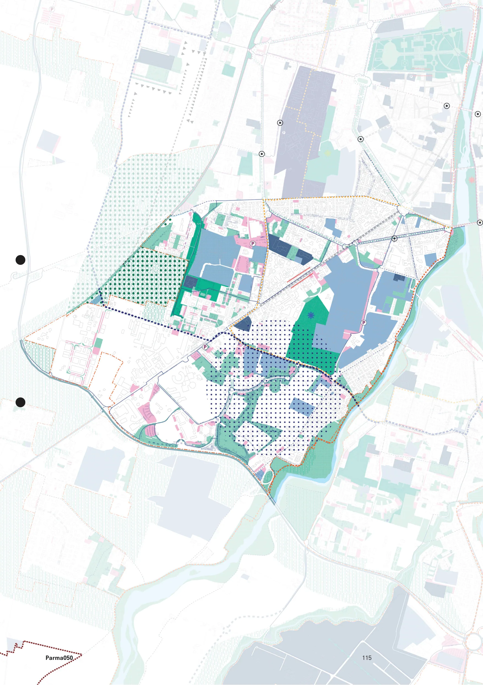
4.3.16b
Scala
1:6.000
I quartieri e
la città pubblica
ST.SL
Strategie locali
Quartiere Molinetto
PR050
Comparto produttivo “Spezia”
Obiettivi:
Garantire la connessione tra la rete ecologica urbana e la rete ecologica di bacino;
Limitare la pressione ambientale sulle aree residenziali lungo via Manara;
Completare e riqualificare l’insediamento produttivo esistente;
Integrazione della rete stradale esistente in relazione ai nuovi interventi;
Inserimento di nuove aree a servizi;
Prevedere una mobilità sostenibile (piste ciclabili);
Allacciare alla pubblica fognatura le aree non servite.
PROGETTI STRATEGICI:
P1: Sviluppo del segmento di via Manara (ossia
del Semi-Ring) come infrastruttura di attraver-
samento ciclo-pedonale.
PROGETTUALITÁ SPECIFICHE:
P1: Completare ad uso direzionale la porzione
di territorio non urbanizzato ad ovest del setto-
re e realizzazione di una nuova maglia stradale
per migliorare l’accessibilità dell’insediamento
produttivo esistente;
P2: Limitare l’insediamento di nuove strutture
commerciali diffuse o funzioni commerciali
prospicenti su via Spezia, nei tratti compresi tra
via Chiavari e la Tangenziale ovest;
P3: Riqualificare e riorganizzare funzionalmente
gli isolati produttivi adiacenti a via La Spezia;
P4: Mitigare gli impatti ambientali derivanti
dalla presenza della Tangenziale Sud;
P5: Mitigare gli impatti ambientali dell’area pro-
duttiva di via Manara sulle residenze vicine;
P6: Spostamento o interramento degli elettro-
dotti presenti, con particolare riferimento ai
tratti che interessano zone abitate;
P7: Realizzazione di una Kyoto forest a com-
pensazione degli impatti generati dalle aree
urbanizzate.
Criticità:
Scarsa accessibilità delle porzioni interne del settore;
Attività produttive collocate in adiacenza a funzioni residenziali;
Impatti ambientali derivanti dalle aree produttive e dalle principali infrastrutture viabilistiche;
Presenza di elementi tecnologici di impatto ambientale (elettrodotti);
Condizioni di saturazione del sistema di drenaggio;
Presenza di zone di rispetto di pozzi idropotabili;
Presenza di scarichi fognari non collettati nella pubblica fognatura.
Strategia urbana generale:
Migliorare la qualità degli spazi aperti pubblici di connessione tra le principali strutture commerciali esistenti.
Localizzare le nuove edificazioni in continuità con quelle esistenti, evitando la formazioni di aree intercluse inutilizzabili.
Mantenere e attrezzare gli spazi aperti esistenti interstiziali all’edificato. Incentivare l’uso dei mezzi pubblici prevedendo
una mobilità sostenibile.
Collegare al sistema fognario comunale gli edifici attualmente non collettati.
Prestazioni di qualità urbana richieste:
Creazione di una centralità ad uso servizi destinati al comparto produttivo.
Collegamento in rete dei principali servizi pubblici.
Azioni:
Migliorare la qualità degli spazi aperti pubblici di connessione tra le strutture commerciali.
Localizzare nuove edificazioni in continuità con quelle esistenti, evitando la formazione di aree intercluse inutilizzabili.
Incentivare l’applicazione di sistemi di gestione ambientale e LCA per le attività produttive.
Collettare a depurazione gli scarichi attualmente non trattati.
Attrezzature e spazi collettivi (livello comunale e sovracomunale - SC):
Realizzazione di un nuovo collegamento ciclabile lungo strada Manara, tra via La Spezia e la nuova pista ciclabile da
realizzare sul sedime della Pontremolese.
Intervento di messa in sicurezza della rete stradale in particolare sull’incrocio tra via La Spezia e la tangenziale sud.
Inserimento di attrezzature di interesse comune da situarsi su via Borsari al fine di realizzare una centralità all’interno
dell’insediamento produttivo esistente e previsto.
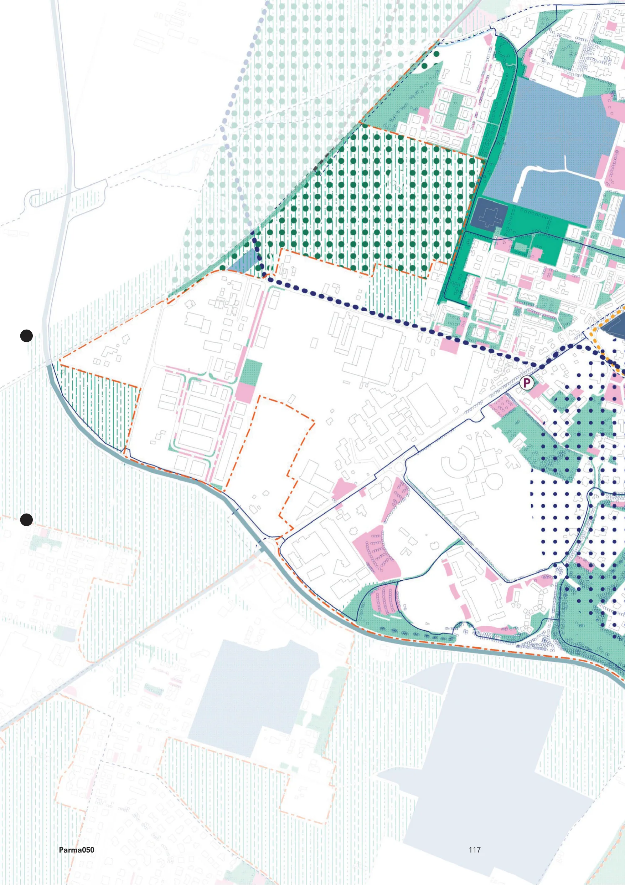
4.3.17a
Scala
1:12.000
I quartieri e
la città pubblica
ST.SL
Strategie locali
Quartiere Molinetto
PR050
Vigheffio
Obiettivi:
Tutela dell’identità rurale e paesaggistica e promozione dell’integrazione tra aree urbane e rurali;
Integrare nuove funzioni senza compromettere l’equilibrio tra le parti urbanizzate e le aree agricole;
Potenziamento delle infrastrutture verdi e blu: migliorare la qualità ambientale e la resilienza climatica;
Rafforzamento della mobilità sostenibile: favorire l’accessibilità attraverso una rete efficiente di percorsi ciclopedonali
e trasporto pubblico;
Creazione di servizi di prossimità: migliorare la qualità della vita attraverso spazi pubblici, servizi locali e nuove attività
sociali;
Valorizzazione dell’economia locale: sostenere l’agricoltura periurbana e le piccole attività commerciali e artigianali;
Riduzione del rumore ambientale a ridosso della viabilità principale.
PROGETTI STRATEGICI:
P1: Sviluppo del Bosco Orbitale.
Criticità:
Urbanizzazione frammentata e poco integrata con il contesto agricolo circostante;
Scarso collegamento con il resto della città: viabilità limitata e poche infrastrutture di mobilità sostenibile
Mancanza di servizi e spazi collettivi adeguati per la comunità locale;
Presenza della centrale elettrica;
Mancanza di esercizi commerciali di vicinato;
Pressione infrastrutturale e impatti ambientali legati alla vicinanza della Tangenziale Sud e di altre arterie di traffico;
Rischio idrogeologico e gestione delle acque meteoriche in alcune aree della frazione.
Strategia urbana generale:
Protezione e valorizzazione del paesaggio rurale.
Mantenere una fascia “verde” attiva tra l’area edificata e le infrastrutture viarie.
Sviluppo del un tessuto urbano sostenibile e compatto.
Promuovere interventi a basso impatto ambientale e di riqualificazione.
Potenziamento della rete ecologica: creazione di parchi agricoli, corridoi verdi e aree di mitigazione ambientale.
Riqualificazione della viabilità e miglioramento dell’accessibilità: realizzazione di piste ciclabili, marciapiedi e migliora-
mento del trasporto pubblico.
Sviluppo dell’economia locale attraverso il sostegno alle piccole attività artigianali, commerciali e agricole.
Creazione di nuovi spazi collettivi e servizi di quartiere per favorire l’inclusione sociale e la qualità della vita.
Prestazioni di qualità urbana richieste:
Connessione con la città e il territorio rurale: rete ciclopedonale che collega Vigheffio con il quartiere Molinetto e il centro
di Parma.
Spazi verdi multifunzionali: aree a parco con funzioni ecologiche, ricreative e di protezione dal rumore delle infrastrutture.
Sistemi di drenaggio sostenibile per la gestione delle acque piovane e la riduzione del rischio idrogeologico.
Riqualificazione delle strade locali con marciapiedi, illuminazione efficiente e alberature per migliorare la sicurezza e la
qualità urbana.
Spazi di transizione tra area urbana e agricola: fasce verdi, orti urbani e parchi agricoli per un’integrazione armoniosa.
Riduzione dell’impatto acustico e ambientale delle infrastrutture attraverso barriere verdi e sistemi di schermatura.
Azioni:
Incentivare l’inserimento di esercizi commerciali di piccole dimensioni in prossimità del quartiere residenziale esistente.
Potenziare la mobilità sostenibile e il sistema dei percorsi ciclabili.
Localizzare le nuove edificazioni in continuità con quelle esistenti, evitando la formazioni di aree intercluse inutilizzabili.
Disincentivare l’insediamento di nuove strutture commerciali diffuse o l’inserimento di funzioni commerciali prospicienti
via Spezia.
Realizzare nuovi collegamenti ciclabili con l’abitato di Vicofertile, verso la fattoria di Vigheffio e in direzione di Collecchio.
Vigheffio come modello di frazione sostenibile, con elevata qualità della vita e basso impatto ambientale.
Attrezzature e spazi collettivi di carattere comunale:
Polo culturale e sociale di frazione per eventi, attività educative e aggregazione comunitaria.
Mercato contadino e hub agroalimentare per la vendita e la trasformazione dei prodotti locali.
Orti urbani e comunitari per il coinvolgimento della popolazione e la promozione di uno stile di vita sostenibile.
Parchi e aree verdi attrezzate per il tempo libero e lo sport.
Percorsi ciclopedonali e di mobilità dolce per migliorare l’accessibilità e la connessione con il territorio.
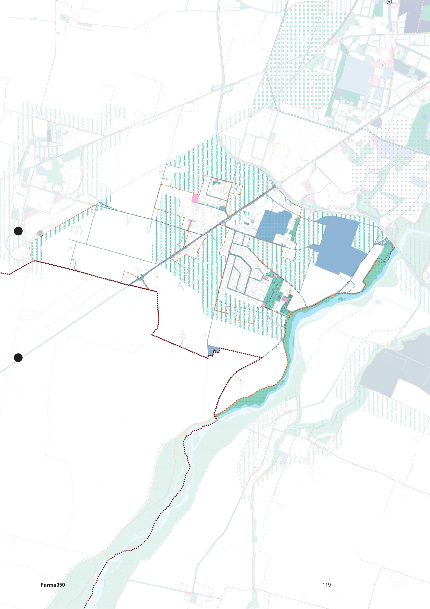
4.3.17b
Scala
1:30.000
I quartieri e
la città pubblica
ST.SL
Strategie locali
Quartiere Molinetto
PR050
Territorio Rurale - TR
Obiettivi:
Tutela del paesaggio agricolo e promozione dell’integrazione tra aree urbane e rurali;
Selezionare le attività compatibili con il sistema agrario presente (agricoltura biologica, filiera corta, agriturismo);
Ridurre l’impatto del traffico di attraversamento;
Mantenere la produttività con la valorizzazione del paesaggio agrario;
Prevedere interventi di mobilità sostenibile e ciclopedonali di qualità paesaggistica;
Sviluppo dell’agricoltura periurbana: incentivare pratiche agricole sostenibili e multifunzionali .
PROGETTI STRATEGICI:
P1: Sviluppo del Bosco Orbitale intorno agli
insediamenti urbani tale da mediare il rapporto
con il Territorio Agricolo.
Criticità:
Frammentazione del paesaggio rurale;
Forti impatti ambientali dei flussi di traffico lungo le infrastrutture di attraversamento;
Condizioni di vulnerabilità degli acquiferi all’inquinamento;
Ridotta multifunzionalità agricola: prevalenza di monocolture e scarsa diversificazione delle attività rurali;
Carente connessione ecologica: le aree agricole sono spesso scollegate da parchi e corridoi ecologici urbani;
Scarsa valorizzazione del patrimonio agricolo e identitario: mancanza di spazi e iniziative per promuovere le produzioni
locali e il turismo rurale.
Strategia urbana generale:
Potenziare attraverso incremento sistemi agroforestali e infrastrutture verdi per mitigare il cambiamento climatico.
Potenziare il sistema delle piste ciclabili extra urbane.
Aumentare la vegetazione di mitigazione nelle strade principali di attraversamento.
Favorire l’attraversamento di elementi ecosistemici in relazione al TR (Territorio Rurale).
Prestazioni di qualità urbana richieste:
Barriere verdi e fasce di mitigazione ambientale tra le infrastrutture viarie e le aree agricole per ridurre inquinamento e
rumore.
Aree di transizione multifunzionali con funzioni ecologiche e ricreative (orti urbani, boschetti periurbani, spazi per la didat-
tica ambientale).
Sistemi di drenaggio sostenibile (SUDS) per la gestione delle acque meteoriche e la riduzione del rischio idrogeologico.
Integrazione tra spazi produttivi e spazi pubblici attraverso la creazione di hub agricoli comunitari per attività culturali,
didattiche e ricreative.
Azioni:
Creazione di spazi per la socialità e l’educazione ambientale: promuovere orti urbani, parchi agricoli e spazi per la
comunità.
Sviluppo della mobilità sostenibile: migliorare la rete di percorsi ciclopedonali e il trasporto pubblico per connettere le
aree rurali alla città.
Supporto all’agricoltura biologica e rigenerativa: incentivi per la conversione a pratiche agricole sostenibili e per l’uso
di tecnologie innovative.
Creazione di un ecosistema agricolo urbano resiliente, con aree verdi integrate.
Introduzione di sistemi avanzati di gestione idrica per prevenire il rischio idrogeologico.
Aumento della produzione agricola locale con tecniche sostenibili.
Raggiungimento di un equilibrio tra urbanizzazione e tutela del paesaggio rurale.
Attrezzature e spazi collettivi:
Mercato agricolo locale: uno spazio permanente o temporaneo per la vendita diretta dei prodotti agricoli.
Orti urbani e giardini condivisi: aree verdi gestite dalla comunità per promuovere l’auto-produzione alimentare.
Fattorie didattiche: luoghi di educazione ambientale per le scuole e le famiglie.
Spazi di coworking rurale: infrastrutture per supportare startup agricole e iniziative di innovazione rurale.
Punti di sosta e aree picnic lungo i percorsi ciclopedonali per valorizzare il turismo lento.
Hub per la logistica agricola di filiera corta per facilitare la distribuzione dei prodotti locali.
4.3.18
Scala
1:10.000
I quartieri e
la città pubblica
ST.SL
Strategie locali
Quartiere Pablo
PR050
Distretto ovest
Obiettivi:
Ampliare il ruolo centrale del quartiere attraverso il recupero dei fabbricati;
Realizzare isole ambientali di protezione della residenza attraverso riorganizzazione della viabilità;
Collegare a rete gli spazi pubblici e rendere il tessuto degli edifici residenziali pubblici permeabile;
Rafforzare la funzione centrale dei principali assi stradali;
Rafforzale le funzioni del polo ospedaliero favorendo la permeabilità del comparto e possibilità di aggregazioni funzio-
nali lungo i suo perimetro;
Delocalizzare le attività produttive incongrue;
Potenziare il verde istituendo il parco lineare dell’expontremolese;
Rafforzare le funzioni di relazione tra l’ambito produttivo artigianale con gli orti a ovest;
Potenziare la dotazione degli spazi pubblici nell’intersezione via Emilia e sottopasso;
Limitare il rumore ambientale connesso alle principali attività produttive e ai principali assi infrastrutturali;
Garantire l’allaccio alla fognatura di tutti gli scarichi attualmente non collettati;
Nuovo spazio pubblico innovativo intersezione via Emilia-ferrovia e riassetto funzionale dell’incrocio.
PROGETTI STRATEGICI:
P1: Parco lineare Ex-pontremolese;
P2: Spazio pubblico innovativo all’incrocio tra
via Emilia, viale Piacenza e parco lineare ex-
Pontremolese;
P3:Valorizzazione e conseguente definizione
del Parco della Comunità (nr. 8 - Schema di
Assetto ST.SAS. 4.2.3).
PROGETTI PILOTA:
P1: Favorire l’aumento della porosità tra sistemi
abitativi pubblici presenti (rimozione parziale di
recinzioni);
P2: De-impermeabilizzazione del manto asfalta-
to nelle aree di Edilizia Popolare Pubblica.
PROGETTUALITÁ SPECIFICHE:
P1: Percorso ciclabile di attraversamento est-
ovest dell’area ospedaliera;
P2: Realizzazione della nuova biblioteca di
Alice.
Criticità:
Presenza di edifici degradati e di bassa qualità;
Presenza di elementi non ideonei collocati nel contesto;
Elementi infrastrutturali come barriere fisiche;
Carenza di parcheggi;
Presenza di attività inserite in contesti non idonei;
Area ad elevato inquinamento elettromagnetico per la presenza di due elettrodotti AT e di una cabina di trasformazione
(zona ospedale).
Strategia urbana generale:
Sostenere la qualificazione dell’area lungo la ferrovia come “parco lineare” da valorizzare con la messa in rete degli
spazi pubblici intersecanti. L’area è servita da una dorsale principale del TPL ed è un’area con alta accessibilità pedo-
nale e ciclabile. Il contesto del quartiere Pablo è caratterizzato da una buona dotazione quantitativa di aree per servizi
e attrezzature; la fruibilità dei servizi è condizionata da una buona accessibilità ciclopedonale, confortevole e sicura, e
segnata da condizioni di marginalità. L’area si colloca al centro del quartiere Pablo ed è prossima all’area dell’ospeda-
le.
L’intervento deve quindi concorrere a:
- ricucire il tessuto urbano;
- implementare i collegamenti ciclo pedonali in particolare con il quartiere San Pancrazio;
- potenziare la dotazione di servizi socio assistenziali e aggregativi;
- aumentare la dotazione di strutture scolastiche da integrare con aree verdi attrezzate.
La maggiore criticità dell’area è costituita dall’inquinamento acustico determinato dalla presenza di un’infrastrutture
ferroviaria in prossimità del comparto, della quale è comunque previsto l’interramento.
Prestazioni di qualità urbana richieste:
Realizzazione di un servizio pubblico che comprenda un parcheggio di interscambio con la rete di TPL, un centro di
aggregazione per il quartiere ed alcuni servizi culturali.
Valorizzazione del fronte urbano su viale Gramsci.
Realizzazione di connessioni ciclopedonali protette di connessione con il centro storico.
Realizzazione di manufatti edilizi a basso impatto energetico.
Azioni:
Migliorare la qualità degli spazi aperti pubblici di connessione tra le principali strutture presenti ed i servizi.
Incrementare la funzione centrale delle principali strade attraverso la loro caratterizzazione.
Collegare al sistema fognario comunale gli edifici attualmente non collettati.
Mitigare gli impatti ambientali derivanti dalle principali fonti di inquinamento elettromagnetico.
Attrezzature e spazi collettivi (livello comunale e sovracomunale - SC):
Prevedere interventi di potenziamento del verde urbano in corrispondenza delle connessioni ecologiche in ambito
urbano.
Valorizzazione del tracciato ferroviario Pontremolese e qualificare gli spazi stradali con pavimentazioni permeabili e
caratterizzanti lo spazio pubblico.
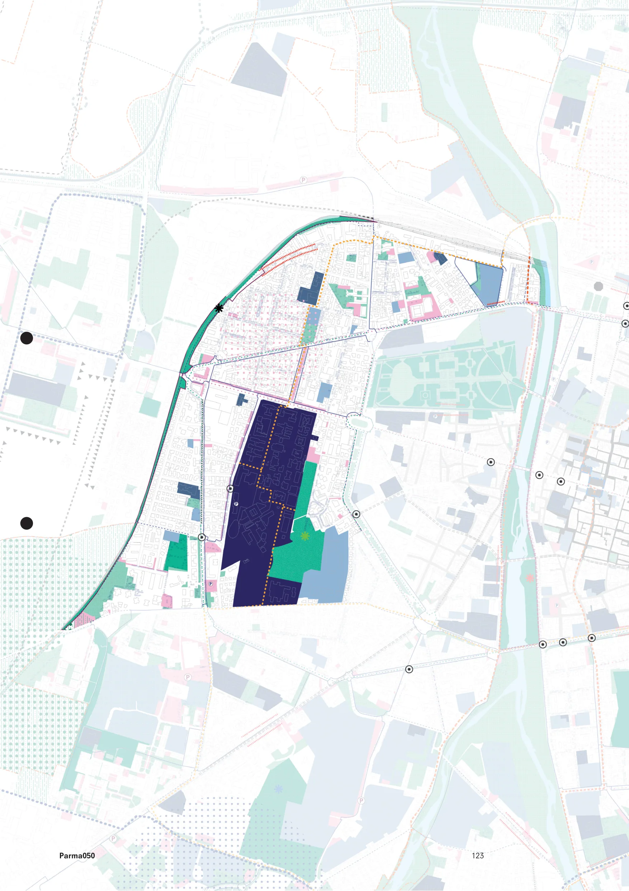
4.3.19
Scala
1:10.000
I quartieri e
la città pubblica
ST.SL
Strategie locali
Quartiere San Pancrazio
PR050
Crocetta
Obiettivi:
Migliorare l’identità urbana dell’ambito;
Realizzare isole ambientali in corrispondenza degli insediamenti residenziali;
Potenziare il verde di mitigazione;
Incentivare sistemi di mobilità sostenibile;
Potenziare la dotazione di parcheggi;
Garantire la continuità del corridoio ecologico in direzione nord-sud in corrispondenza dello svincolo della tangenziale
nord con via Emilia;
Migliorare le condizioni del clima acustico in corrispondenza delle aree residenziali (via Cremonese, via Pini, via Emilia)
e in corrispondenza del recettore particolarmente sensibile rappresentato dalle scuole di via Pini;
Riduzione dell’esposizione all’inquinamento elettromagnetico, con particolare riferimento alle aree particolarmente
sensibili;
Incentivare la dotazione di strutture commerciali nella parte del settore ad est della tangenziale;
Ridurre il carico antropico in coerenza con le disposizioni del Piano di Rischio Aeroportuale.
PROGETTI STRATEGICI:
P1: Parco lineare della ex-Pontremolese;
P2: Sviluppo infrastrutturale dell’innesto del
“Semi-Ring”;
P3: Completamento Bosco Orbitale.
PROGETTUALITÁ SPECIFICHE:
P1: Spostamento o interramento dei tratti di
elettrodotti che interessano le zone abitate,
con particolare riferimento alle aree sensibili;
P2: Potenziare i fronti commerciali nel tratto di
strada compreso fra il nuovo tracciato della
linea ferroviaria Pontremolese e Via Pini;
P3: Previsione di interventi di traffic-calming
sul tratto di via Emilia Ovest che interessa le
aree urbanizzate, disincentivando il traffico dei
veicoli pesanti e incrementando i percorsi fra
le aree a servizi e quelle residenziali attuate e
previste.
Criticità:
Esistenza di funzioni non compatibili tra loro;
Mancanza di spazi urbani riconoscibili;
Forte impatto del traffico sugli insediamenti residenziali;
Mancanza di parcheggi a servizio delle attività commerciali presenti sull’asse viario principale;
Condizioni di criticità ambientale in prossimità della via Emilia e in prossimità delle principali attività produttive;
Presenza di elettrodotti.
Strategia urbana generale:
Migliorare la qualità degli spazi aperti pubblici di connessione tra le strutture commerciali.
Realizzare un sistema coordinato di insegne e recinzioni delle aree commerciali.
Mitigare gli impatti ambientali derivanti dalla presenza della tangenziale.
Mitigare gli impatti da rumore delle aree produttive sulle residenze vicine.
Localizzare le nuove edificazioni in continuità con quelle esistenti, evitando la formazioni di aree intercluse inutilizzabili.
Potenziamento del sistema dei percorsi ciclabili.
L’area non edificata a sud dell’aeroporto costituisce un potenziale ambito che consente la creazione e sviluppo di una
dotazione verde di collegamento con il Parco ecosistemico della tangenziale e di collegamento con la “Green Infra-
structure”. L’area si trova in un contesto molto sensibile in riferimento all’aeroporto e lo snodo infrastrutturale su cui
insiste il vincolo aeroportuale con limitazione al carico antropico.
Prestazioni di qualità urbana richieste:
Prevedere interventi di messa in sicurezza della rete stradale a favore della pedonalità, mediante interventi mirati a
ridurre i rischi di incidenti negli incroci critici.
Ampliare l’offerta di nuove attrezzature per lo sport o direttamente collegate ad essa in continuità con quelle esistenti.
Realizzare nuovi parcheggi e aree verdi di mitigazione in corrispondenza delle fasce di rispetto infrastrutturali.
Azioni:
Migliorare la qualità degli spazi aperti pubblici di connessione tra le principali strutture commerciali ed i servizi.
Incrementare la funzione centrale delle principali strade attraverso l’inserimento di nuovi servizi.
Collegare al sistema fognario comunale gli edifici attualmente non collettati.
Spostamento o interramento degli elettrodotti presenti, con particolare riferimento a quelli che interessano aree edificate.
Mitigare gli impatti ambientali derivanti dalle principali attività produttive e dai principali assi infrastrutturali.
Aumentare l’offerta di Edilizia Residenziale Sociale (ERS).
Qualificazione degli spazi a verde pubblico esistenti e di progetto.
Attrezzature e spazi collettivi (livello comunale e sovracomunale - SC):
Integrare i servizi collocati ai lati dell’asse della via Emilia, favorendo gli interventi di messa in sicurezza della rete stradale.
Completare e riqualificare la pista ciclabile sull’asse della via Emilia.
Migliorare il collegamento tra i servizi posti ad est e quelli ad ovest rispetto alla barriera fisica della tangenziale.
Prevedere verde pubblico attrezzato su via Emilia.
Garantire la continuità del corridoio ecologico in direzione nord-sud in corrispondenza dello svincolo della tangenziale
nord con la via Emilia in corrispondenza dello snodo del “Semi-Ring”.
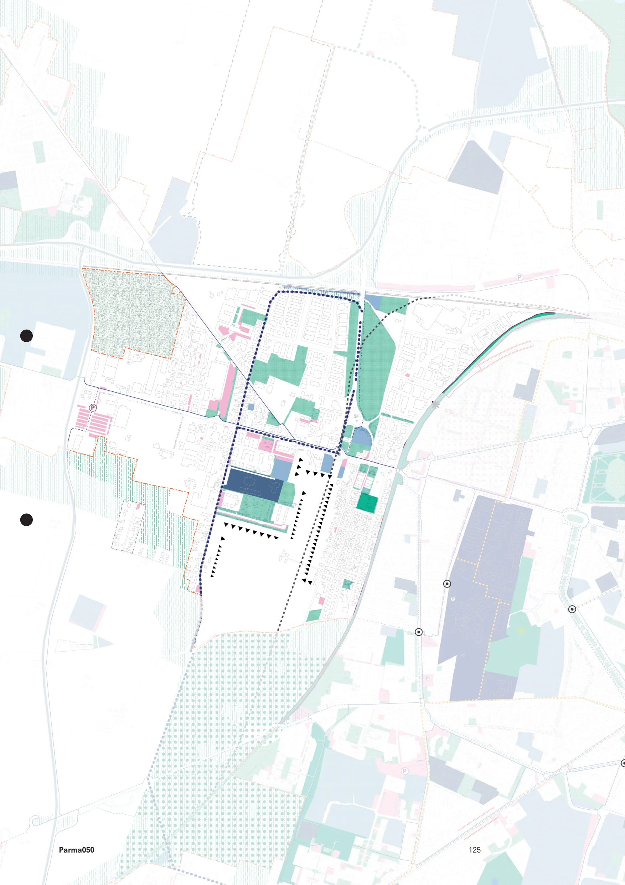
4.3.20
Scala
1:10.000
I quartieri e
la città pubblica
ST.SL
Strategie locali
Quartiere San Pancrazio
PR050
Territorio Urbano
Obiettivi:
Migliorare l’identità urbana dell’ambito.
Realizzare isole ambientali in corrispondenza degli insediamenti residenziali.
Potenziare il verde di mitigazione.
Incentivare sistemi di mobilità sostenibile.
Potenziare la dotazione di parcheggi.
Garantire la continuità del corridoio ecologico in direzione nord-sud in corrispondenza dello svincolo della tangenziale
nord con via Emilia.
Riduzione dell’esposizione all’inquinamento elettromagnetico, con particolare riferimento alle aree particolarmente
sensibili.
Valorizzare la presenza commerciale dell’abitato di San Pancrazio.
Incentivare la dotazione di strutture commerciali nella parte del settore ad est della tangenziale.
Ridurre il carico antropico in coerenza con le disposizioni del Piano di Rischio Aeroportuale
PROGETTI STRATEGICI:
P1: Rigenerazione dell’area abbandonata con
implementazione funzionale nella zona nord ed
eventuale inserimento di attrezzature sportive;
P2: Sviluppo verde di mitigazione del “Parco
della Tangenziale Nord”;
P3: Potenziamento della via Emilia in “Centrali-
tà lineare” e conseguente efficientamento degli
spazi pubblici contigui all’infrastruttura.
PROGETTUALITÁ SPECIFICHE:
P1. Progettare un percorso ciclabile a nord del-
la Via Emilia che, partendo da via Cremonese,
consenta di raggiungere Piazzale Faraboli ed i
servizi locali ad esso limitrofi;
P2. Interrare il tratto dell’elettrodotto AT che
passa nel settore di riferimento al di sopra dei
complessi scolastici “Anna Frank” e “Pini”,
nonché alla limitrofa attrezzatura religiosa su
via Bassani;
P3. Delocalizzare le aree produttive in prossimi-
tà di p.le G. Faraboli e successivo inserimento
di nuove aree residenziali sui lati nord ed est
della stessa in modo tale da creare continuità
con le preesistenze;
P4. Riqualificare l’antico nucleo urbano che si
sviluppa attorno a p.le don T. Pioli, riconosciuto
come nucleo urbano di valore storico e archi-
tettonico;
P5. Limitare l’insediamento di nuove strutture
commerciali diffuse o funzioni commerciali pro-
spicenti su via Emilia ovest, nei tratti compresi
tra Via Pini ed il nucleo di San Pancrazio, e tra
San Pancrazio ed il confine amministrativo;
P6. Previsione di interventi di traffic-calming
sul tratto di via Emilia Ovest che interessa le
aree urbanizzate, disincentivando il traffico dei
veicoli pesanti e incrementando i percorsi fra
le aree a servizi e quelle residenziali attuate e
previste;
P7. Spostamento o interramento dei tratti di
elettrodotti che interessano le zone abitate,
con particolare riferimento alle aree sensibili;
P8. Creazione all’interno del settore di una
Kyoto forest (parte del Bosco Orbitale) a com-
pensazione degli impatti del centro urbano.
Criticità:
Esistenza di funzioni non compatibili tra loro.
Mancanza di spazi urbani riconoscibili.
Forte impatto del traffico sugli insediamenti residenziali.
Mancanza di parcheggi a servizio delle attività commerciali presenti sull’asse viario principale.
Condizioni di criticità ambientale in prossimità della via Emilia e in prossimità delle principali attività produttive.
Presenza di elettrodotti.
Strategia urbana generale:
Migliorare la qualità degli spazi aperti pubblici di connessione tra le strutture commerciali.
Realizzare un sistema coordinato di insegne e recinzioni delle aree commerciali.
Mitigare gli impatti ambientali derivanti dalla presenza della tangenziale.
Mitigare gli impatti da rumore delle aree produttive sulle residenze vicine.
Localizzare le nuove edificazioni in continuità con quelle esistenti, evitando la formazioni di aree intercluse inutilizzabili.
Potenziamento del sistema dei percorsi ciclabili.
Prestazioni di qualità urbana richieste:
Prevedere interventi di messa in sicurezza della rete stradale a favore della pedonalità, mediante interventi mirati a
ridurre i rischi di incidenti negli incroci critici.
Ampliare l’offerta di nuove attrezzature per lo sport o direttamente collegate ad essa in continuità con quelle esistenti.
Realizzare nuovi parcheggi e aree verdi di mitigazione in corrispondenza delle fasce di rispetto infrastrutturali.
Azioni:
Migliorare la qualità degli spazi aperti pubblici di connessione tra le principali strutture commercialied i servizi. Incre-
mentare la funzione centrale delle principali strade attraverso l’inserimento di nuovi servizi e attività commerciali.
Collegare al sistema fognario comunale gli edifici attualmente non collettati.
Spostamento o interramento degli elettrodotti presenti, con particolare riferimento a quelli che interessano aree edifi-
cate.
Mitigare gli impatti ambientali derivanti dalle principali attività produttive e dai principali assi infrastrutturali.
Potenziare la dotazione di parcheggi lungo la via Emilia con possibilità di scambio mezzo.
Attrezzature e spazi collettivi (livello comunale e sovracomunale - SC):
Potenziare il verde e i parcheggi a servizio dei quartieri residenziali del centro di San Pancrazio.
Integrare i servizi collocati ai lati dell’asse della via Emilia, favorendo gli interventi di messa in sicurezza della rete stra-
dale, in particolare in corrispondenza del centro di San Pancrazio.
Completare e riqualificare la pista ciclabile sull’asse della via Emilia.
Migliorare il collegamento tra i servizi posti ad est e quelli posti ad ovest rispetto alla barriera fisica della tangenziale.
Inserire nuove attrezzature di interesse comune a completamento del centro di San Pancrazio a sud della via Emilia. .
Mantenere la continuità con il paesaggio agricolo nell’ampia area destinata ad attrezzature comuni a lato dell’impianto
sportivo esistente di San Pancrazio.
Proporre un nuovo collegamento ciclabile con Fognano.
Mantenere la continuità fisica tra le aree agricole e le zone a servizi, salvaguardando l’apertura verso il paesaggio.
Garantire la continuità del corridoio ecologico in direzione nord-sud in corrispondenza dello svincolo della tangenziale
nord con la via Emilia.
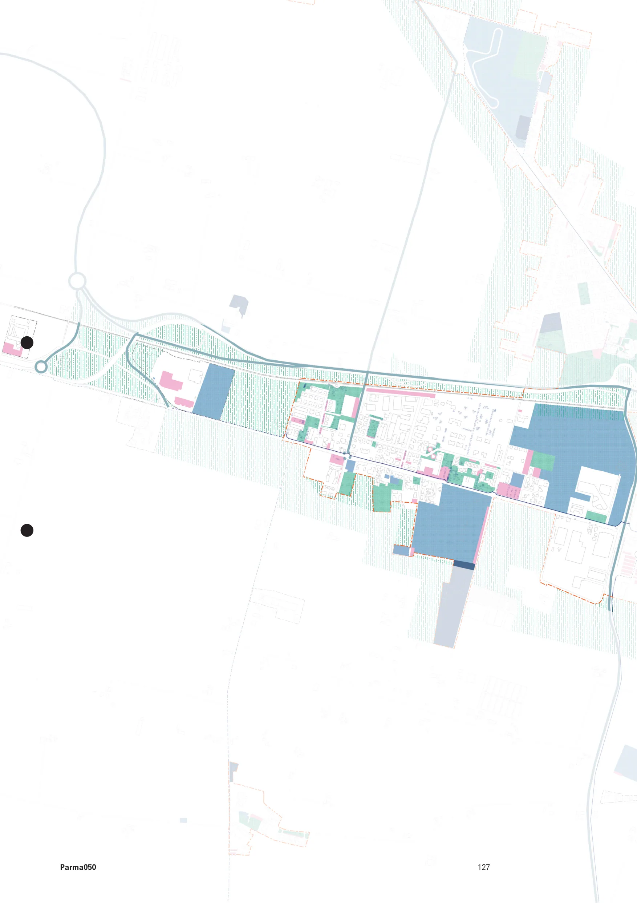
4.3.21
Scala
1:25.000
I quartieri e
la città pubblica
ST.SL
Strategie locali
Quartiere San Pancrazio
PR050
TR (Terrirorio Rurale)
Obiettivi:
Migliorare l’identità rurale dell’ambito;
Realizzare isole ambientali in corrispondenza degli insediamenti residenziali;
Potenziare il verde di mitigazione;
Incentivare sistemi di mobilità sostenibile;
Garantire la continuità del corridoio ecologico in direzione nord-sud in corrispondenza del fiume Taro;
Riduzione dell’esposizione all’inquinamento, con particolare riferimento alle pratiche di produzione agricola.
PROGETTI STRATEGICI:
P1: Bosco Orbitale e completamento Kyoto
forest;
P2: Valorizzazione dell’area alveo del fiume Taro
con contestuale aumento della Biodiversità
PROGETTUALITÁ SPECIFICHE:
P1: Piantumazione di alberature lungo i percorsi
secondari con relativa valorizzazione dei segni
e tracce della centuriazione.
Criticità:
Esistenza di funzioni non compatibili tra loro;
Mancanza di spazi agricoli qualificanti e riconoscibili;
Forte impatto del traffico sugli insediamenti rurali;
Condizioni di criticità ambientale in prossimità delle vie principali di attraversamento;
Poca presenza di verde di mitigazione ambientale lungo le direttrici princiapali.
Strategia urbana generale:
Migliorare la qualità degli spazi aperti pubblici di connessione tra le strutture ambientali, rurali e urbane.
Mitigare gli impatti ambientali derivanti dalla presenza di strade ad alta percorrenza.
Mitigare gli impatti da rumore delle aree produttive sulle residenze vicine.
Potenziamento del sistema dei percorsi ciclabili.
Favorire l’implementazione delle aziende zootecniche per l’autoproduzione di biogas ed energia elettrica.
Favorire il collegamento dolce tra Vicofertile, Vigolante e S. Pancrazio.
Prestazioni di qualità urbana richieste:
Prevedere interventi di messa in sicurezza della rete stradale a favore della ciclo-pedonalità, mediante interventi mirati
a ridurre i rischi di incidenti negli incroci critici.
Ampliare l’offerta di nuove attrezzature per lo svago in Territorio Rurale direttamente collegati ai sistemi ambientali
identificati.
Realizzare nuove aree di sosta attrezzate e aree verdi di mitigazione in corrispondenza delle fasce di rispetto infrastrut-
turali.
Azioni:
Migliorare la qualità degli spazi verdi di connessione tra le principali strutture rurali e ambientali.
Spostamento o interramento degli elettrodotti presenti, con particolare riferimento a quelli che interessano aree edifi-
cate.
Mitigare gli impatti ambientali derivanti dalle principali attività produttive e dai principali assi infrastrutturali.
Sviluppo di aree verdi di mitigazione lungo il tratto di tangenziale ovest.
Implementazione del Bosco Orbitale e Kyoto Forest in corrispondenza del tratto “Semi-Ring”.
Attrezzature e spazi collettivi (livello comunale e sovracomunale - SC):
Potenziare il verde nel sistema rurale a favore dell’aumento della biodiversità e potenzialità ecosistemica del TR.
Favorire interventi di messa in sicurezza della rete stradale, in particolare in corrispondenza del centro di Vicofertile.
Sviluppo delle ciclovie sull’asse Parma, Vicofertile direzione fiume Taro.
Inserire nuove attrezzature di interesse comune nel TR.
Prevedere verde pubblico attrezzato tra Vicofertile e Parma.
Mantenere la continuità con il paesaggio agricolo attraverso progettualità specifiche con diversificazione vegetativa.
Garantire la continuità del corridoio ecologico lungo il Taro.
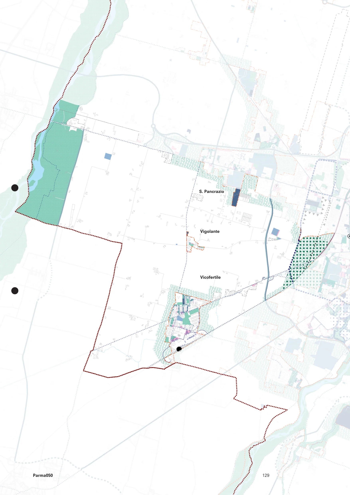
4.3.21a
Scala
1:12.500
I quartieri e
la città pubblica
ST.SL
Strategie locali
Quartiere San Pancrazio
PR050
Vicofertile
Obiettivi:
Migliorare le condizioni di vita della popolazione, principalmente in relazione al traffico di attraversamento;
Migliorare le condizioni di clima acustico in corrispondenza delle viabilità di attraversamento e nella porzione meridio-
nale del settore;
Prevedere una mobilità sostenibile con il potenziamento del sistema delle piste ciclabili;
Ridurre la necessità di mobilità automobilistica all’interno dell’abitato;
Delocalizzare le attività produttive incongrue;
Collettare il sistema fognario di tutte le edificazioni non servite;
Potenziare il verde di mitigazione rispetto alle principali infrastrutture viabilistiche;
Miglioramento dei collegamenti con il centro città e Via Spezia.
PROGETTUALITÁ SPECIFICHE:
P1: Ciclovia tra Vicofertile e Parma centro;
P2: Ciclovia tra Vicofertile, Vigolante e San
Pancrazio.
Criticità:
Scarsa dotazione di servizi pubblici di base;
Scarsa dotazione di spazi aperti pubblici di socialità;
Presenza di flussi di traffico di attraversamento, quale percorso alternativo alla SS della Cisa;
Elevata vulnerabilità degli acquiferi;
Limitata offerta di esercizi di vicinato;
Presenza di attività produttive incongrue;
Condizioni di criticità acustica nelle aree prospicienti la zona produttiva e le principali infrastrutture viabilistiche e ferro-
viarie;
Presenza di una linea elettrica AT;
Alcune porzioni dell’edificato non sono servite dal sistema fognario e di depurazioni.
Strategia urbana generale:
Potenziare attraverso incremento dell’infrastruttura verde spazi pubblici e favorirne la riqualificazione.
Potenziare il sistema delle piste ciclabili extra urbane.
Incentivare l’impiego di fonti di energia alternativa per gli edifici esistenti.
Aumentare la vegetazione di mitigazione nelle strade principali di attraversamento.
Sviluppo della Green Infrastructure e del Bosco Orbitale.
Trasformazione delle strade minori in viali alberati rinforzando i segni della centuriazione.
Prestazioni di qualità urbana richieste:
Ai fini prestazionali di qualità urbana, gli eventuali nuovi volumi nel TU dovranno rispettare e rapportarsi alla morfo-
logia del tessuto esistente. Inoltre nella progettazione degli spazi aperti sarà buona norma incrementare la qualità
di quest’ultimi attraverso l’attento studio dei materiali, il potenziamento del verde negli spazi di risulta e la completa
fruibilità dei percorsi ciclo-pedonali.
Azioni:
Incentivare l’impiego di fonti di energia alternativa e di risparmio energetico per gli edifici esistenti, per l’implementa-
zione di aree e comparti energeticamente autosufficienti.
Localizzare i nuovi edifici all’interno del TU, evitando la formazioni di aree intercluse inutilizzabili.
Mitigare gli impatti da rumore delle infrastrutture viarie e dell’area produttiva nella porzione meridionale del settore.
Collettare il sistema fognario di tutte le edificazioni non servite.
Creare zone verdi di protezione tra l’edificato e le infrastrutture viabilistiche di progetto.
Creare zone tampone tra l’edificato e il territorio agrario circostante con la formazione del “Bosco Orbitale”.
Attrezzature e spazi collettivi di carattere comunale:
Ridurre l’impatto del traffico di attraversamento di via Martiri della Liberazione sugli insediamenti residenziali esistenti
con interventi di traffic-calming.
Favorire l’integrazione spazio-funzionale tra i servizi esistenti e le dotazioni esistenti.
Potenziare il sistema delle piste ciclabili locali con il collegamento delle aree residenziali lungo via Martiri della Libera-
zione.
Riqualificare gli spazi pubblici centrali quali luoghi di aggregazione.
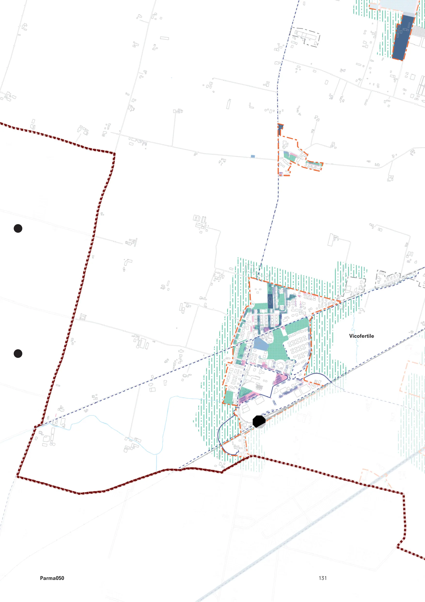
4.3.22
Scala
1:15.000
I quartieri e
la città pubblica
ST.SL
Strategie locali
Quartiere Golese
PR050
Aeroporto, Fognano
Obiettivi:
Incrementare la crescita del polo infrastrutturale in termini di passeggeri, favorire l’integrazione con altre funzioni di
rango urbano e territoriale;
Incrementare l’integrazione spaziale e funzionale del polo con il territorio attorno, con attenzione allo sviluppo di attivi-
tà attrattive e di servizio.
INTERVENTI DI TRASFORMAZIONE
Indirizzi insediativi
Migliorare la qualità spaziale e funzionale degli spazi aperti di pertinenza e degli spazi pubblici di connessione con
l’inserimento di fasce verdi;
Integrare il complesso areoportuale con attività complementari a servizio degli utenti e degli addetti.
Indirizzi infrastrutturali
Aumentare l’offerta di trasporto passeggeri;
Incrementare l’offerta del trasporto pubblico dedicato;
Dotare l’area di percorsi ciclopedonali di connessione con il centro della città;
Valorizzazione e ampliamento dell’ accesso principale.
Indirizzi ambientali
Potenziare gli elementi di mitigazione ambientale lungo la tangenziale;
Localizzare le nuove edificazioni in continuità con quelle esistenti, evitando la formazione di aree intercluse.
PROGETTI STRATEGICI:
P1: Parco della Tangenziale Nord (fascia verde
lungo la tangenziale nord);
P2: Area Est Aereoporto (AEA);
P3: Area Productive City #1;
P4: Area Productive City #2;
P5: Nuova scuola Materna a Fognano;
P6: Rigenerazione sito ex-inceneritore “ex-
Cornocchio”;
P7: Rigenerazione mercato agroalimentare in
“Parma Food Port”.
PROGETTI SPECIFICI:
P1: Ponte Europa valorizzazione con attività di
interesse pubblico;
P2: Rafforzamento del verde ecosistemico tra il
Territorio Rurale (TR) e il torrente Parma;
P3: Centro Unico delle Emergenze via del
Taglio.
Criticità
criticità funzionali:
Scarsità di altre funzioni collegate a quelle aeroportuali.
criticità infrastrutturali:
Carenza di collegamenti pedonali e ciclabili;
Carenza di collegamenti dedicati e preferenziali di trasporto pubblico.
criticità ambientali:
Risorse idriche: problematiche di natura idraulica correlate alla possibilità di drenaggio delle acque; forte saturazione
del reticolo idrografico secondario che caratterizzano la zona;
Paesaggio ed ecosistemi: l’area di progetto potrebbe interessare alcune aree di interesse archeologico accertato.
Strategia urbana generale:
L’aeroporto dovrà garantire il rispetto dei limiti di zona definiti dal Piano di Zonizzazione Acustica redatto ai sensi della
Legge Quadro 447/95 e del D.P.R. 142/2004.
Risorse Idriche/Paesaggi ed ecosistemi.
L’aeroporto dovrà minimizzare l’effetto di intrusione verso il sistema paesaggistico e naturale esistente, compatibilmen-
te alle necessità aeroportuali.
Prestazioni di qualità urbana richieste:
Migliorare la qualità urbana degli spazi aperti e nell’intorno delle infrastrutture aereoportuali .
Azioni:
Migliorare la qualità degli spazi verdi di connessione tra le principali strutture rurali, urbane e ambientali.
Mitigare gli impatti ambientali derivanti dalle principali attività produttive e dai principali assi infrastrutturali di attraver-
samento.
Sviluppo di aree verdi di mitigazione lungo il tratto di via Cremonese.
Attrezzature e spazi collettivi:
Potenziare il verde nel sistema rurale a favore dell’aumento della biodiversità e potenzialità ecosistemica del TR.
Favorire interventi di messa in sicurezza della rete stradale, in particolare in corrispondenza del centro abitati.
Sviluppo delle ciclovie di collegamento e attraversamento del TR.
Inserire nuove attrezzature di interesse comune nel TR.
Prevedere verde pubblico attrezzato nelle micro centralità urbane nel TR.
Mantenere la continuità con il paesaggio agricolo attraverso progettualità specifiche con diversificazione vegetativa.
Garantire la continuità del corridoio ecologico lungo il Taro.
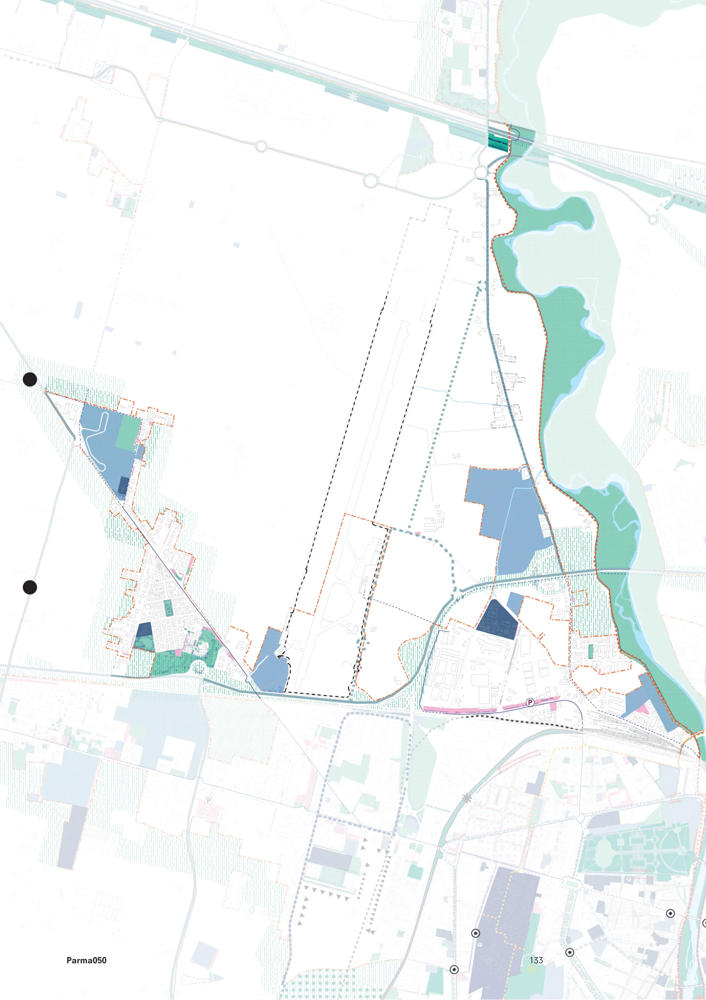
4.3.23
Scala
1:30.000
I quartieri e
la città pubblica
ST.SL
Strategie locali
Quartiere Golese
PR050
Territorio Rurale - TR
Obiettivi
Sviluppo della Green Infrastructure lungo le fasce del Taro e del Parma;
Conservare e potenziare il sistema delle stepping stone legate al verde del sistema insediativo diffuso in area agricola;
Preservare la struttura centuriata;
Valorizzare e tutelare le aree delle Risorgive
Ridurre gli impatti agricoli nelle aree ad ovest/ sud-ovest del Canale Galasso, aree di ricarica della falda;
Incrementare le relazioni con le emergenze naturali circostanti;
Preservare l’organizzazione del reticolo idrografico minore e potenziare la rete ecologica del reticolo idrografico secondario;
Sviluppo della “Super Quadra” come Bioparco di nuova generazione;
Potenziare attraverso incremento dell’infrastruttura verde spazi pubblici e favorirne la riqualificazione;
Potenziare il sistema delle piste ciclabili extra urbane e in relazione al torrente sul lato est;
Aumentare la vegetazione di mitigazione nelle strade principali di attraversamento;
Trasformazione delle strade minori in viali alberati rinforzando i segni della centuriazione;
Incentivare l’impiego di fonti di energia alternativa per gli edifici esistenti;
Ridurre l’impatto del traffico di attraversamento nelle frazioni e negli insediamenti residenziali esistenti;
Ridurre l’impatto ambientale delle infrastrutture;
Localizzare le nuove edificazioni nelle frazioni in continuità con quelle esistenti, evitando la formazioni di aree intercluse inuti-
lizzabili. Incentivare l’impiego di fonti di energia alternativa per gli edifici esistenti.
PROGETTI STRATEGICI:
P1: Progetto “SuperQuadra”;
P2: Sviluppo “KM Verde” lungo l’autostrada
A1.
PROGETTI SPECIFICI:
P1: Piantumazione di alberature lungo i percorsi
secondari con relativa valorizzazione dei segni
e tracce della centuriazione;
P2: Valorizzazione della via Cremonese
attraverso elementi vegetativi con funzione
di mitagazione ambientale e contestualmen-
te prevedere verde pubblico attrezzato sulla
stessa via;
P3: Favorire produzioni agricole sperimetali (per
esempio agrovoltaico, bioagricoltura etc.);
P4: Desigillazione e deimpermeabilizzazione del
manto asfaltato utilizzato a parcheggio;
P5: Completamento del fotovoltaico sulle
coperture non ancora utilizzate;
P6: Creare un parco lineare che si estenda
lungo il Torrente Taro o su altre aree naturali,
promuovendo la mobilità dolce e l’accesso alla
natura.
INTERVENTI DI TRASFORMAZIONE
Indirizzi insediativi
Integrare gli insediamenti sparsi con il territorio senza comprometterne la funzione agricola
Migliorare la qualità spaziale e funzionale degli spazi aperti di pertinenza e degli spazi pubblici di connessione con l’inseri-
mento di fasce verdi, con particolare attenzione alla piastra parcheggi.
Indirizzi infrastrutturali
Dotare l’area di percorsi ciclopedonali di connessione con le urbanità sparse il capoluogo, e il sistema ambientale.
Valorizzazione delle aree agricole in connessione al corridoio ecologico del fiume Taro.
Indirizzi ambientali
Riduzione dell’uso di diserbanti dannosi e possibili infiltrazioni in falda.
Salvaguardare le zone di rispetto dei pozzi idropotabili.
Preservare la struttura centuriata.
Preservare l’organizzazione del reticolo idrografico minore e potenziare la rete ecologica del reticolo idrografico secondario.
Criticità
Criticità funzionali: Ambito isolato rispetto alle principali dinamiche funzionali della città; Mancanza di alberghi nelle vici-
nanze. Criticità infrastrutturali: carenza di collegamenti pedonali e ciclabili; Carenza di corsie preferenziali o dedicate per
il trasporto pubblico. Criticità ambientali: rumore: elevati livelli di rumore ambientale causati dalla vicinanza all’aeroporto e
all’autostrada A1; Risorse idriche: problematiche di natura idraulica correlate alla possibilità di drenaggio delle acque; par-
ziale interessamento della zona di rispetto 60 gg e 180 gg dei pozzi idropotabili di Roncopascolo e dell’area di riserva idrica
corrispondente; carenza nel trattamento dei reflui.
Strategia urbana generale:
Sviluppo della “Superquadra” come Bioparco ed “energy park” di nuova generazione.
Potenziare attraverso incremento dell’infrastruttura verde spazi pubblici e favorirne la riqualificazione.
Potenziare il sistema delle piste ciclabili extra urbane e in relazione al torrente sul lato est.
Incentivare l’impiego di fonti di energia alternativa per gli edifici esistenti.
Aumentare la vegetazione di mitigazione nelle strade principali di attraversamento.
Sviluppo della Green Infrastructure lungo la sponda destra del torrente Taro.
Trasformazione delle strade minori in viali alberati rinforzando i segni della centuriazione.
Prestazioni di qualità urbana richieste
Rumore: in fase di progettazione dovrà essere predisposta una valutazione previsionale di impatto acustico ad opera di un
tecnico competente, finalizzata alla verifica del rispetto dei limiti di zona e degli effetti sui recettori sensibili ed eventualmen-
te alla definizione di opportune misure di mitigazione, con particolare riferimento alle strade di acceso e ai problemi indotti
in prossimità di insediamenti residenziali; le eventuali misure di mitigazione dovranno essere preferenzialmente realizzate con
dune vegetate ed eventualmente con barriere artificiali opportunamente mascherate con essenze arboree ed arbustive.
Risorse idriche: dovrà essere prevista la messa in sicurezza del territorio dal punto di vista idraulico attraverso la realizzazio-
ne di idonei bacini, la realizzazione di impianti separati tra la rete di canalizzazione delle acque meteoriche (rete acque bian-
che) e la rete fognante (rete acque nere) . Per quanto riguarda i reflui civili prodotti dovrà essere garantito l’allacciamento
delle nuove aree di trasformazione alla rete fognaria afferente ad un impianto di trattamento comunale, previa verifica della
capacità del depuratore medesimo che, in caso non risulti sufficiente, dovrà essere opportunamente adeguata.
Azioni:
Migliorare la qualità degli spazi verdi di connessione tra le principali strutture rurali, urbane e ambientali.
Mitigare gli impatti ambientali derivanti dalle principali attività produttive e dai principali assi infrastrutturali di attraversamen-
to.
Sviluppo di aree verdi di mitigazione lungo il tratto di via Cremonese.
Attrezzature e spazi collettivi:
Potenziare il verde nel sistema rurale a favore dell’aumento della biodiversità e potenzialità ecosistemica del TR.
Favorire interventi di messa in sicurezza della rete stradale, in particolare in corrispondenza dei centri abitati.
Sviluppo delle ciclovie di collegamento e attraversamento del TR
Inserire nuove attrezzature di interesse comune nel TR.
Prevedere verde pubblico attrezzato nelle micro-centralità urbane nel TR
Mantenere la continuità con il paesaggio agricolo attraverso progettualità specifiche con diversificazione vegetativa. Garan-
tire la continuità del corridoio ecologico lungo il Taro.
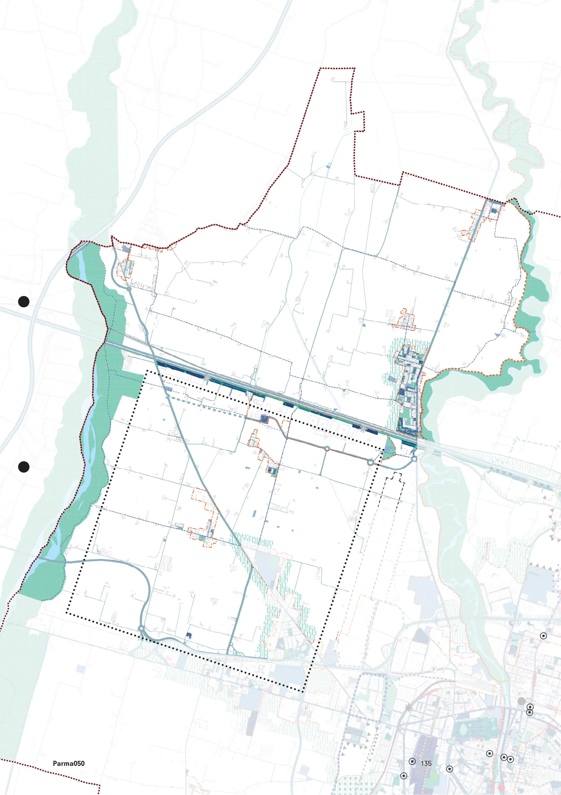
4.3.23a
Scala
1:30.000
I quartieri e
la città pubblica
ST.SL
Strategie locali
Quartiere Golese
PR050
Eia
Obiettivi:
Potenziamento, salvaguardia e valorizzazione del sistema ambientale e paesaggistico;
Incremento dell’integrazione spaziale e funzionale dell’abitato con il contesto agricolo e infrastrutturale, con attenzione allo
sviluppo di spazi identitari, attrattivi e di servizio, in relazione allo sviluppo della “superquadra”.
Obiettivi specifici:
Sostenibilità e protezione del paesaggio conservando le caratteristiche agricole e naturali del territorio all’interno del proget-
to “Bioparco - Superquadra”;
Promuovere la gestione ecologica e sostenibile delle risorse naturali;
Aumentare l’integrazione tra ambiente urbano e rurale creando una connessione funzionale e armoniosa tra le parti abitate e
le aree agricole circostanti, senza comprometterne il valore paesaggistico;
Garantire l’accesso a spazi pubblici verdi e percorsi ciclabili, che possano fungere da anelli di connessione tra Eia e il resto
del territorio comunale;
Miglioramento della qualità della vita e dei servizi incrementando la qualità dei servizi pubblici e delle infrastrutture, per
rispondere alle esigenze della popolazione locale;
Promuovere interventi che garantiscano l’accessibilità e l’inclusività, con particolare attenzione alla mobilità sostenibile;
Sviluppo economico sostenibile incentivando l’agricoltura biologica e altre pratiche agricole innovative;
Promuovere il turismo rurale e la valorizzazione del patrimonio paesaggistico e culturale.
PROGETTI STRATEGICI:
P1: Progetto “SuperQuadra”
PROGETTI SPECIFICI:
P1: Piantumazione di alberature lungo i percorsi
primari e secondari con relativa valorizzazione
dei segni e tracce della centuriazione.
P2: Valorizzazione della via Cremonese
attraverso elementi vegetativi con funzione
di mitagazione ambientale e contestualmen-
te prevedere verde pubblico attrezzato sulla
stessa via.
P3: Favorire produzioni agricole sperimetali
(per esempio agrovoltaico, bioagricoltura
etc.). e sostenerne l’innovazione, attraverso la
creazione di spazi di co-working per agricoltori
e giovani imprenditori interessati a pratiche
sostenibili.
P4: Realizzare una rete di percorsi ciclabili che
colleghi Eia ai principali nodi urbani, come il
centro di Parma, e ad altre frazioni limitrofe.
P5: Desigillazione e deimpermeabilizzazione del
manto asfaltato utilizzato a parcheggio.
P6: Completamento del fotovoltaico sulle
coperture non ancora utilizzate.
P7: Creare un centro civico multifunzionale
che ospiti attività culturali, sociali e formative,
rafforzando il legame tra la comunità locale e le
tradizioni agricole.
P8: Avviare un programma di recupero degli
edifici storici, con interventi che mantengano
le caratteristiche tradizionali, ma migliorino
l’efficienza energetica e la sicurezza.
P9: Promuovere l’installazione di orti urbani e
giardini comunitari per stimolare la partecipa-
zione della cittadinanza e garantire l’autosuffi-
cienza alimentare su piccola scala.
INTERVENTI DI TRASFORMAZIONE
Indirizzi Ambientali: Tutela del paesaggio e delle risorse naturali: Preservare la biodiversità locale, favorendo la creazione di
corridoi ecologici per la fauna selvatica. Implementare la gestione sostenibile delle acque e dei suoli, promuovendo tecni-
che di drenaggio naturale e protezione delle risorse idriche. Agricoltura e paesaggio: Valorizzare la funzione agricola delle
terre, con politiche che incentivano pratiche agricole sostenibili, anche a fini di educazione ambientale. Sostenere l’agricol-
tura biologica e le colture compatibili con la tutela del paesaggio e del patrimonio naturale. Indirizzi Infrastrutturali: Poten-
ziamento delle infrastrutture di mobilità sostenibile: Realizzare una rete di trasporto sostenibile, che colleghi Eia con il resto
del comune e i centri limitrofi, puntando su percorsi ciclabili e mezzi pubblici ecologici; Creare parcheggi a raso e sistemi di
car-sharing per ridurre la congestione e favorire la mobilità dolce. Accesso ai servizi pubblici: Migliorare la distribuzione di
servizi pubblici (acqua, energia, reti di telecomunicazione) per garantire l’efficienza e la sostenibilità; Integrazione di soluzioni
tecnologiche per monitorare e gestire il consumo di risorse (es. smart metering per acqua e luce); Gestione dei rifiuti e delle
risorse: Implementare sistemi di raccolta differenziata e compostaggio in situazioni residenziali, incentivando l’economia cir-
colare. Promuovere soluzioni per l’energia rinnovabile (pannelli solari, impianti fotovoltaici, biomassa) nelle abitazioni private
e nelle strutture collettive. Indirizzi Insediativi: Sviluppo sostenibile e moderato: Favorire la rigenerazione e l’edificazione di
edifici solo nell’area urbanizzata; Promuovere la riqualificazione del patrimonio edilizio esistente Incentivando il recupero de-
gli edifici storici e delle strutture rurali tali da sviluppare dei caratteri unici e identitari; Puntare a interventi residenziali a bassa
densità per mantenere il carattere rurale della zona, con l’integrazione di spazi verdi e pubblici. Creazione di spazi pubblici
e sociali: Progettare aree verdi, piazze e spazi di aggregazione sociale che incoraggino la coesione della comunità locale.
Sviluppare spazi per attività culturali e sociali, in modo da rafforzare l’identità del luogo e incentivare la partecipazione civica.
Criticità:
Necessità di bilanciare le esigenze di rigenerazione con la protezione dell’ambiente e la parte agricola; Connessione a tratti
insufficiente con i centri urbani e con i principali assi viari; La mobilità sostenibile potrebbe essere ostacolata dalla scarsità
di infrastrutture dedicate, come piste ciclabili o mezzi pubblici adeguati; Mancanza di asili nido e scuole materne.
Strategia urbana generale:
Sviluppo della “Super Quadra” come Bioparco di nuova generazione.
Potenziare attraverso incremento dell’infrastruttura verde spazi pubblici e favorirne la riqualificazione.
Potenziare il sistema delle piste ciclabili extra urbane e in relazione al torrente sul lato est.
Incentivare l’impiego di fonti di energia alternativa per gli edifici esistenti.
Aumentare la vegetazione di mitigazione nelle strade principali di attraversamento.
Sviluppo della Green Infrastructure lungo la sponda destra del torrente Taro.
Trasformazione delle strade minori in viali alberati rinforzando i segni della centuriazione.
Prestazioni di qualità urbana richieste
Qualità ambientale e sostenibilità: tutti gli interventi dovrebbero rispettare i criteri di sostenibilità ambientale, garantendo
l’uso efficiente delle risorse naturali e minimizzando l’impatto sull’ambiente circostante.
Inclusività e accessibilità: la progettazione urbana deve essere inclusiva, con particolare attenzione all’accessibilità per le
persone con disabilità e per le categorie vulnerabili della popolazione. Le aree pubbliche devono essere facilmente raggiun-
gibili e fruibili da tutti, senza barriere fisiche o sociali.
Interconnessione sociale e culturale: gli interventi devono favorire l’integrazione e la socializzazione tra i residenti, creando
spazi di incontro e facilitando l’accesso alla cultura e alle attività comunitarie.
Azioni:
Migliorare la qualità degli spazi verdi di connessione tra le principali strutture rurali, urbane e ambientali.
Mitigare gli impatti ambientali derivanti dalle principali attività produttive e dai principali assi infrastrutturali di attraver-
samento
Sviluppo di aree verdi di mitigazione lungo il tratto di via Cremonese.
Attrezzature e spazi collettivi
Potenziare il verde nel sistema rurale a favore dell’aumento della biodiversità e potenzialità ecosistemica del TR.
Favorire interventi di messa in sicurezza della rete stradale, in particolare in corrispondenza dei centri abitati.
Sviluppo delle ciclovie di collegamento e attraversamento del TR.
Inserire nuove attrezzature di interesse comune nel TR.
Prevedere verde pubblico attrezzato nelle micro-centralità urbane nel TR.
Mantenere la continuità con il paesaggio agricolo attraverso progettualità specifiche con diversificazione vegetativa.
Garantire la continuità del corridoio ecologico lungo il Taro.
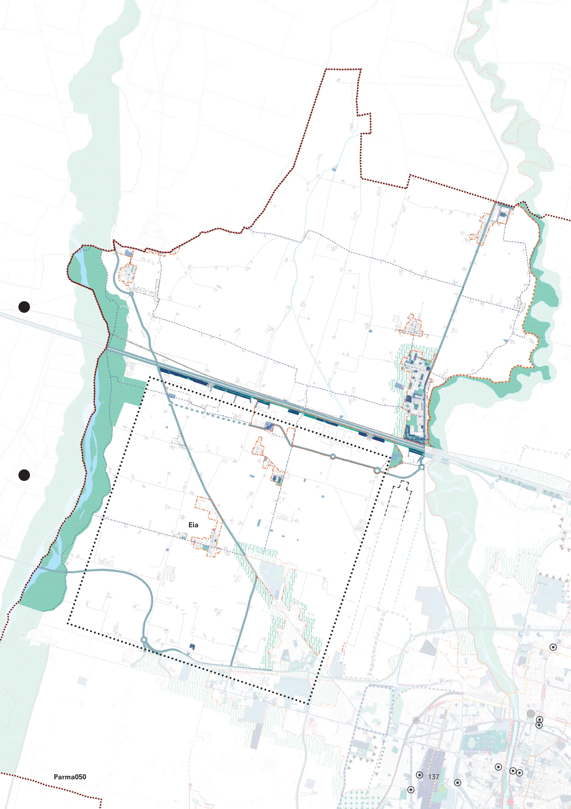
4.3.23b
Scala
1:30.000
I quartieri e
la città pubblica
ST.SL
Strategie locali
Quartiere Golese
PR050
Expo
Obiettivi:
Potenziamento del polo fieristico compatibilmente alla salvaguardia e valorizzazione del sistema paesaggistico;
Incremento dell’integrazione spaziale e funzionale del polo con il contesto, con attenzione allo sviluppo di attività
attrattive e di servizio.
INTERVENTI DI TRASFORMAZIONE
Indirizzi insediativi
Integrare il complesso fieristico con attività direzionali e logistico/produttive eventualmente connesse al possibile svi-
luppo della fermata AV e al potenziamento dell’asse strategico Casello-Fiere;
Migliorare la qualità spaziale e funzionale degli spazi aperti di pertinenza e degli spazi pubblici di connessione con
l’inserimento di fasce verdi, con particolare attenzione ai parcheggi.
Indirizzi infrastrutturali
Potenziare la linea di trasporto pubblico in relazione al segmento strutturale “Fiere- Stazione Ferroviaria”;
Dotare l’area di percorsi ciclopedonali di connessione con il centro della città;
Valorizzazione delle vie d’accesso all’area fieristica e potenziamento dell’asse Viale delle Esposizioni quale dorsale
primaria per il territorio.
Indirizzi ambientali
Riduzione dell’esposizione della popolazione ai campi elettromagnetici;
Allacciare alla rete fognaria gli edifici attualmente non serviti;
Localizzare le nuove edificazioni in continuità con quelle esistenti, evitando la formazioni di aree intercluse inutilizzabili.
Salvaguardare le zone di rispetto dei pozzi idropotabili;
Preservare la struttura centuriata;
Preservare l’organizzazione del reticolo idrografico minore e potenziare la rete ecologica del reticolo idrografico se-
condario.
PROGETTI STRATEGICI:
P1: Progetto “SuperQuadra” in connessione
alla zona fiere;
P2: Sviluppo “KM Verde” lungo l’autostrada
A1.
PROGETTI SPECIFICI:
P1: Piantumazione di alberature lungo i percorsi
secondari con relativa valorizzazione dell’intero
comparto lungo l’autostrada;
P2: Valorizzazione della viale delle fiere attraver-
so elementi vegetativi con funzione di mitaga-
zione ambientale e contestualmente prevedere
verde pubblico attrezzato sulla stessa via;
P3: Desigillazione e deimpermeabilizzazione del
manto asfaltato utilizzato a parcheggio;
P4: Completamento del fotovoltaico sulle
coperture non ancora utilizzate.
Criticità
criticità funzionali:
Ambito isolato rispetto alle principali dinamiche funzionali della città.
Mancanza di alberghi nelle vicinanze.
criticità infrastrutturali:
Carenza di collegamenti pedonali e ciclabili.
Carenza di corsie preferenziali o dedicate per il trasporto pubblico.
criticità ambientali:
Rumore: elevati livelli di rumore ambientale causati dalla vicinanza all’aeroporto e all’autostrada A1.
Risorse idriche: problematiche di natura idraulica correlate alla possibilità di drenaggio delle acque; parziale interes-
samento della zona di rispetto 60 gg e 180 gg dei pozzi idropotabili di Roncopascolo e dell’area di riserva idrica corri-
spondente; carenza nel trattamento dei reflui.
Strategia urbana generale:
Sviluppo della “Super Quadra” come Bioparco di nuova generazione.
Potenziare attraverso incremento dell’infrastruttura verde spazi pubblici e favorirne la riqualificazione.
Potenziare il sistema delle piste ciclabili extra urbane e in relazione al torrente sul lato est.
Incentivare l’impiego di fonti di energia alternativa per gli edifici esistenti.
Aumentare la vegetazione di mitigazione nelle strade principali di attraversamento.
Sviluppo della Green Infrastructure lungo la sponda destra del torrente Taro.
Trasformazione delle strade minori in viali alberati rinforzando i segni della centuriazione.
Prestazioni di qualità urbana richieste
Rumore: in fase di progettazione dovrà essere predisposta una valutazione previsionale di impatto acustico ad opera
di un tecnico competente, finalizzata alla verifica del rispetto dei limiti di zona e degli effetti sui recettori sensibili ed
eventualmente alla definizione di opportune misure di mitigazione, con particolare riferimento alle strade di acceso e ai
problemi indotti in prossimità di eventuali insediamenti residenziali; le eventuali misure di mitigazione dovranno essere
preferenzialmente realizzate con dune vegetate ed eventualmente con barriere artificiali opportunamente mascherate
con essenze arboree ed arbustive.
Risorse idriche: dovrà essere prevista la realizzazione di impianti separati tra la rete di canalizzazione delle acque mete-
oriche (rete acque bianche) e la rete fognante (rete acque nere). Per quanto riguarda i reflui civili prodotti dovrà essere
garantito l’allacciamento delle nuove aree di trasformazione alla rete fognaria afferente ad un impianto di trattamento
comunale, previa verifica della capacità del depuratore medesimo che, in caso non risulti sufficiente, dovrà essere
opportunamente adeguata.
Azioni:
Migliorare la qualità degli spazi di connessione tra le principali strutture, urbane e ambientali.
Mitigare gli impatti ambientali derivanti dalle attività alle fiere.
Sviluppo di aree verdi di mitigazione lungo i tratti infrastrutturali.
Aumento connettività con Aeroporto e la dorsale strtturale di TPL individuata nel PUG.
Attrezzature e spazi collettivi
Potenziare il verde nelle aree a parcheggio.
Favorire interventi di messa in sicurezza della rete stradale lungo viale delle fiere.
Sviluppo di pavimentazioni permeabili nei parcheggi e nelle aree intercluse.
Considerare eventuali connessioni con la stazione AV.
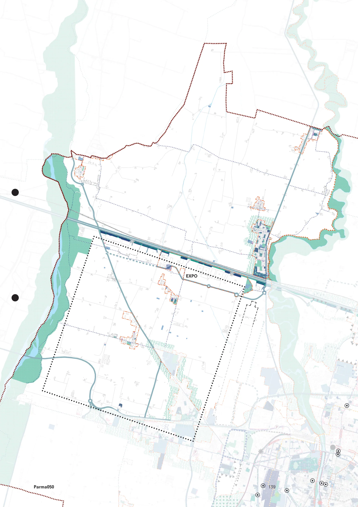
4.3.23c
Scala
1:30.000
I quartieri e
la città pubblica
ST.SL
Strategie locali
Quartiere Golese
PR050
Baganzola-Cervara
Obiettivi:
Ridurre l’impatto ambientale delle infrastrutture a sud;
Incrementare le relazioni con le emergenze naturali circostanti;
Ridurre l’impatto del traffico di attraversamento sugli insediamenti residenziali esistenti;
Raccogliere e trattare tutti gli scarichi non diretti in pubblica fognatura;
Ridurre la necessità di mobilità e prevedere interventi di mobilità sostenibile;
Delocalizzare le attività produttive incongrue;
Ridurre il carico antropico in relazione al Piano di Rischio Aeroportuale.
PROGETTI STRATEGICI:
P1: Sviluppo Bosco Orbitale;
P2: Integrazione del KM Verde con la parte sud
dell’insediamento urbano.
PROGETTUALITÁ SPECIFICHE:
P1: Aumentare le connessioni ciclo-pedonali
con il torrente Parma;
P2: implementazione delle parti ciclo-pedonali
di attraversamento urbano con l’eventuale;
piantumazione di alberature e elementi vege-
tativi. In particolare definire il segmento tra
Baganzola e Cervara.
Criticità:
Vicinanza alla linea ferroviaria Alta Velocità – Alta Capacità e all’Autostrada del Sole;
Presenza di flussi di traffico di attraversamento;
Presenza di attività produttive incongrue;
Forte impatto dell’aeroporto sugli insediamenti;
Condizioni di criticità acustica nelle zone prospicienti la S.P. di Golese principalmente a causa del traffico di attraver-
samento;
Alcune edificazioni non sono servite dal sistema di collettamento fognario e di depurazione.
Strategia urbana generale:
Potenziare attraverso incremento dell’infrastruttura verde spazi pubblici e favorirne la riqualificazione.
Potenziare il sistema delle piste ciclabili extra urbane e in relazione al torrente sul lato est.
Incentivare l’impiego di fonti di energia alternativa per gli edifici esistenti.
Aumentare la vegetazione di mitigazione nelle strade principali di attraversamento.
Sviluppo della Green Infrastructure e “Bosco Orbitale”.
Prestazioni di qualità urbana richieste:
Ai fini prestazionali di qualità urbana, nella progettazione degli spazi aperti sarà buona norma incrementare la qualità
di quest’ultimi attraverso l’attento studio dei materiali, il potenziamento del verde negli spazi di risulta e la completa
fruibilità dei percorsi ciclo-pedonali.
Azioni:
Mitigare gli impatti generati dalla linea ferroviaria TAV.
Mitigare gli impatti generati dalla presenza dell’aeroporto.
Localizzare i nuovi edifici all’interno del TU, evitando la formazioni di aree intercluse inutilizzabili.
Mitigare gli impatti da rumore della viabilità di attraversamento.
Collettare all’impianto fognario tutte le edificazioni non servite.
Attrezzature e spazi collettivi di carattere comunale:
Ridurre l’impatto del traffico di attraversamento sugli insediamenti residenziali esistenti intervenendo con la messa in
sicurezza della strada di attraversamento.
Collegare in rete i principali servizi pubblici favorendo la pedonalità nelle strade di quartiere.
Realizzare il verde pubblico attrezzato previsto dal piano al fine di costituire un margine netto e ben riconoscibile.
Spazi e attrezzature pubbliche di interesse sovracomunale:
Mantenere una continuità fisica tra il verde pubblico attrezzato del settore e il parco urbano e comprensoriale del
torrente Parma.
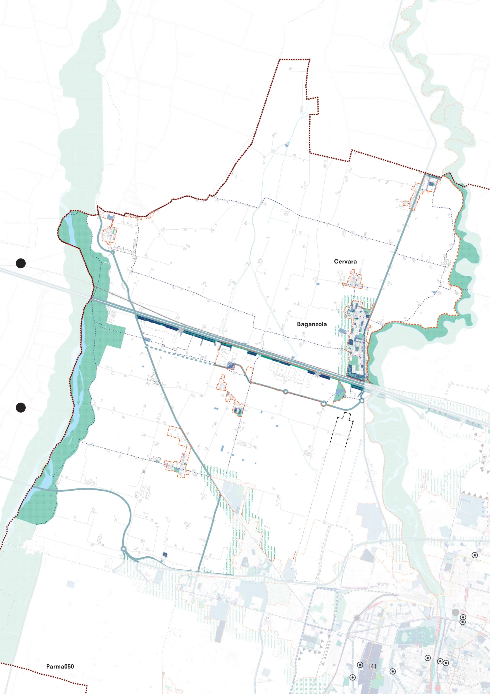
4.3.23d
Scala
1:30.000
I quartieri e
la città pubblica
ST.SL
Strategie locali
Quartiere Golese
PR050
Vicomero
Obiettivi:
Ridurre l’impatto ambientale delle infrastrutture tra cui “strada Baganzola”;
Incrementare le relazioni con le emergenze naturali circostanti e il Torrente Parma;
Raccogliere e trattare tutti gli scarichi non diretti in pubblica fognatura;
Ridurre la necessità di mobilità e prevedere una mobilità sostenibile;
Gestione dei rifiuti e decoro ambientale.
PROGETTI STRATEGICI:
P1: Sviluppo Green Infrastructure;
P2: Integrazione della frazione con il parco del
torrente Parma.
PROGETTUALITÁ SPECIFICHE:
P1: Aumentare le connessioni ciclo-pedonali
con il torrente Parma;
P2: implementazione delle parti ciclo-pedonali
di attraversamento urbano con l’eventuale
piantumazione di alberature e elementi vege-
tativi. In particolare definire il segmento tra
Baganzola e Vicomero.
Criticità:
Presenza di flussi di traffico di attraversamento su strada Baganzola;
Presenza di attività produttive incongrue;
Condizioni di elevata vulnerabilità degli acquiferi;
Presenza di scarichi non collettati.
Strategia urbana generale:
Potenziare attraverso incremento dell’infrastruttura verde spazi pubblici e favorirne la riqualificazione.
Potenziare il sistema delle piste ciclabili extra urbane e in relazione al torrente Parma sul lato ovest.
Incentivare l’impiego di fonti di energia alternativa per gli edifici esistenti.
Aumentare la vegetazione di mitigazione lungo via Baganzola di attraversamento.
Sviluppo della Green Infrastructure lungo la sponda ovest del torrente Parma.
Trasformazione delle strade minori in viali alberati rinforzando i segni della centuriazione (strada Galantina).
Prestazioni di qualità urbana richieste:
Ai fini prestazionali di qualità urbana, nella progettazione degli spazi aperti sarà buona norma incrementare la qualità
di quest’ultimi attraverso l’attento studio dei materiali, il potenziamento e la selezione accurata del verde negli spazi di
risulta e la completa fruibilità dei percorsi ciclo-pedonali.
Azioni:
Realizzare i principali obiettivi descritti in concertazione con il Comune di Torrile.
Realizzare lcollegamenti di varito tipo con il Torrente parma.
Localizzare le nuove infrastrutture verdi, incentivando la formazioni di aree ecologiche di qualità.
Mitigare gli impatti da rumore della viabilità di attraversamento.
Attrezzature e spazi collettivi di carattere comunale:
Ridurre l’impatto del traffico di attraversamento sugli insediamenti residenziali esistenti intervenendo con la messa in
sicurezza della strada nel tratto urbano.
Collegare in modo opportuno e favorendo la pedonalità nelle strade di quartiere.
Realizzare il verde piantumando nuovi alberi e creare spazi verdi pubblici.
Miglioramento della biodiversità locale.
Spazi e attrezzature pubbliche di interesse sovracomunale:
Mantenere una continuità fisica tra il verde urbano, il verde pubblico attrezzato e il parco territoriale del Torrente Parma.
Valorizzare il tracciato della pista ciclabile provinciale che interessa la frazione.
Innalzamento della qualità della vita dei residenti, offrendo spazi ricreativi innovativi e di socializzazione.
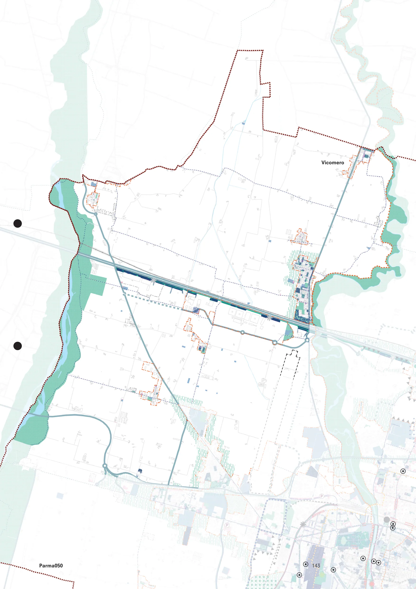
4.3.23e
Scala
1:30.000
I quartieri e
la città pubblica
ST.SL
Strategie locali
Quartiere Golese
PR050
Viarolo
Obiettivi:
Ridurre l’impatto ambientale delle infrastrutture;
Incrementare le relazioni con le emergenze naturali circostanti;
Raccogliere e trattare tutti gli scarichi non diretti in pubblica fognatura;
Ridurre la necessità di mobilità e prevedere una mobilità sostenibile.
Criticità:
Presenza di flussi di traffico di attraversamento;
Condizioni di elevata vulnerabilità degli acquiferi all’inquinamento;
Presenza di scarichi non collettati.
Strategia urbana generale:
Potenziare attraverso incremento dell’infrastruttura verde spazi pubblici e favorirne la riqualificazione.
Potenziare il sistema delle piste ciclabili extra urbane e in relazione al fiume Taro sul lato est.
Incentivare l’impiego di fonti di energia alternativa per gli edifici esistenti.
Aumentare la vegetazione di mitigazione lungo via Cremonese di attraversamento.
Sviluppo della Green Infrastructure lungo la sponda destra del fiume Taro.
Trasformazione delle strade minori in viali alberati rinforzando i segni della centuriazione.
Prestazioni di qualità urbana richieste:
Ai fini prestazionali di qualità urbana, nella progettazione degli spazi aperti sarà buona norma incrementare la qualità
di quest’ultimi attraverso l’attento studio dei materiali, il potenziamento del verde negli spazi di risulta e la completa
fruibilità dei percorsi ciclo-pedonali.
Azioni:
Realizzare i principali obiettivi descritti in concertazione con il Comune di Sissa Trecasali.
Localizzare le nuove edificazioni in continuità con quelle esistenti, evitando la formazioni di aree intercluse inutilizzabili.
Mitigare gli impatti da rumore della viabilità di attraversamento.
Attrezzature e spazi collettivi di carattere comunale:
Ridurre l’impatto del traffico di attraversamento sugli insediamenti residenziali esistenti intervenendo con la messa in
sicurezza della strada nel tratto urbano.
Favorire la pedonalità nelle strade di quartiere e di collegamento con il fiume Taro.
Realizzare il verde e i parcheggi previsti.
Spazi e attrezzature pubbliche di interesse sovracomunale:
Mantenere una continuità fisica tra il verde urbano, il verde pubblico attrezzato del settore e il parco territoriale del
fiume Taro.
Valorizzazione dei tracciati ciclabili che interessano la frazione.
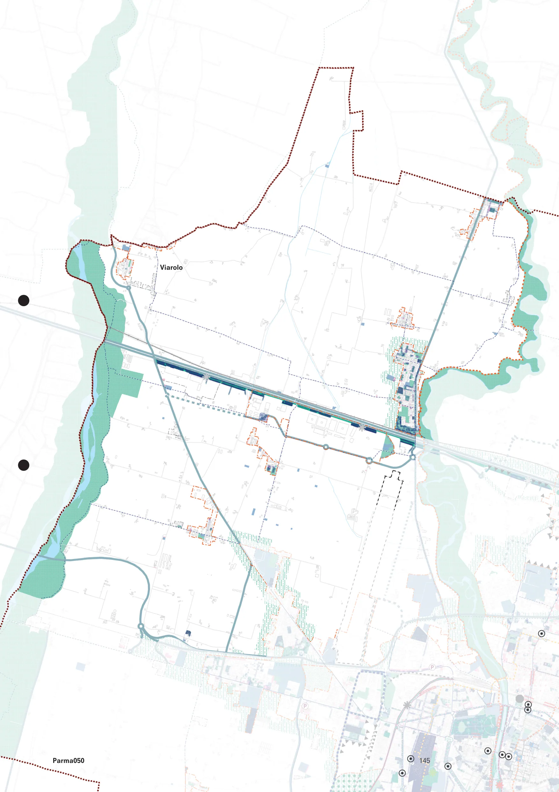